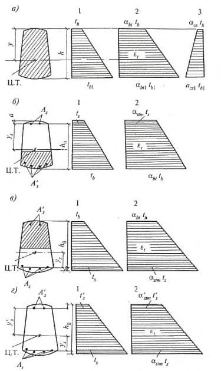
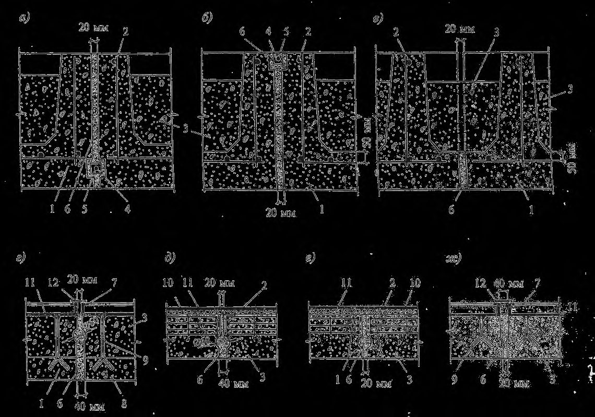
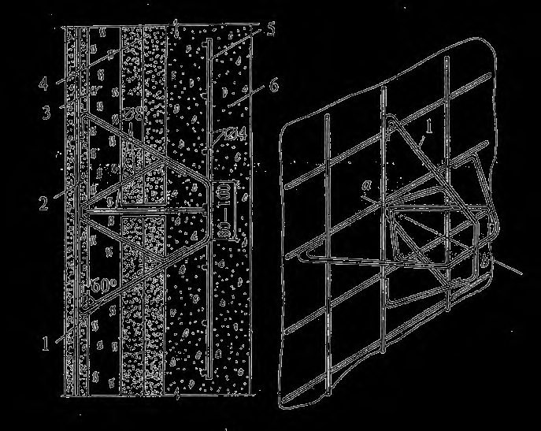
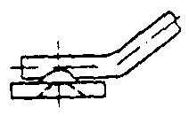

СП 27.13330.2017 «Бетонные и железобетонные конструкции, пред»
О документе: разработчики, утверждение, регистрация, ключевые слова
- 1 ИСПОЛНИТЕЛИ: Научно-исследовательский, проектно-конструкторский и технологический институт бетона и железобетона им. А.А. Гвоздева (НИИЖБ им. А.А. Гвоздева) - институт АО «НИЦ «Строительство»
- 2 ВНЕСЕН Техническим комитетом по стандартизации ТК 465 "Строительство"
- 3 ПОДГОТОВЛЕН к утверждению Департаментом градостроительной деятельности и архитектуры Министерства строительства и жилищно-коммунального хозяйства Российской Федерации (Минстрой России)
- 4 УТВЕРЖДЕН И ВВЕДЕН В ДЕЙСТВИЕ приказом Министерства строительства и жилищно-коммунального хозяйства Российской Федерации от 15 мая 2017 г. № 786/пр и введен в действие с 16 ноября 2017 г.
- 5 ЗАРЕГИСТРИРОВАН Федеральным агентством по техническому регулированию и метрологии (Росстандарт). Пересмотр СП 27.13330.2011 «СНиП 2.03.04-84 Бетонные и железобетонные конструкции, предназначенные для работы в условиях воздействия повышенных и высоких температур»
В случае пересмотра (замены) или отмены настоящего свода правил соответствующее уведомление будет опубликовано в установленном порядке. Соответствующая информация, уведомление и тексты размещаются также в информационной системе общего пользования - на официальном сайте разработчика (Минстрой России) в сети Интернет
© Минстрой России, 2017
Настоящий нормативный документ не может быть полностью или частично воспроизведен, тиражирован и распространен в качестве официального издания на территории Российской Федерации без разрешения Минстроя России
Дата введения 2017-11-16
УДК ОКС 91.080.99
Ключевые слова: обычный бетон, жаростойкий бетон, арматура, повышенные и высокие температуры, прочностные и деформационные характеристики бетона и арматуры, расчет усилий от воздействия температуры, расчеты по первой и второй группе предельных состояний с учетом температурных воздействий, расчет предварительно напряженных конструкций, конструктивные требования
Руководитель организации-разработчика:
Генеральный директор АО «НИЦ «Строительство»
А.В. Кузьмин
Руководитель разработки:
Директор НИИЖБ им. А.А. Гвоздева, д.т.н.
А.Н. Давидюк
Исполнители:
Заведующая лаб. №6, к.т.н
И.С. Кузнецова
Консультант, д.т.н.
А.Ф. Милованов
Заведующая лаб. №7, к.т.н.
Л.А. Титова
Зам. зав. лаб.№7, к.т.н.
М.Ю. Титов
Зам. зав. лаб.№6
В.Г. Рябченкова
Младший научный сотрудник
М.П. Корнюшина
Ведущий инженер
Ю.С. Рянзина
Введение
Настоящий свод правил разработан с учетом обязательных требований, установленных в Федеральных законах от 27 декабря 2002 г. № 184-ФЗ «О техническом регулировании» [1], от 30 декабря 2009 г. № 384-ФЗ «Технический регламент о безопасности зданий и сооружений» [2].
Настоящий свод правил содержит основные положения по расчету и проектированию бетонных и железобетонных конструкций промышленных зданий и сооружений из тяжелого и легкого конструкционного бетона, работающих в условиях воздействия повышенных технологических температур (от 50 °С до 200 °С включительно) с учетом влажной среды, а также тепловых агрегатов из жаростойкого бетона, армированного обычной и жаростойкой арматурой, которые эксплуатируются в условиях воздействия высоких технологических температур (свыше 200 °С до 1400 °С).
Свод правил разработан коллективом НИИЖБ им. А.А. Гвоздева АО «НИЦ «Строительство» под руководством д-ра техн. наук, проф. А.Ф. Милованова . Исполнители: канд. техн. наук И.С. Кузнецова , Л.А. Титова , М.Ю. Титов ; мл. науч. сотр. В.Г. Рябченкова и М.П. Корнюшина , ведущий инженер Ю.С. Рянзина .
В разработке свода правил приняли участие канд. техн. наук Р.Я. Ахтямов, ст. науч. сотр. Р.Р. Ахтямов (ООО «УралНИИстром»).
1Область применения
Настоящий свод правил распространяется на проектирование бетонных и железобетонных конструкций, подвергающихся систематическим воздействиям повышенных (от 50 °С до 200 ºС включительно) и высоких (свыше 200 ºС) технологических температур (далее - воздействия температур) и увлажнению техническим паром.
Свод правил устанавливает требования по проектированию указанных конструкций, изготовляемых из тяжелых бетонов средней плотностью от 2200 до 2500 кг/м³ (далее обычный бетон) и жаростойких бетонов плотной структуры средней плотностью от 900 до 2500 кг/м³ .
Проектирование специальных железобетонных конструкций (резервуаров дымовых труб, емкостей, фундаментов доменных печей и др.), подвергающихся систематическому воздействию температур свыше 50 ºС, следует проводить с учетом дополнительных требований, предъявляемых к этим сооружениям соответствующими нормативными документами.
Требования настоящего свода правил не распространяются на конструкции из жаростойкого бетона ячеистой структуры.
Свод правил не распространяется на определение огнестойкости бетонных и железобетонных конструкций.
2Нормативные ссылки
В настоящем своде правил использованы нормативные ссылки на следующие документы:
ГОСТ 390-96 Изделия огнеупорные шамотные и полукислые общего назначения и массового производства. Технические условия
ГОСТ 530-2012 Кирпич и камень керамические. Общие технические условия
ГОСТ 2694-78 Изделия пенодиатомитовые и диатомитовые теплоизоляционные. Технические условия
ГОСТ 2850-95 Картон асбестовый. Технические условия
ГОСТ 4157-79 Изделия огнеупорные динасовые. Технические условия
ГОСТ 4543-71 Прокат из легированной конструкционной стали. Технические условия
ГОСТ 4689-94 Изделия огнеупорные периклазовые. Технические условия
ГОСТ 5040-96 Изделия огнеупорные и высокоогнеупорные легковесные теплоизоляционные. Технические условия
\_\_\_\_\_\_\_\_\_\_\_\_\_\_\_\_\_\_\_\_\_\_\_\_\_\_\_\_\_\_\_\_\_\_\_\_\_\_\_\_\_\_\_\_\_\_\_\_\_\_\_\_\_\_\_\_\_\_\_\_\_\_\_\_\_\_\_\_\_\_\_\_\_\_\_\_\_\_\_
Concrete and reinforced concrete structures intended for the service in elevated and high temperatures
ГОСТ 5381-93 Изделия высокоогнеупорные хромитопериклазовые. Технические условия ГОСТ 5632-2014 Легированные нержавеющие стали и сплавы коррозионно-стойкие, жаростойкие и жаропрочные. Марки ГОСТ 5949-75 Сталь сортовая и калиброванная коррозионностойкая, жаростойкая и жаропрочная. Технические условия ГОСТ 9573-2012 Плиты из минеральной ваты на синтетическом связующем теплоизоляционные. Технические условия ГОСТ 10499-95 Изделия теплоизоляционные из стеклянного штапельного волокна. Технические условия ГОСТ 10888-93 Изделия высокоогнеупорные периклазохромитовые для кладки сводов сталеплавильных печей. Технические условия ГОСТ 10922-2012 Арматурные и закладные изделия, их сварные, вязаные и механические соединения для железобетонных конструкций. Общие технические условия ГОСТ 12865-67 Вермикулит вспученный ГОСТ 13015-2012 Изделия бетонные и железобетонные для строительства. Общие технические требования. Правила приемки, маркировки, транспортирования и хранения ГОСТ 14098-2014 Соединения сварные арматуры и закладных изделий железобетонных конструкций. Типы, конструкции и размеры ГОСТ 20901-2016 Изделия огнеупорные для кладки воздухонагревателей и воздухопроводов горячего дутья доменных печей. Технические условия ГОСТ 20910-90 Бетоны жаростойкие. Технические условия ГОСТ 21880-2011 Маты из минеральной ваты прошивные теплоизоляционные. Технические условия ГОСТ 24704-2015 Изделия огнеупорные корундовые и высокоглиноземистые. Технические условия ГОСТ 24748-2003 Изделия известково-кремнеземистые теплоизоляционные. Технические условия ГОСТ 25192-2012 Бетоны. Классификация и общие технические требования СП 16.13330.2011 «СНиП II-23-81* Стальные конструкции» СП 20.13330.2016 «СНиП 2.01.07-85* Нагрузки и воздействия» СП 28.13330.2012 «СНиП 2.03.11-85 Защита строительных конструкций от коррозии» СП 63.13330.2012 «СНиП 52-01-2003 Бетонные и железобетонные конструкции. Основные положения» (с изменениями № 1, № 2) СП 70.13330.2012 «СНиП 3.03.01-87 Несущие и ограждающие конструкции» (с изменением № 1)
СП 131.13330.2012 «СНиП 23-01-99* Строительная климатология» (с изменением № 2)
Примечание - При пользовании настоящим сводом правил целесообразно проверить действие ссылочных документов в информационной системе общего пользования - на официальном сайте федерального органа исполнительной власти в сфере стандартизации в сети Интернет или по ежегодному информационному указателю «Национальные стандарты», который опубликован по состоянию на 1 января текущего года, и по выпускам ежемесячного информационного указателя «Национальные стандарты» за текущий год. Если заменен ссылочный документ, на который дана недатированная ссылка, то рекомендуется использовать действующую версию этого документа с учетом всех внесенных в данную версию изменений. Если заменен ссылочный документ, на который дана датированная ссылка, то рекомендуется использовать версию этого документа с указанным выше годом утверждения (принятия). Если после утверждения настоящего свода правил в ссылочный документ, на который дана датированная ссылка, внесено изменение, затрагивающее положение, на которое дана ссылка, то это положение рекомендуется применять без учета данного изменения. Если ссылочный документ отменен без замены, то положение, в котором дана ссылка на него, рекомендуется применять в части, не затрагивающей эту ссылку. Сведения о действии сводов правил целесообразно проверить в Федеральном информационном фонде стандартов.
3Термины и определения
В настоящем своде правил применены следующие термины с соответствующими определениями:
- 3.1анкер
- Крепежная деталь (элемент крепления) из круглого или профилированного металлического профиля.
- 3.2высокая температура
- Эксплуатационная температура воздействия на конструкции в диапазоне от 200 о С до 1400 о С.
- 3.3длительный нагрев
- Воздействие расчетной температуры в период эксплуатации (различают постоянный и циклический длительный нагрев).
- 3.4жаростойкий бетон
- Тяжелый и легкий бетоны плотной структуры, применяемые в бетонных и железобетонных конструкциях, работающих в условиях воздействия высоких технологических температур.
- 3.5кратковременный нагрев
- Первый разогрев конструкции до расчетной температуры при ее изготовлении.
- 3.6обычный бетон
- Тяжелый бетон средней плотностью от 2200 до 2500 кг/см³ , применяемый в железобетонных конструкциях, работающих в условиях воздействия повышенных технологических температур.
- 3.7постоянный нагрев
- Длительный температурный режим, при котором в процессе эксплуатации конструкция подвергается нагреву с колебаниями температуры до 30 % расчетного значения.
- 3.8повышенная температура
- Эксплуатационная температура воздействия на бетонные и железобетонные конструкции в интервале от 50 °С до 200 о С включительно.
- 3.9футеровка
- Ненесущий элемент конструкции теплового агрегата, работающего в условиях воздействия высоких температур, представляющий собой защитную внутреннюю облицовку печей, топок, дымовых труб и других нагреваемых поверхностей, выполняемую из жаростойких тяжелых и легких бетонов.
- 3.10циклический нагрев
- Длительный температурный режим, при котором в процессе эксплуатации конструкция периодически подвергается повторяющемуся нагреву с колебаниями температуры более 30 % от расчетной величины при длительности циклов от 3 ч до 30 дней.
4Общие указания
Основные положения
Фундаменты, которые при эксплуатации постоянно подвергаются воздействию температуры до 250 ºС включительно, допускается принимать из обычного бетона.
Бетонные и железобетонные конструкции, предназначенные для работы в условиях воздействия высоких температур свыше 200 ºС, следует предусматривать из жаростойкого бетона.
СП 27.13330.2017
Несущие элементы конструкций тепловых агрегатов, выполняемые из жаростойкого бетона, сечение которых может нагреваться до температуры свыше 1000 ºС, допускается применять только после опытной проверки.
Выбор конструктивных решений следует проводить, исходя из технико-экономической целесообразности их применения в конкретных условиях строительства с учетом максимального снижения материалоемкости, трудоемкости и стоимости строительства, за счет: применения эффективных строительных материалов и конструкций; снижения веса конструкций; наиболее полного использования физико-механических свойств материалов; использования местных строительных материалов; соблюдения требований по экономному расходованию основных строительных материалов.
В процессе конструирования тепловых агрегатов необходимо учитывать технологические требования к их изготовлению, требования по эксплуатации сооружений и тепловых агрегатов, а также требования по экологии, устанавливаемые соответствующими нормативными документами.
Жаростойкие бетоны в элементах конструкций тепловых агрегатов следует применять в соответствии с приложением А.
Классы жаростойкого бетона по предельно допустимой температуре применения в соответствии с ГОСТ 20910 в зависимости от вида вяжущего, заполнителей, тонкомолотых добавок и отвердителя приведены в таблице 5.1.
При проектировании конструкций из жаростойких бетонов по ГОСТ 20910 необходимо учитывать дополнительные требования к исходным материалам для жаростойких бетонов, подбору состава и технологии их изготовления, а также специфику производства работ по возведению конструкций из жаростойких бетонов.
При невозможности обеспечения указанных требований расчет таких конструкций допускается проводить только на воздействие температуры и нагрузки, без учета периодического увлажнения. При этом в расчетном сечении конструкции не должны учитываться крайние слои бетона толщиной 20 мм с каждой стороны, подвергающиеся замачиванию до 7 ч, и толщиной 50 мм - при длительности замачивания бетона более 7 ч, либо должна предусматриваться защита поверхности бетона от периодического замачивания.
Окрашенные поверхности бетона или гидроизоляционные покрытия этих конструкций должны быть светлых тонов.
Основные расчетные требования
Расчеты должны обеспечивать надежность бетонных и железобетонных конструкций, предназначенных для работы в условиях воздействия повышенных и высоких температур, как на стадии их изготовления, так и в течение всего срока их службы в соответствии с предъявляемыми к ним требованиями.
Расчетные схемы и основные предпосылки для расчета бетонных и железобетонных конструкций следует устанавливать в соответствии с условиями их действительной работы в предельном состоянии, с учетом, в необходимых случаях, пластических свойств бетона и арматуры, наличия трещин в растянутом бетоне, а также влияния усадки и ползучести бетона, как при нормальной температуре, так и при воздействии повышенных и высоких температур.
Расчет статически определимых конструкций по предельным состояниям первой и второй групп (за исключением расчета по образованию трещин) следует вести только для стадии длительного нагрева. Расчет по образованию трещин необходимо проводить для стадий кратковременного и длительного нагрева с учетом усилий, возникающих от нелинейного распределения температуры бетона по высоте сечения элемента.
Расчет статически неопределимых конструкций и их элементов по предельным состояниям первой и второй групп следует проводить: а) на кратковременный нагрев конструкции по режиму согласно СП 70.13330, когда возникают наибольшие усилия от воздействия температуры. При этом жесткость элементов конструкции определяется от кратковременного действия всех нагрузок и нагрева; б) на длительный нагрев - при воздействии на конструкцию расчетной температуры в период эксплуатации, когда происходит снижение прочности и жесткости элементов в результате воздействия длительного нагрева и нагрузки. При этом жесткость элементов определяется от длительного воздействия всех нагрузок и нагрева.
Расчетные усилия и деформации от кратковременного и длительного нагрева определяют с учетом коэффициента надежности по температуре γt . Коэффициент надежности по температуре γt принимается: а) при расчете по предельным состояниям первой группы равным 1,1; б) по предельным состояниям второй группы равным 1,0.
Таблица 4.1
| Статическая схема конструкции и расчетная стадия работы | Нагрузки и коэффициенты надежности по нагрузке γ f , температурные воздействия и коэффициенты надежности по температуре γ t , принимаемые при расчете | Нагрузки и коэффициенты надежности по нагрузке γ f , температурные воздействия и коэффициенты надежности по температуре γ t , принимаемые при расчете | Нагрузки и коэффициенты надежности по нагрузке γ f , температурные воздействия и коэффициенты надежности по температуре γ t , принимаемые при расчете |
|---|---|---|---|
| по прочности | на выносливость | по деформациям | |
| Статически определимые конструкции при длительном нагреве | Постоянные, длительные и кратковременные нагрузки при γ f > 1,0 | Постоянные, длительные и кратковременные нагрузки при γ f = 1,0 | Постоянные, длительные и кратковременные нагрузки при γ f = 1,0 и температурные деформации при γ = 1,0 |
| Статически неопределимые конструкции при кратковременном нагреве | Постоянные, длительные и кратковременные нагрузки при γ f > 1,0 и наибольшие усилия от воздействия температуры при γ t = 1,1 | Постоянные, длительные и кратковременные нагрузки при γ f = 1,0 и наибольшие усилия от воздействия температуры при γ t = 1,0 | t Постоянные, длительные и кратковременные нагрузки при γ f = 1,0 и наибольшие усилия от воздействия температуры и температурные деформации при γ t = 1,0 |
| Статически неопределимые конструкции при длительном нагреве | Постоянные, длительные и кратковременные нагрузки при γ f > 1,0 и усилия от воздействия температуры при γ t = 1,1 | Постоянные, длительные и кратковременные нагрузки при γ f = 1,0 и усилия от воздействия температуры при γ t = 1,0 | Постоянные, длительные и кратковременные нагрузки при γ f = 1,0 и усилия от воздействия температуры и температурные деформации при γ t = 1,0 |
Примечания
1 Бетонные конструкции рассчитывают только по прочности.
2 При расчете статически неопределимых конструкций, кроме сочетаний воздействий температуры и нагрузок, указанных в настоящей таблице, в необходимых случаях следует проверить другие возможные неблагоприятные сочетания воздействий, в том числе и при остывании.
3 В статически неопределимых конструкциях допускается проводить расчет: а) при кратковременном нагреве только на наибольшие усилия от воздействия температуры, если усилия от постоянных, длительных и кратковременных нагрузок вызывают напряжения сжатия в бетоне σb ≤ 0,1 МПа; б) при длительном нагреве свыше 700 °С - на совместное воздействие постоянных, длительных и кратковременных нагрузок без учета усилий от длительного нагрева.
4 При расчете на кратковременный нагрев длительная нагрузка учитывается как кратковременная.
СП 27.13330.2017 б) при нагреве бетонов составов № 2-11, 23 и 24 в интервале температур от 200 °С до 500 ºС - по расчетной температуре, а при нагреве свыше 500 ºС - при 500 ºС; в) при нагреве бетонов составов № 12-21, 29 и 30 в интервале температур от 200 °С до 400 ºС - по расчетной температуре, а при нагреве свыше 400 ºС - при 400 ºС.
Для конструкций, находящихся на наружном воздухе, наибольшие температуры нагрева бетона и арматуры определяют по расчетной летней температуре наружного воздуха, принимаемой по средней максимальной температуре наружного воздуха наиболее жаркого месяца в районе строительства по СП 131.13330. Вычисленные температуры не должны превышать предельно допустимых температур применения бетона по ГОСТ 20910 и арматуры - по таблице 5.11.
1/600 длины элемента или расстояния между сечениями, закрепленными от смещения; 1/10 высоты сечения и не менее 10 мм.
Для элементов статически неопределимых конструкций значения эксцентриситета продольной силы относительно центра тяжести приведенного сечения е о принимают равным значению эксцентриситета, полученного из статического расчета, но не менее еа .
Для элементов статически определимых конструкций эксцентриситет е о принимают равным сумме эксцентриситетов из статического расчета конструкции, случайного и температурного от неравномерного нагрева по высоте сечения элемента.
Дополнительные указания по проектированию предварительно напряженных конструкций
Основные потери предварительного напряжения арматуры для конструкций из обычного бетона состава № 1 и жаростойких бетонов составов № 2, 3, 6, 7, 10 и 11 (по таблице
- 5.1) определяют, как для тяжелого бетона по СП 63.13330. Потери от усадки жаростойкого бетона следует принимать на 10 МПа больше указанных в СП 63.13330.
Время в сутках следует принимать: при определении потерь от ползучести - со дня обжатия бетона, при определении потерь от усадки - со дня окончания бетонирования до нагрева конструкции.
Дополнительные потери предварительного напряжения арматуры принимают по таблице 4.2.
Таблица 4.2
| Фактор, вызывающий дополнительные потери предварительного напряжения в арматуре при ее нагреве | Величина дополнительных потерь предварительного напряжения, МПа |
|---|---|
| Усадка бетона обычного состава №1ижаростойких бетонов составов | |
| №2, 3, 6, 7, 10, 11 по таблице 5.1 при нагреве: кратковременном | 40 |
| длительном постоянном | 80 |
| длительном циклическом | 60 |
| Ползучесть бетона обычного состава №1ижаростойких бетонов составов №2, 3, 6, 7, 10 и 11 по таблице 5.1 | |
| кратковременном | 10 σ bp |
| длительном постоянном | 15 σ bp |
| длительном циклическом | 18 σ bp |
| сухого при нагреве: | |
| кратковременном | 4 σ bp |
| длительном постоянном | 6 σ bp |
| длительном циклическом | 8 σ bp |
| Релаксация напряжений арматуры: | |
| проволочной классов В р 1200, В р 1500, К1400, К1500 | 0,0012 ∆ t s σ sp |
| стержневой классов А600, А800, А1000 | 0,001 ∆ t s σ sp |
| Разность деформаций бетона и арматуры от воздействия температуры | (α st - α bt ) ∆ t s E s β s |
О б о з н а ч е н и я:
- ∆ t s - разность между температурой арматуры при эксплуатации, определяемой теплотехническим расчетом и температурой арматуры при натяжении, которую допускается принимать равной 20 ºС;
- α bt - коэффициент, принимаемый по таблице 5.6 в зависимости от температуры бетона на уровне напрягаемой арматуры и длительности нагрева;
- Еs - модуль упругости арматуры, принимаемый по таблице 5.17; α st и β s - коэффициенты, принимаемые по таблице 5.14 в зависимости от температуры арматуры.
Примечания
- 1 Потери предварительного напряжения от релаксации напряжений арматуры принимают для кратковременного и длительного нагрева одинаковыми и учитывают при температуре нагрева арматуры свыше 40 ºС.
- 2 Потери предварительного напряжения арматуры от разности деформаций бетона и арматуры учитывают в элементах, выполненных из обычного бетона, при нагреве арматуры свыше 100 ºС и в элементах из жаростойкого бетона при нагреве арматуры свыше 70 ºС.
- 3 Если от усилий, вызванных совместным действием нагрузки, температуры и предварительного обжатия, в бетоне на уровне арматуры в стадии эксплуатации возникают растягивающие напряжения, то дополнительные потери от ползучести бетона не учитывают.
- 4 Потери от ползучести бетона при натяжении в двухосном направлении следует уменьшить на 15 %.
где М - момент от собственного веса элемента;
Р усилие предварительного обжатия; еор - эксцентриситет усилия Р относительно центра тяжести приведенного сечения; ysp расстояние от усилия Р до центра тяжести сечения.
При определении усилий от воздействия температуры жесткость элемента вычисляют по 8.22.
проволочной классов Вр1200, Вр1500, К1400, К1500
где σ sp > 0 - остаток предварительного напряжения в арматуре, %, исходного значения при изготовлении; t s > 20 - температура арматуры при нагреве, ºС.
Из формул (4.2)-(4.5) следует, что во время нагрева происходит полная потеря предварительного напряжения в стержневой арматуре класса А600 при ее нагреве свыше 210 ºС, класса А800 - свыше 220 ºС, класса А1000 - свыше 350 ºС и в проволочной арматуре классов Вр1200, Вр1500, К1400, К1500 - свыше 330 ºС.
5Материалы для бетонных и железобетонных конструкций
Бетон
Показатели качества бетона и их применение при проектировании
Жаростойкий бетон средней плотности до 1100 кг/м³ включительно следует предусматривать преимущественно для ненесущих ограждающих конструкций и в качестве теплоизоляционных материалов.
Жаростойкий бетон средней плотности более 1100 кг/м³ следует предусматривать для несущих конструкций.
Традиционные составы обычного и жаростойких бетонов для бетонных и железобетонных конструкций, предназначенных для работы в условиях воздействия повышенных и высоких температур, приведены в таблице 5.1.
Дополнительные составы жаростойких бетонов приведены в справочном пособии [3]. Однако необходимые расчетные коэффициенты условий работы для дополнительных составов [3] не исследованы, и их применение возможно только после проведения соответствующих исследований по установлению необходимых расчетных параметров.
Нормируемые показатели качества бетона должны быть обеспечены соответствующим подбором состава бетонной смеси, технологией приготовления бетонных смесей и технологией производства бетонных работ при изготовлении бетонных и железобетонных изделий и конструкций. Подбор составов жаростойких бетонов следует проводить в соответствии с пособием [3].
Для обеспечения нормируемых показателей качества бетона в конструкциях необходимо осуществлять контроль соответствия нормируемых показателей бетона, как на стадии изготовления бетонной смеси, так и на стадии бетонирования конструкций.
СП 27.13330.2017 Таблица 5.1
| № состава бетона | Класс бетона по предельно допустимой температуре применения (И) | Исходные | Исходные | Исходные | Исходные | Класс бетона по прочности на сжатие (В) | Марка бетона по средней плотности (D), кг/м³ | Марка бетона по водонепро- ницаемости (W) | Марка бетона по морозо- стойкости (F 1 ) | Марка бетона по термической стойкости | Марка бетона по термической стойкости |
|---|---|---|---|---|---|---|---|---|---|---|---|
| № состава бетона | Класс бетона по предельно допустимой температуре применения (И) | вяжущее | отвердитель | тонкомолотая добавка | заполнители | Класс бетона по прочности на сжатие (В) | Марка бетона по средней плотности (D), кг/м³ | Марка бетона по водонепро- ницаемости (W) | Марка бетона по морозо- стойкости (F 1 ) | в водных тепло- сменах | в воз- душных тепло- сменах |
| Обычные бетоны | Обычные бетоны | Обычные бетоны | Обычные бетоны | Обычные бетоны | Обычные бетоны | Обычные бетоны | Обычные бетоны | Обычные бетоны | Обычные бетоны | Обычные бетоны | Обычные бетоны |
| 1 | И2 | Портландцемент, быстротвердеющий портландцемент, шлакопортланд- цемент | Не применяется | Не применяется | Гранитовые, доломитовые, плотные известняковые, сиенитовые, плотные пески | В20-В60 | D2200- D2500 | W4-W10 | F 1 25- F 1 100 | - | - |
| 1а | И2 | То же | То же | Микро- наполнители (до 11 %) | То же | В20-В60 | То же | W4-W12 | То же | - | - |
| 1б | И2 | Портландцемент, быстротвердеющий портландцемент | То же | Расширяющая добавка (5 %-20 %) | То же | В20-В60 | То же | W12-W20 | F 1 300- F 1 500 | - | - |
| Жаростойкие бетоны | Жаростойкие бетоны | Жаростойкие бетоны | Жаростойкие бетоны | Жаростойкие бетоны | Жаростойкие бетоны | Жаростойкие бетоны | Жаростойкие бетоны | Жаростойкие бетоны | Жаростойкие бетоны | Жаростойкие бетоны | Жаростойкие бетоны |
| 2 | И3 | Портландцемент, быстротвердеющий портландцемент, шлакопортландце- мент | Не применяется | Не применяется | Андезитовые, базальтовые, диабазовые, диоритовые | В3,5-В40 | Не норми- руется | W2-W8 | F 1 25-F 1 75 | Т15, Т110, Т115, Т125 | Не норми- руется |
| 3 | И3 | То же | То же | То же | Из доменных отвальных шлаков | В3,5-В40 | То же | То же | То же | То же | То же |
| 4 | И9 | То же | То же | Из золы уноса | Аглопоритовые, из боя керамического кирпича | В2-В20 | D1800 D1900 | То же | То же | То же | То же |
Продолжение таблицы 5.1
| № состава бетона | Класс бетона по предельно допустимой температуре применения (И) | Исходные материалы | Исходные материалы | Исходные материалы | Исходные материалы | Класс бетона по прочности на сжатие (В) | Марка бетона по средней плотности (D), кг/м³ | Марка бетона по водонепро- ницаемости (W) | Марка бетона по морозо- стойкости | Марка бетона по термической стойкости | Марка бетона по термической стойкости |
|---|---|---|---|---|---|---|---|---|---|---|---|
| № состава бетона | Класс бетона по предельно допустимой температуре применения (И) | вяжущее | отвердитель | тонкомолотая добавка | заполнители | Класс бетона по прочности на сжатие (В) | Марка бетона по средней плотности (D), кг/м³ | Марка бетона по водонепро- ницаемости (W) | (F) | в водных тепло- сменах | в воз- душных тепло- сменах |
| 5 | И8 | Портландцемент, быстротвердеющий портландцемент, шлакопортландце- мент | Не применяется | Из литого шлака, золы уноса, боя керамического кирпича | Из шлаков металлургичес- ких пористых (шлаковая пемза) | В2-В15 | Не норми- руется | W2-W8 | F 1 25÷F 1 75 | Т 1 15, Т 1 10, Т 1 15, Т 1 25 | Не норми- руется |
| 6 | И7 | То же | То же | Шамотная, из золы-уноса, боя керамического кирпича, из отвального и гранулирован- ного доменного шлака | Андезитовые, базальтовые, диабазовые, диоритовые | В3,5-В40 | То же | То же | То же | То же | То же |
| 7 | И7 | То же | То же | То же | Из доменных отвальных шлаков | В3,5-В40 | То же | То же | То же | То же | То же |
| 8 | И8 | То же | То же | Из отвального и гранули- рованного доменного шлака, боя керамического кирпича, золы-уноса | Из шлаков топливных, туфовые | В2-В15 | D1800 | То же | То же | То же | То же |
| 9 | И9 | То же | То же | Из боя керамического кирпича | Из боя керамического кирпича | В2-В15 | Не норми- руется | То же | То же | То же | То же |
| 10 | И11 | Портландцемент, быстротвердеющий портландцемент | То же | То же, и золы уноса | Шамотные кусковые и из боя изделий | В3,5-В35 | То же | То же | То же | То же | То же |
Продолжение таблицы 5.1
| № состава бетона | Класс бетона по предельно допустимой температуре применения (И) | Исходные материалы | Исходные материалы | Исходные материалы | Исходные материалы | Класс бетона по прочности на сжатие (В) | Марка бетона по средней плотности (D), кг/м³ | Марка бетона по водонепро- ницаемости (W) | Марка бетона по морозо- стойкости | Марка бетона по термической стойкости | Марка бетона по термической стойкости |
|---|---|---|---|---|---|---|---|---|---|---|---|
| № состава бетона | Класс бетона по предельно допустимой температуре применения (И) | вяжущее | отвердитель | тонкомолотая добавка | заполнители | Класс бетона по прочности на сжатие (В) | Марка бетона по средней плотности (D), кг/м³ | Марка бетона по водонепро- ницаемости (W) | (F) | в водных тепло- сменах | в воз - душных тепло- сменах |
| 11 | И12 | Портландцемент, быстротвердеющий портландцемент | Не применяется | Шамотная | Шамотные кусковые и из боя изделий | В3,5-В40 | Не норми- руется | W2-W8 | F 1 25÷F 1 75 | Т 1 15, Т 1 10, Т 1 15, Т 1 25 | Не норми- руется |
| 12 | И8 | Жидкое стекло | Саморассы- пающиеся шлаки | Из шлаков ферромарганца, силикомарганца | Из шлаков ферромарганца, силикомарганца | В2-В20 | То же | То же | То же | То же | То же |
| 13 | И6 | То же | Кремнефтори стый натрий, нефелиновый шлам, саморассы- пающиеся шлаки | Шамотная | Андезитовые, базальтовые, диабазовые | В2-В20 | То же | То же | То же | То же | То же |
| 14 | И10 | То же | Кремнефторис- тый натрий | Шамотные, из катализатора ИМ-2201 отработанного | Шамотные кусковые и из боя изделий | В2-В20 | То же | То же | То же | То же | То же |
| 15 | И11 | То же | Нефелиновый шлам, саморассыпа- ющиеся шлаки | То же | Из смеси шамотных кусковых или из боя изделий и карборунда | В2-В20 | То же | То же | То же | То же | То же |
| 16 | И13 | То же | Кремнефто- ристый натрий | Магнезитовая | Шамотные кусковые и из боя изделий | В2-В15 | То же | То же | То же | То же | То же |
| 17 | И12 | То же | Нефелиновый шлам, саморассыпа- ющиеся шлаки | Шамотная, из катализатора ИМ-2201 отработанного | То же | В2-В15 | То же | То же | То же | То же | То же |
Продолжение таблицы 5.1
| № состава бетона | Класс бетона по предельно допустимой температуре применения (И) | Исходные материалы | Исходные материалы | Исходные материалы | Исходные материалы | Класс бетона по прочности на сжатие (В) | Марка бетона по средней плотности (D), кг/м³ | Марка бетона по водо- непро ница- емости (W) | Марка бетона по морозо- стойкости (F) | Марка бетона по термической стойкости | Марка бетона по термической стойкости |
|---|---|---|---|---|---|---|---|---|---|---|---|
| № состава бетона | Класс бетона по предельно допустимой температуре применения (И) | вяжущее | отвердитель | тонкомолотая добавка | заполнители | Класс бетона по прочности на сжатие (В) | Марка бетона по средней плотности (D), кг/м³ | Марка бетона по водо- непро ница- емости (W) | Марка бетона по морозо- стойкости (F) | в водных тепло- сменах | в воз - душных тепло- сменах |
| 18 | И13 | Жидкое стекло | Нефелиновый шлам, саморассыпа- ющиеся шлаки | Магнезитовая | Шамотные кусковые и из боя изделий | В2-В15 | Не норми- руется | W2-W8 | F 1 25÷F 1 75 | Т 1 5, Т 1 10, Т 1 15, Т 1 25 | Не норми- руется |
| 19 | И13 | Глиноземистый цемент | Не применяется | Не применяется | То же | В2,5-В30 | То же | То же | То же | То же | То же |
| 20 | И12 | То же | То же | То же | Из передельного феррохрома | В2,5-В30 | То же | То же | То же | То же | То же |
| 21 | И14 | То же | То же | То же | Муллитокорундо вые кусковые и из боя изделий | В3,5-В35 | То же | То же | То же | То же | То же |
| 22 | И6 | Портландцемент | Не применяется | Шамотная, из золы-уноса, боя керамического кирпича, отваль- ного и грану- лированного доменного шлака, катализатора ИМ-2201 отработанного | Вспученный перлит | В1-В5 | D1100 | Не норми- руется | Не норми- руется | Не норми- руется | Т 2 10, Т 2 15, Т 2 20, Т 2 25 |
| 23 | И11 | Портландцемент | Не применяется | Шамотная, из катализатора ИМ- 2201 отработанного | Керамзитовые с насыпной плотностью 550-650 кг/м³ | В2-В15 | D1700 D1600 D1500 | W2-W8 | F 1 25-F 1 75 | Т 1 5, Т 1 10, Т 1 15, Т 1 25 | Не норми- руется |
| 24 | И10 | То же | То же | То же | Керамзитовые с насыпной плотностью 350-500 кг/м³ | В2-В10 | D1400 D1300 D1200 D1100 | Не норми- руется | Не норми- руется | Не норми- руется | Т 2 10, Т 2 15, Т 2 20, Т 2 25 |
СП 27.13330.2017 Продолжение таблицы 5.1
| № состава бетона | Класс бетона по предельно допустимой температуре применения (И) | Исходные материалы | Исходные материалы | Исходные материалы | Исходные материалы | Класс бетона по прочности на сжатие (В) | Марка бетона по средней плотности (D), кг/м³ | Марка бетона по водонепро- ницаемости (W) | Марка бетона по морозо- стойкости | Марка бетона по термической стойкости | Марка бетона по термической стойкости |
|---|---|---|---|---|---|---|---|---|---|---|---|
| № состава бетона | Класс бетона по предельно допустимой температуре применения (И) | вяжущее | отвердитель | тонкомолотая добавка | заполнители | Класс бетона по прочности на сжатие (В) | Марка бетона по средней плотности (D), кг/м³ | Марка бетона по водонепро- ницаемости (W) | (F) | в водных тепло- сменах | в воз - душных тепло- сменах |
| 25 | И10 | То же | То же | Шамотная, из золы уноса, боя керамического кирпича, вулканического пепла, керамзитовая, аглопоритовая | Из смеси керамзита и вспученного вермикулита | В1-В3,5 | D1000 | Не норми- руется | Не норми- руется | Не норми- руется | Не норми- руется |
| 26 | И10 | То же | То же | То же | Вспученный вермикулит | В1-В2,5 | D1100 | То же | То же | То же | То же |
| 27 | И8 | Жидкое стекло | Кремнефтори стый натрий | Шамотная, из катализатора ИМ-2201 отработанного | Из смеси керамзита и вспученного вермикулита | В2-В10 | D1000 | То же | То же | То же | Т 2 10, Т 2 15, Т 2 20, Т 2 25 |
| 28 | И8 | То же | То же | То же | Вспученный вермикулит | В1-В3,5 | D1100 | То же | То же | То же | Не норми- руется |
| 29 | И8 | То же | То же | То же | Керамзитовые, с насыпной плотностью 550-650 кг/м³ | В2-В15 | D1700 D1600 D1500 | W2-W8 | F 1 25-F 1 75 | Т 1 5, Т 1 10, Т 1 15, Т 1 25 | То же |
| 30 | И8 | То же | То же | То же | Керамзитовые, с насыпной плотностью 350- 500кг/м³ | В2-В10 | D1400 D1300 D1200 D1100 | Не норми- руется | Не норми- руется | Не норми- руется | Т 2 10, Т 2 15, Т 2 20, Т 2 25 |
| 31 | И8 | То же | То же | То же | Из смеси зольного гравия и вспученного перлита | В1-В3,5 | D900 | То же | То же | То же | Не норми- руется |
Продолжение таблицы 5.1
| № состава бетона | Класс бетона по предельно допустимой температуре применения (И) | Исходные материалы | Исходные материалы | Исходные материалы | Исходные материалы | Класс бетона по прочности на сжатие (В) | Марка бетона по средней плотности (D), кг/м³ | Марка бетона по водонепро- ницаемости (W) | Марка бетона по морозо- стойкости (F) | Марка бетона по термической стойкости | Марка бетона по термической стойкости |
|---|---|---|---|---|---|---|---|---|---|---|---|
| № состава бетона | Класс бетона по предельно допустимой температуре применения (И) | вяжущее | отвердитель | тонкомолотая добавка | заполнители | Класс бетона по прочности на сжатие (В) | Марка бетона по средней плотности (D), кг/м³ | Марка бетона по водонепро- ницаемости (W) | Марка бетона по морозо- стойкости (F) | в водных тепло- сменах | в воз - душных тепло- сменах |
| 32 | И8 | То же | То же | То же | Вспученный перлит | В1-В5 | D1100 D1000 D900 | Не норми- руется | Не норми- руется | Не норми- руется | Т 2 10, Т 2 15, Т 2 20, Т 2 25 |
| 33 | И11 | Глиноземистый цемент | Не применяется | Не применяется | Вспученный вермикулит | В1-В2,5 | D1100 | То же | То же | То же | Не норми- руется |
| 34 | И11 | То же | То же | То же | Из смеси керамзита и вспученного вермикулита | В1-В3,5 | D1000 | То же | То же | То же | То же |
| 35 | И11 | То же | То же | То же | Керамзитовые со средней плотностью 350-500 кг/м³ | В1-В5 | D1000 | То же | То же | То же | Т 2 10, Т 2 15, Т 2 20, Т 2 25 |
| 36 | И11 | То же | То же | То же | Из смеси зольного гравия и вспученного перлита | В1-В5 | D1100 | То же | То же | То же | То же |
| 37 | И11 | То же | То же | То же | Вспученный перлит | В1-В5 | D1000 | То же | То же | То же | То же |
Примечания
- 1 Для бетонов классов И8-И14 с отвердителем из кремнефтористого натрия не допускается воздействие пара и воды без предварительного нагрева до 800 ºС. Бетон класса И6 подвергать воздействию пара не следует.
- 2 Все положения настоящего свода правил для состава обычного бетона № 1 распространяются на составы бетонов № 1а и № 1б.
- 3 При необходимости, для обычного бетона состава № 1 назначается класс по прочности на растяжение в пределах от Bt 0,8 до Bt 3,2 включительно.
- 4 Апробированные на практике составы жаростойких бетонов и их номера, приведенные в настоящей таблице, соответствуют приведенным в пособии [3].
- 5 Дополнительные экспериментальные составы жаростойких бетонов № 38-56 приведены в пособии [3].
Значение нормируемой отпускной прочности бетона в элементах сборных конструкций, выполненных из обычного тяжелого бетона, устанавливают по ГОСТ 13015, конструкций, выполненных из жаростойкого бетона, - по ГОСТ 20910.
Для железобетонных конструкций тепловых агрегатов и других сооружений, находящихся над землей и подвергающихся атмосферным осадкам, должна быть обеспечена марка по водонепроницаемости не ниже W8.
В конструкциях и изделиях, предназначенных для работы в условиях воздействия высокой температуры и агрессивной среды, следет применять жаростойкий бетон, наиболее стойкий в агрессивной среде: нейтральной, щелочной и газовой -жаростойкий бетон на портландцементе и шлакопортландцементе; кислой газовой и в расплавах щелочных металлов - жаростойкий бетон на жидком стекле; углеродной и фосфорной газовой - жаростойкий бетон на высокоглиноземистом и глиноземистом цементах и фосфатных связках, на алюмосиликатных заполнителях с содержанием в них окиси железа Fe2O3 не более 1,5 %; водородной газовой -жаростойкий бетон на высокоглиноземистом цементе с заполнителями, содержащими окись алюминия Al2O3, не более 7 %.
При воздействии температур, превышающих значения, указанные в ГОСТ 20910, необходимо предусматривать устройство защитных слоев (футеровок).
Нормативные и расчетные характеристики бетона
№ 1-3, 6, 7, 10-15, 19-21 - как для тяжелого бетона;
№ 4, 5, 8, 9, 16-18, 23, 24, 29, 30 - как для легкого бетона на пористом мелком заполнителе.
Расчетные сопротивления обычного бетона Rbt для предельных состояний первой группы в зависимости от класса бетона по прочности на осевое растяжение (состав № 1 по таблице 5.1) принимают по СП 63.13330.
Расчетные сопротивления бетона в соответствующих случаях следует умножать на коэффициент условий работы по СП 63.13330.
для предельных состояний второй группы
Значения коэффициента условия работы бетона при сжатии γ bt принимают по таблице 5.2 в зависимости от температуры в середине высоты:
- сжатой зоны бетона при расчете по формулам (7.1), (8.4), (8.5), (8.10), (8.12), (8.13), (8.17), (8.24), (8.25) СП 63.13330.2012;
- полки и ребра сжатой зоны - по формулам (8.6)-(8.8) СП 63.13330.2012;
- части сечения - по формуле (6.17);
- сечения - по формуле (8.55) СП 63.13330.2012;
- центра тяжести приведенного сечения - по формуле (6.16).
Расчетные сопротивления растяжению: для предельных состояний первой группы
для предельных состояний второй группы
Значение коэффициента условия работы бетона при растяжении γ tt принимают по таблице 5.3 в зависимости от температуры бетона: в центре тяжести сечения при расчете по формулам (7.5), (8.57), (8.61), (8.88), (8.94) СП 63.13330.2012; на уровне растянутой арматуры - по формуле (8.12) СП 63.13330.2012, и формулам (8.3), (8.9), (8.13) настоящего свода правил; в зоне анкеровки - по формуле (9.2);
Таблица 5.2
| Номера составов бетона по таб- лице 5.1 | Коэф- фици- | Вид нагрева | Коэффициенты условий работы бетона при сжатии γ bt и растяжении γ tt , коэффициент β b при температуре бетона, ºС | Коэффициенты условий работы бетона при сжатии γ bt и растяжении γ tt , коэффициент β b при температуре бетона, ºС | Коэффициенты условий работы бетона при сжатии γ bt и растяжении γ tt , коэффициент β b при температуре бетона, ºС | Коэффициенты условий работы бетона при сжатии γ bt и растяжении γ tt , коэффициент β b при температуре бетона, ºС | Коэффициенты условий работы бетона при сжатии γ bt и растяжении γ tt , коэффициент β b при температуре бетона, ºС | Коэффициенты условий работы бетона при сжатии γ bt и растяжении γ tt , коэффициент β b при температуре бетона, ºС | Коэффициенты условий работы бетона при сжатии γ bt и растяжении γ tt , коэффициент β b при температуре бетона, ºС | Коэффициенты условий работы бетона при сжатии γ bt и растяжении γ tt , коэффициент β b при температуре бетона, ºС | Коэффициенты условий работы бетона при сжатии γ bt и растяжении γ tt , коэффициент β b при температуре бетона, ºС |
|---|---|---|---|---|---|---|---|---|---|---|---|
| ент | 50 | 70 | 100 | 200 | 300 | 500 | 700 | 900 | 1000 | ||
| 1, 1а, 1б, 2 | Кратковременный Длительный Длительный с увлажнением | 1,00 1,00 1,00 0,97 | 0,85 0,85 0,65 | 0,90 0,90 0,40 | 0,80 0,80 0,60 | 0,65 0,50 - | - - - | - - - | - - - | - - - | |
| 1, 1а, 1б, 2 | γ bt | Кратковременный в воде Кратковременный Длительный | 1,00 1,00 1,00 | 0,70 0,70 | 0,70 0,70 | 0,60 0,50 | 0,40 0,20 | - - - | - - | - - | - - - |
| 1, 1а, 1б, 2 | β b | Длительный с увлажнением Кратковременный в воде | 0,50 0,75 | 0,30 | 0,40 | - | - - | - | - | ||
| 1, 1а, 1б, 2 | Кратковременный и | 0,95 | 0,85 | 0,65 | - | - | - | - | - | - | |
| 1, 1а, 1б, 2 | γ tt | - | |||||||||
| 1, 1а, 1б, 2 | γ tt | Кратковременный Длительный | 1,00 | 1,00 | 1,00 | 1,10 | 0,30 | - | |||
| 1, 1а, 1б, 2 | 1,00 1,00 | 0,60 | - | - | - | - | - - | ||||
| 1, 1а, 1б, 2 | γ bt | длительный Длительный с увлажнением Кратковременный в воде | 0,95 | 0,90 0,50 0,75 | 0,80 0,20 0,70 | 0,60 0,40 - | 0,40 - - | - - - | - - - | - - | - - |
| 1, 1а, 1б, 2 | Кратковременный Длительный | 1,00 | 1,00 1,00 | 1,00 1,00 | 0,90 0,90 | 0,80 0,65 | - - | - - | - - | - | |
| 1, 1а, 1б, 2 | Кратковременный Длительный | 1,00 | 0,80 | 0,75 0,75 | 0,65 | 0,50 | - | - | - | - | |
| 3 | β b | длительный Кратковременный | 1,00 | 0,80 | 0,90 | 0,60 | 0,35 | - | - | - | - |
| 1, 1а, 1б, 2 | Кратковременный и с увлажнением | 1,00 1,00 | 1,00 | 0,30 | 0,80 0,50 | 0,60 | - | - | - - | - | |
| 1, 1а, 1б, 2 | 1,00 | 0,60 | - | - | - 0,60 | 0,20 | |||||
| 1, 1а, 1б, 2 | γ bt | 1,00 | 1,00 | 1,00 | 1,00 | 1,00 0,70 | 0,90 0,40 | 0,06 | 0,01 | ||
| 4-11, 23, 24 | Кратковременный | 0,20 | 0,20 | - | |||||||
| 1, 1а, 1б, 2 | γ tt | Длительный | 1,00 | 0,85 | 0,80 | 0,65 | 0,60 | 0,50 | 0,40 | ||
| 1, 1а, 1б, 2 | 1,00 | 0,85 | 0,80 | 0,65 | 0,40 | 0,20 | 0,06 | - | - | ||
| 1, 1а, 1б, 2 |
| Номера составов бетона по таб- лице 5.1 | Коэф- фици- ент | Вид нагрева | Коэффициенты условий работы бетона при сжатии γ bt и растяжении γ tt , коэффициент β b при температуре бетона, ºС | Коэффициенты условий работы бетона при сжатии γ bt и растяжении γ tt , коэффициент β b при температуре бетона, ºС | Коэффициенты условий работы бетона при сжатии γ bt и растяжении γ tt , коэффициент β b при температуре бетона, ºС | Коэффициенты условий работы бетона при сжатии γ bt и растяжении γ tt , коэффициент β b при температуре бетона, ºС | Коэффициенты условий работы бетона при сжатии γ bt и растяжении γ tt , коэффициент β b при температуре бетона, ºС | Коэффициенты условий работы бетона при сжатии γ bt и растяжении γ tt , коэффициент β b при температуре бетона, ºС | Коэффициенты условий работы бетона при сжатии γ bt и растяжении γ tt , коэффициент β b при температуре бетона, ºС | Коэффициенты условий работы бетона при сжатии γ bt и растяжении γ tt , коэффициент β b при температуре бетона, ºС | Коэффициенты условий работы бетона при сжатии γ bt и растяжении γ tt , коэффициент β b при температуре бетона, ºС |
|---|---|---|---|---|---|---|---|---|---|---|---|
| Номера составов бетона по таб- лице 5.1 | Коэф- фици- ент | Вид нагрева | 50 | 70 | 100 | 200 | 300 | 500 | 700 | 900 | 1000 |
| β b | Кратковременный и длительный | 1,00 | 1,00 | 1,00 | 0,90 | 0,75 | 0,50 | 0,32 | 0,22 | 0,18 | |
| γ bt | Кратковременный Длительный | 1,00 1,00 | 1,00 0,80 | 1,10 0,80 | 1,20 0,55 | 1,20 0,35 | 1,00 0,15 | 0,75 0,05 | 0,40 0,01 | 0,20 - | |
| γ tt | Кратковременный Длительный | 1,00 1,00 | 0,95 0,70 | 0,95 0,70 | 0,80 0,45 | 0,70 0,25 | 0,55 0,06 | 0,45 - | 0,15 - | - - | |
| β b | Кратковременный и длительный | 1,00 | 1,10 | 1,10 | 1,10 | 1,00 | 0,70 | 0,30 | 0,10 | 0,05 | |
| γ bt | Кратковременный Длительный | 1,00 1,00 | 1,00 0,90 | 1,00 0,90 | 1,00 0,80 | 1,00 0,50 | 0,95 0,25 | 0,85 0,07 | 0,65 0,02 | 0,50 0,01 | |
| γ tt | Кратковременный Длительный | 1,00 1,00 | 0,95 0,80 | 0,95 0,80 | 0,80 0,70 | 0,70 0,40 | 0,55 0,12 | 0,45 0,02 | 0,35 - | - - | |
| β b | Кратковременный и длительный | 1,00 | 1,10 | 1,10 | 1,10 | 1,10 | 1,00 | 0,70 | 0,35 | 0,27 | |
| γ bt | Кратковременный Длительный | 1,00 1,00 | 0,90 0,90 | 0,80 0,80 | 0,70 0,70 | 0,55 0,50 | 0,45 0,25 | 0,35 0,10 | 0,30 0,05 | 0,25 0,02 | |
| γ tt | Кратковременный Длительный | 1,00 1,00 | 0,65 0,65 | 0,55 0,55 | 0,50 0,50 | 0,45 0,30 | 0,35 0,12 | 0,25 0,02 | 0,10 - | - - | |
| β b | Кратковременный и длительный | 1,00 | 0,90 | 0,85 | 0,70 | 0,55 | 0,40 | 0,33 | 0,30 | 0,27 |
- 2 Для конструкций, которые во время эксплуатации подвергаются циклическому нагреву, коэффициенты γ bt и β b следует снизить на 15 % и коэффициент γ tt - на 20 %.
- 3 Коэффициенты γ bt , γ tt и β b для промежуточных значений температур принимаются интерполяцией.
- 4 Коэффициенты γ bt , γ tt и β b для бетонов составов 1-3 при их нагреве свыше 300 °С определяются экстраполяцией.
Деформационные характеристики бетона
- коэффициент поперечной деформации (коэффициент Пуассона) νb.p ,
- коэффициент линейной температурной деформации α bt ,
- коэффициент температурной усадки бетона α сs .
Таблица 5.3
| Номера составов бетона по таблице 5.1 | Начальные модули упругости бетона при сжатии (МПа) | Начальные модули упругости бетона при сжатии (МПа) | Начальные модули упругости бетона при сжатии (МПа) | Начальные модули упругости бетона при сжатии (МПа) | Начальные модули упругости бетона при сжатии (МПа) | Начальные модули упругости бетона при сжатии (МПа) | Начальные модули упругости бетона при сжатии (МПа) | Начальные модули упругости бетона при сжатии (МПа) | Начальные модули упругости бетона при сжатии (МПа) | Начальные модули упругости бетона при сжатии (МПа) | Начальные модули упругости бетона при сжатии (МПа) | Начальные модули упругости бетона при сжатии (МПа) | Начальные модули упругости бетона при сжатии (МПа) | Начальные модули упругости бетона при сжатии (МПа) | Начальные модули упругости бетона при сжатии (МПа) | Начальные модули упругости бетона при сжатии (МПа) | Начальные модули упругости бетона при сжатии (МПа) | Начальные модули упругости бетона при сжатии (МПа) | Начальные модули упругости бетона при сжатии (МПа) |
|---|---|---|---|---|---|---|---|---|---|---|---|---|---|---|---|---|---|---|---|
| Номера составов бетона по таблице 5.1 | В1 | В1,5 | В2 | В2,5 | В3,5 | В5 | В7,5 | В10 | В12,5 | В15 | В20 | В25 | В30 | В35 | В40 | В45 | В50 | В55 | В60 |
| 1-3, 6, 7, 13, 20, 21 естественного твердения | - | - | - | 8,5 | 9,5 | 13,0 | 16,0 | 19,0 | 21,0 | 24,0 | 27,5 | 30,0 | 32,5 | 34,5 | 36 | 37,0 | 38,0 | 39,0 | 39,5 |
| 1-3, 6, 7, 20, 21 подвергнутого тепло- вой обработке при атмосферном давлении | - | - | - | 8,0 | 8,5 | 11,5 | 14,5 | 16,0 | 19,0 | 20,5 | 24,0 | 27,0 | 29,0 | 31,0 | 32,5 | 34,0 | 35,0 | 36,0 | 37,0 |
| 31, 32* | 3,7 | 4,0 | 4,3 | 4,5 | 5,0 | - | - | - | - | - | - | - | - | - | - | - | - | - | - |
| 25, 27, 32, 34, 35, 37** | 4,2 | 4,5 | 4,8 | 5,0 | 5,5 | 6,3 | - | - | - | - | - | - | - | - | - | - | - | - | - |
| 22, 24, 26, 28, 30, 32, 33, 36*** | 4,3 | 4,6 | 4,9 | 5,5 | 6,1 | 6,9 | 7,9 | 8,7 | - | - | - | - | - | - | - | - | - | - | - |
| 24, 30 *4 | - | - | 5,8 | 6,5 | 7,2 | 8,2 | 9,4 | 10,3 | - | - | - | - | - | - | - | - | - | - | - |
| 23, 29 | - | - | 7,3 | 8,0 | 9,0 | 10,0 | 11,5 | 12,5 | 13,2 | 14,0 | 14,8 | - | - | - | - | - | - | - | - |
| 4, 8, 9 | - | - | 8,0 | 8,6 | 9,8 | 11,2 | 13,0 | 14,0 | 14,7 | 15,5 | 16,3 | - | - | - | - | - | - | - | - |
| 5, 10-12, 14-19 | - | - | 10,0 | 10,5 | 11,5 | 13,0 | 14,5 | 16,0 | 17,0 | 18,0 | 19,5 | 21,0 | 22,0 | 23,0 | 24,0 | 25,0 | - | - | - |
| Примечание - *D900; ** D1000; ***D1100; *4 D1200-1400. | Примечание - *D900; ** D1000; ***D1100; *4 D1200-1400. | Примечание - *D900; ** D1000; ***D1100; *4 D1200-1400. | Примечание - *D900; ** D1000; ***D1100; *4 D1200-1400. | Примечание - *D900; ** D1000; ***D1100; *4 D1200-1400. | Примечание - *D900; ** D1000; ***D1100; *4 D1200-1400. | Примечание - *D900; ** D1000; ***D1100; *4 D1200-1400. | Примечание - *D900; ** D1000; ***D1100; *4 D1200-1400. | Примечание - *D900; ** D1000; ***D1100; *4 D1200-1400. | Примечание - *D900; ** D1000; ***D1100; *4 D1200-1400. | Примечание - *D900; ** D1000; ***D1100; *4 D1200-1400. | Примечание - *D900; ** D1000; ***D1100; *4 D1200-1400. | Примечание - *D900; ** D1000; ***D1100; *4 D1200-1400. | Примечание - *D900; ** D1000; ***D1100; *4 D1200-1400. | Примечание - *D900; ** D1000; ***D1100; *4 D1200-1400. | Примечание - *D900; ** D1000; ***D1100; *4 D1200-1400. | Примечание - *D900; ** D1000; ***D1100; *4 D1200-1400. | Примечание - *D900; ** D1000; ***D1100; *4 D1200-1400. | Примечание - *D900; ** D1000; ***D1100; *4 D1200-1400. | Примечание - *D900; ** D1000; ***D1100; *4 D1200-1400. |
Значение коэффициента β b принимают по таблице 5.2 в зависимости от температуры бетона в центре тяжести сечения при расчете по формулам (6.16), (6.17), (8.27) в пункте 8.1.15 СП 63.13330.2012; на уровне растянутой арматуры - (8.6), (8.7); крайнего волокна бетона - (5.10), (8.34).
Значения коэффициента ползучести φ b,cr для разных составов жаростойкого бетона (по таблице 5.1), учитывающего влияние длительной ползучести бетона на деформации элемента без трещин при длительном нагреве, представлены в таблице 5.4. Коэффициент ползучести бетона φ b,cr получен как отношение полных относительных деформаций сжатия бетона при длительном воздействии температуры к упругим деформациям бетона естественной влажности до воздействия температуры.
Таблица 5.4
| Номера составов бетона по таблице 5.1 | Коэффициент b,cr , учитывающий влияние длительной ползучести бетона на деформации элемента без трещин, при средней температуре бетона сжатой зоны сечения, ° С | Коэффициент b,cr , учитывающий влияние длительной ползучести бетона на деформации элемента без трещин, при средней температуре бетона сжатой зоны сечения, ° С | Коэффициент b,cr , учитывающий влияние длительной ползучести бетона на деформации элемента без трещин, при средней температуре бетона сжатой зоны сечения, ° С | Коэффициент b,cr , учитывающий влияние длительной ползучести бетона на деформации элемента без трещин, при средней температуре бетона сжатой зоны сечения, ° С | Коэффициент b,cr , учитывающий влияние длительной ползучести бетона на деформации элемента без трещин, при средней температуре бетона сжатой зоны сечения, ° С | Коэффициент b,cr , учитывающий влияние длительной ползучести бетона на деформации элемента без трещин, при средней температуре бетона сжатой зоны сечения, ° С | Коэффициент b,cr , учитывающий влияние длительной ползучести бетона на деформации элемента без трещин, при средней температуре бетона сжатой зоны сечения, ° С | Коэффициент b,cr , учитывающий влияние длительной ползучести бетона на деформации элемента без трещин, при средней температуре бетона сжатой зоны сечения, ° С | Коэффициент b,cr , учитывающий влияние длительной ползучести бетона на деформации элемента без трещин, при средней температуре бетона сжатой зоны сечения, ° С | Коэффициент b,cr , учитывающий влияние длительной ползучести бетона на деформации элемента без трещин, при средней температуре бетона сжатой зоны сечения, ° С |
|---|---|---|---|---|---|---|---|---|---|---|
| Номера составов бетона по таблице 5.1 | 50 | 70 | 100 | 200 | 300 | 400 | 500 | 600 | 700 | 800 |
| 1-3 | 3,0 | 4,0 | 3,5 | 4,0 | - | - | - | - | - | - |
| 4-11, 23, 24 | 3,0 | 4,0 | 3,5 | 3,5 | 3,5 | 5,0 | 7,0 | 8,0 | 10,0 | - |
| 12-18, 29, 30 | 3,5 | 4,5 | 4,0 | 4,0 | 8,0 | 11,0 | 15,0 | 20,0 | - | - |
| 19-21 | 3,0 | 3,0 | 3,0 | 3,0 | 3,5 | 7,0 | 10,0 | 13,0 | 16,0 | 20,0 |
Примечания
- 1 В таблице приведены значения коэффициента b,cr для длительного нагрева.
- 2 Для кратковременного нагрева и непродолжительного действия нагрузки коэффициент b,cr = 1.
- 3 Значение коэффициента b,cr для промежуточных температур принимают интерполяцией.
- 4 При наличии в элементе сжатой арматуры с ' 0,7 % значение коэффициента b,cr умножается на (1 -0,11 ' ), но принимается не менее 0,6.
- 5 При двухосном напряженном состоянии значение коэффициента b,cr умножается на 0,8.
- 6 При попеременном увлажнении значения b2 следует умножать на 1,2.
В качестве расчетных диаграмм состояния бетона, определяющих связь между напряжениями и относительными деформациями, могут быть использованы двухлинейные и трехлинейные диаграммы, отвечающие поведению бетона. При этом должны быть обозначены основные параметрические точки диаграмм (максимальные напряжения и соответствующие деформации, граничные значения и т.д.).
При расчете железобетонных элементов по нелинейной деформационной модели может быть использована двухлинейная диаграмма состояния бетона (рисунок 5.1, б ), как наиболее упрощенный вариант, с деформационными характеристиками, отвечающими: кратковременному воздействию температуры и нагрузки - используют при расчете прочности и раскрытия нормальных трещин для определения напряженно-деформированного состояния сжатой зоны бетона, а также при расчете трещинообразования для определения напряженно-деформированного состояния растянутого бетона при упругой работе сжатого бетона; кратковременному и длительному воздействиям температуры и нагрузки - используют при расчете деформаций для определения напряженно-деформированного состояния сжатого бетона.
При двухлинейной диаграмме (рисунок 5.1, б ) сжимающие напряжения бетона σ b в зависимости от относительных деформаций ε b рассчитывают по формулам:
Значение приведенного модуля упругости Eb,red,t рассчитывают по формуле
Рисунок 5.1 - Расчетные диаграммы состояния сжатого бетона

При трехлинейной диаграмме (рисунок 5.1, а ) сжимающие напряжения бетона σ b в зависимости от относительных деформаций укорочения бетона ε b рассчитывают по формулам
Значения напряжения σ b 1 принимают
Значения относительных деформаций εb1 принимают:
Растягивающие напряжения бетона σ bt в зависимости от относительных деформаций растяжения ε bt определяют по диаграмме на рисунке 5.1. При этом расчетные сопротивления бетона сжатию Rb заменяют на расчетные значения сопротивления растяжению Rbt .
Температуру бетона при определении напряженно-деформированного состояния сжатого бетона принимают по наименьшей температуре сжатого бетона и при определении напряженнодеформируемого состояния растянутого бетона - наибольшей температуре растянутого бетона.
Таблица 5.5
| Номера состава бетона по таблице | Темпе- ратура бетона, | Расчет на нагрев и | Относительные деформации бетона | Относительные деформации бетона | Относительные деформации бетона | Относительные деформации бетона | Относительные деформации бетона | Относительные деформации бетона |
|---|---|---|---|---|---|---|---|---|
| при сжатии | при сжатии | при сжатии | при растяжении | при растяжении | при растяжении | |||
| 5.1 | ºС | нагружение | ε b 0 ·10 3 | ε b 2 ·10 3 | ε b 1, red ·10 3 | ε bt 0 ·10 3 | ε bt 2 ·10 3 | ε bt 1, red ·10 3 |
| 1-3 | 20 | Кратковременные | 2,0 | 3,5 | 1,5 | 0,10 | 0,15 | 0,08 |
| 1-3 | 20 | Длительные | 3,4 | 4,8 | 2,8 | 0,24 | 0,31 | 0,22 |
| 1-3 | 100 | Кратковременные | 2,5 | 4,4 | 1,9 | 0,17 | 0,29 | 0,15 |
| 1-3 | 100 | Длительные | 4,3 | 6,0 | 3,5 | 0,3 | 0,39 | 0,27 |
| 1-3 | 200 | Кратковременные | 3,5 | 6,1 | 2,6 | 0,25 | 0,39 | 0,20 |
| 1-3 | 200 | Длительные | 6,0 | 8,4 | 4,9 | 0,42 | 0,54 | 0,38 |
| 4-11, 23, 24 | 20 | Кратковременные | 2,0 | 3,5 | 1,5 | 0,10 | 0,15 | 0,08 |
| 4-11, 23, 24 | 20 | Длительные | 3,4 | 4,8 | 2,8 | 0,24 | 0,31 | 0,22 |
| 4-11, 23, 24 | 200 | Кратковременные | 3,0 | 4,2 | 3,0 | 0,20 | 0,24 | 0,16 |
| 4-11, 23, 24 | 200 | Длительные | 4,5 | 6,3 | 3,8 | 0,30 | 0,36 | 0,20 |
| 4-11, 23, 24 | 400 | Кратковременные | 4,3 | 6,0 | 3,6 | 0,38 | 0,52 | 0,36 |
| 4-11, 23, 24 | 400 | Длительные | 6,4 | 9,0 | 5,4 | 0,57 | 0,78 | 0,54 |
| 4-11, 23, 24 | 600 | Кратковременные | 6,4 | 9,0 | 5,8 | 0,44 | 0,57 | 0,40 |
| 4-11, 23, 24 | 600 | Длительные | 9,6 | 13,5 | 8,2 | 0,67 | 0,87 | 0,63 |
| 12-18, 29, 30 | 20 | Кратковременные | 2,2 | 3,7 | 1,7 | 0,15 | 0,22 | 0,10 |
| 12-18, 29, 30 | 20 | Длительные | 3,6 | 5,0 | 3,0 | 0,25 | 0,32 | 0,23 |
| 12-18, 29, 30 | 200 | Кратковременные | 2,4 | 3,4 | 2,0 | 0,19 | 0,26 | 0,15 |
| 12-18, 29, 30 | 200 | Длительные | 3,6 | 5,1 | 3,0 | 0,25 | 0,33 | 0,23 |
| 12-18, 29, 30 | 400 | Кратковременные | 4,1 | 5,8 | 3,5 | 0,28 | 0,38 | 0,26 |
| 12-18, 29, 30 | 400 | Длительные | 6,2 | 8,7 | 5,2 | 0,43 | 0,56 | 0,40 |
| 12-18, 29, 30 | 600 | Кратковременные | 5,4 | 7,5 | 4,5 | 0,38 | 0,49 | 0,33 |
| 12-18, 29, 30 | 600 | Длительные | 8,1 | 11,4 | 6,8 | 0,57 | 0,74 | 0,53 |
| 19-21 | 20 | Кратковременные | 2,0 | 3,5 | 1,5 | 0,10 | 0,15 | 0,08 |
| 19-21 | 20 | Длительные | 3,4 | 4,8 | 2,8 | 0,24 | 0,31 | 0,22 |
| 19-21 | 200 | Кратковременные | 2,9 | 4,0 | 2,4 | 0,20 | 0,26 | 0,18 |
| 19-21 | 200 | Длительные | 4,0 | 5,6 | 3,4 | 0,28 | 0,36 | 0,26 |
| 19-21 | 200 | Кратковременные | 4,7 | 6,6 | 4,0 | 0,33 | 0,42 | 0,30 |
| 19-21 | 400 | Длительные | 9,2 | 5,5 | 0,46 | 0,59 | 0,42 | |
| 19-21 | 400 | 6,6 | ||||||
| 19-21 | 400 | Кратковременные | 5,7 | 8,0 | 4,8 | 0,42 | 0,54 | 0,31 |
| 19-21 | 600 800 | Длительные | 8,0 | 11,2 | 6,7 | 0,59 | 0,72 | 0,52 |
| 19-21 | 600 800 | Кратковременные | 12,1 | 17,0 | 10,2 | 0,84 | 1,10 | 0,48 |
| 19-21 | Длительные | 19,3 | 27,0 | 16,2 | 1,35 | 1,74 | 1,25 |
При необходимости определения температурного расширения бетона при повторном воздействии температуры после кратковременного или длительного нагрева к коэффициенту линейной температурной деформации α bt следует прибавить абсолютное значение коэффициента температурной усадки бетона α cs соответственно для кратковременного или длительного нагрева.
Таблица 5.6
| Номера составов бетона по таблице 5.1 | Расчет на нагрев | Коэффициент линейной температурной деформации бетона α bt · 10 -6 · град -1 при температуре бетона, ºС | Коэффициент линейной температурной деформации бетона α bt · 10 -6 · град -1 при температуре бетона, ºС | Коэффициент линейной температурной деформации бетона α bt · 10 -6 · град -1 при температуре бетона, ºС | Коэффициент линейной температурной деформации бетона α bt · 10 -6 · град -1 при температуре бетона, ºС | Коэффициент линейной температурной деформации бетона α bt · 10 -6 · град -1 при температуре бетона, ºС | Коэффициент линейной температурной деформации бетона α bt · 10 -6 · град -1 при температуре бетона, ºС | Коэффициент линейной температурной деформации бетона α bt · 10 -6 · град -1 при температуре бетона, ºС | Коэффициент линейной температурной деформации бетона α bt · 10 -6 · град -1 при температуре бетона, ºС |
|---|---|---|---|---|---|---|---|---|---|
| Номера составов бетона по таблице 5.1 | Расчет на нагрев | 50 | 100 | 200 | 300 | 500 | 700 | 900 | 1100 |
| 1, 1а | Кратковременный Длительный | 10,0 4,0 | 10,0 4,5 | 9,5 7,2 | 9,0 7,5 | - | - | - | - |
| 2, 6 | Кратковременный Длительный | 9,0 3,0 | 9,0 3,5 | 8,0 5,7 | 7,0 5,5 | 6,0 - | 5,0 - | - | - |
| 3, 7 | Кратковременный Длительный | 8,5 2,5 | 8,5 3,0 | 7,5 5,2 | 7,0 5,5 | 5,5 - | 4,5 - | 4,0 - | 3,0 - |
| 8 | Кратковременный Длительный | 9,0 2,0 | 9,0 3,0 | 8,0 5,4 | 7,0 5,3 | 6,0 5,0 | 6,0 5,0 | - | - |
| 4, 5, 9-11, 23-25 | Кратковременный Длительный | 8,5 1,5 | 8,5 2,5 | 7,5 4,9 | 7,0 5,3 | 5,5 4,5 | 4,5 3,5 | 4,0 3,1 | 3,0 2,0 |
| 12-18, 27, 29, 30 | Кратковременный Длительный | 5,0 -4,0 | 5,0 0 | 5,5 3,0 | 6,0 4,3 | 7,0 6,0 | 6,5 5,8 | 6,0 5,4 | 5,0 4,5 |
| 19-21 | Кратковременный Длительный | 8,0 3,0 | 8,0 4,5 | 7,0 5,3 | 6,5 5,2 | 5,5 4,7 | 4,5 3,6 | 4,0 3,1 | 3,5 2,6 |
| 22 | Кратковременный Длительный | 4,0 -3,0 | 4,0 0 | 3,5 1,5 | 3,0 1,5 | 2,0 1,0 | 1,0 0 | - | - |
| 26 | Кратковременный Длительный | 4,3 -0,7 | 4,3 0,3 | 3,8 1,8 | 3,3 2,0 | 3,2 2,2 | 2,4 1,4 | 1,6 0,6 | 0,8 -0,7 |
| 28 | Кратковременный Длительный | 5,0 -4,0 | 5,0 0 | 5,5 3,1 | 5,0 3,3 | 7,0 6,0 | 6,8 6,1 | 6,6 5,9 | - |
| 31,32 | Кратковременный Длительный | 1,2 -7,8 | 1,2 -3,8 | 1,3 -1,1 | 1,0 0,7 | -1,2 -0,2 | 0,7 0 | 0,8 0,1 | - |
| 33 | Кратковременный Длительный | -3,0 -8,0 | -3,0 -6,5 | -3,5 -5,3 | -4,5 -5,8 | -3,0 -4,5 | -2,8 -3,7 | -3,5 -4,5 | -4,7 -5,7 |
| 34,35 | Кратковременный Длительный | 5,5 0,5 | 5,5 2,5 | 4,5 1,5 | 3,3 2,0 | 3,2 2,6 | 2,4 1,5 | 1,6 0,6 | 0,8 -0,2 |
| 36,37 | Кратковременный Длительный | 2,0 -3,0 | 2,0 -1,5 | 1,5 -0,8 | 1,0 -0,7 | 0,6 -1,2 | 0,4 -0,5 | -3,7 -4,6 | -8,6 -9,5 |
Примечания
1 Коэффициент αbt для промежуточных значений температуры определяется интерполяцией.
2 Для бетонов состава № 1 (по таблице 5.1) с карбонатным щебнем (доломит, известняк) коэффициент αbt следует увеличить на 1· 10 -6 · град -1 .
Таблица 5.7
| Номера составов бетона по таблице 5.1 | Расчет на нагрев | Коэффициент линейной температурной усадки бетона α cs · 10 -6 · град -1 при температуре бетона, ºС | Коэффициент линейной температурной усадки бетона α cs · 10 -6 · град -1 при температуре бетона, ºС | Коэффициент линейной температурной усадки бетона α cs · 10 -6 · град -1 при температуре бетона, ºС | Коэффициент линейной температурной усадки бетона α cs · 10 -6 · град -1 при температуре бетона, ºС | Коэффициент линейной температурной усадки бетона α cs · 10 -6 · град -1 при температуре бетона, ºС | Коэффициент линейной температурной усадки бетона α cs · 10 -6 · град -1 при температуре бетона, ºС | Коэффициент линейной температурной усадки бетона α cs · 10 -6 · град -1 при температуре бетона, ºС | Коэффициент линейной температурной усадки бетона α cs · 10 -6 · град -1 при температуре бетона, ºС |
|---|---|---|---|---|---|---|---|---|---|
| Номера составов бетона по таблице 5.1 | Расчет на нагрев | 50 | 100 | 200 | 300 | 500 | 700 | 900 | 1100 |
| 1-4 | Кратковременный Длительный | 0,0 6,0 | 0,0 5,5 | 0,7 3,0 | 1,0 2,5 | - | - | - | - |
| 5-11, 23-25 | Кратковременный Длительный | 0,0 7,0 | 0,5 6,5 | 0,9 3,5 | 1,1 2,8 | 1,5 2,5 | 1,4 2,4 | 2,3 3,2 | 3,2 4,2 |
| 12-18, 27, 29, 30 | Кратковременный Длительный | 2,0 11,0 | 3,0 8,0 | 2,5 5,0 | 2,0 3,7 | 1,3 2,3 | 1,0 1,7 | 0,8 1,4 | 0,7 1,2 |
| 19-21 | Кратковременный Длительный | 0,5 5,5 | 2,0 5,5 | 1,5 3,2 | 1,3 2,6 | 1,4 2,2 | 1,6 2,5 | 2,1 3,0 | 2,3 3,2 |
| 22 | Кратковременный Длительный | 4,0 11,0 | 5,0 9,0 | 4,7 6,7 | 4,2 5,7 | 3,7 4,7 | 3,6 4,6 | - | - |
| 26 | Кратковременный Длительный | 6,6 11,6 | 7,6 11,6 | 7,1 9,1 | 7,1 8,4 | 5,5 6,5 | 4,3 5,3 | 5,0 6,0 | 6,0 7,0 |
| 28 | Кратковременный Длительный | 4,0 13,0 | 5,0 10,0 | 4,6 7,0 | 4,1 5,8 | 1,3 2,3 | 1,2 1,9 | 1,0 1,7 | - |
| 31, 32 | Кратковременный Длительный | 4,0 3,0 | 4,0 0 | 3,5 1,5 | 3,0 1,5 | 2,0 1,0 | 1,0 0 | - | - |
| 33 | Кратковременный Длительный | 10,5 15,5 | 12,0 15,5 | 11,5 13,3 | 11,3 12,6 | 10,7 12,2 | 9,9 10,8 | 10,4 11,4 | 10,7 11,7 |
| 34, 35 | Кратковременный Длительный | 6,3 11,3 | 7,8 10,8 | 7,3 10,3 | 7,1 8,4 | 5,5 6,1 | 4,3 5,2 | 5,0 6,0 | 5,2 6,2 |
| 36, 37 | Кратковременный Длительный | 1,7 6,7 | 3,2 6,7 | 3,0 5,3 | 4,8 5,1 | 5,0 6,8 | 5,1 6,0 | 9,3 10,2 | 14,3 15,2 |
5.26Марку по средней плотности бетона естественной влажности принимают по таблице 5.1.
Среднюю плотность бетона в сухом состоянии при его нагреве свыше 100 ºС уменьшают на 150 кг/м³ .
Среднюю плотность железобетона (при μ ≤ 3 %) принимают на 100 кг/м³ больше средней плотности соответствующего состояния бетона.
Коэффициент теплопроводности λ огнеупорных и теплоизоляционных материалов принимают по таблице 6.2.
Таблица 5.8
| Номера составов бетона по таблице 5.1 | Коэффициент теплопроводности λ , Вт/(м·ºС) обычного и жаростойкого бетонов в сухом состоянии при средней температуре бетона в сечении элемента, ºС | Коэффициент теплопроводности λ , Вт/(м·ºС) обычного и жаростойкого бетонов в сухом состоянии при средней температуре бетона в сечении элемента, ºС | Коэффициент теплопроводности λ , Вт/(м·ºС) обычного и жаростойкого бетонов в сухом состоянии при средней температуре бетона в сечении элемента, ºС | Коэффициент теплопроводности λ , Вт/(м·ºС) обычного и жаростойкого бетонов в сухом состоянии при средней температуре бетона в сечении элемента, ºС | Коэффициент теплопроводности λ , Вт/(м·ºС) обычного и жаростойкого бетонов в сухом состоянии при средней температуре бетона в сечении элемента, ºС | Коэффициент теплопроводности λ , Вт/(м·ºС) обычного и жаростойкого бетонов в сухом состоянии при средней температуре бетона в сечении элемента, ºС |
|---|---|---|---|---|---|---|
| 50 | 100 | 300 | 500 | 700 | 900 | |
| 1, 1а | 1,51 | 1,37 | 1,09 | - | - | - |
| 20 | 2,68 | 2,43 | 1,94 | 1,39 | 1,22 | 1,19 |
| 21 | 1,49 | 1,35 | 1,37 | 1,47 | 1,57 | 1,63 |
| 2, 3, 6, 7, 13 | 1,51 | 1,37 | 1,39 | 1,51 | 1,62 | - |
| 10, 11 | 0,93 | 0,89 | 0,84 | 0,87 | 0,93 | 1,05 |
| 14-18 | 0,99 | 0,95 | 0,93 | 1,01 | 1,04 | 1,28 |
| 19 | 0,87 | 0,83 | 0,78 | 0,81 | 0,87 | 0,99 |
| 4, 5, 8, 9 | 0,81 | 0,75 | 0,63 | 0,67 | 0,70 | - |
| Номера составов бетона по таблице 5.1 | Коэффициент теплопроводности λ , Вт/(м·ºС) обычного и жаростойкого бетонов в сухом состоянии при средней температуре бетона в сечении элемента, ºС | Коэффициент теплопроводности λ , Вт/(м·ºС) обычного и жаростойкого бетонов в сухом состоянии при средней температуре бетона в сечении элемента, ºС | Коэффициент теплопроводности λ , Вт/(м·ºС) обычного и жаростойкого бетонов в сухом состоянии при средней температуре бетона в сечении элемента, ºС | Коэффициент теплопроводности λ , Вт/(м·ºС) обычного и жаростойкого бетонов в сухом состоянии при средней температуре бетона в сечении элемента, ºС | Коэффициент теплопроводности λ , Вт/(м·ºС) обычного и жаростойкого бетонов в сухом состоянии при средней температуре бетона в сечении элемента, ºС | Коэффициент теплопроводности λ , Вт/(м·ºС) обычного и жаростойкого бетонов в сухом состоянии при средней температуре бетона в сечении элемента, ºС |
|---|---|---|---|---|---|---|
| 50 | 100 | 300 | 500 | 700 | 900 | |
| 12 | 0,93 | 0,88 | 0,81 | 0,90 | - | - |
| 23 | 0,37 0,43 | 0,39 0,45 | 0,46 0,52 | 0,52 0,58 | 0,58 0,64 | - |
| 29 | 0,44 0,50 | 0,46 0,52 | 0,52 0,58 | 0,58 0,64 | 0,64 0,70 | 0,70 0,76 |
| 24 | 0,27 0,38 | 0,29 0,41 | 0,34 0,45 | 0,40 0,50 | 0,45 0,55 | 0,51 0,59 |
| 30 | 0,31 0,44 | 0,34 0,46 | 0,37 0,51 | 0,43 0,56 | 0,49 0,60 | - |
| 26, 28 | 0,21 | 0,23 | 0,28 | 0,33 | 0,37 | 0,42 |
| 22, 25, 27, 31, 32, 36 | 0,29 | 0,31 | 0,36 | 0,42 | 0,48 | 0,53 |
| 33 | 0,21 | 0,22 | 0,25 | 0,29 | 0,33 | 0,37 |
| 34, 35, 37 | 0,24 | 0,27 | 0,31 | 0,37 | 0,43 | 0,49 |
- 2 Коэффициент теплопроводности λ обычного и жаростойкого бетонов с естественной влажностью после нормального твердения или тепловой обработки при атмосферном давлении и средней температуре бетона в сечении элемента до 100 ºС следует принимать по данным таблицы, увеличенным на 30 %.
- 3 Для промежуточных значений температур величину коэффициента теплопроводности λ определяют интерполяцией.
Таблица 5.9
| Бетон | Состояние бетона по | Коэффициент условий работы бетона γ b1 при многократно повторяющейся нагрузке и коэффициенте асимметрии цикла ρ b , равном | Коэффициент условий работы бетона γ b1 при многократно повторяющейся нагрузке и коэффициенте асимметрии цикла ρ b , равном | Коэффициент условий работы бетона γ b1 при многократно повторяющейся нагрузке и коэффициенте асимметрии цикла ρ b , равном | Коэффициент условий работы бетона γ b1 при многократно повторяющейся нагрузке и коэффициенте асимметрии цикла ρ b , равном | Коэффициент условий работы бетона γ b1 при многократно повторяющейся нагрузке и коэффициенте асимметрии цикла ρ b , равном | Коэффициент условий работы бетона γ b1 при многократно повторяющейся нагрузке и коэффициенте асимметрии цикла ρ b , равном | Коэффициент условий работы бетона γ b1 при многократно повторяющейся нагрузке и коэффициенте асимметрии цикла ρ b , равном |
|---|---|---|---|---|---|---|---|---|
| влажности | 0-0,1 | 0,2 | 0,3 | 0,4 | 0,5 | 0,6 | 0,7 | |
| Обычный бетон составов №1, 1а, 1б по таблице 5.1 | Естественной влажности | 0,75 | 0,80 | 0,85 | 0,90 | 0,95 | 1,00 | 1,00 |
Примечание - В таблице принят коэффициент асимметрии цикла 𝛒𝒃 = 𝛔𝒃,𝒎𝒊𝒏 𝛔𝒃,𝒎𝒂𝒙 , где σ b,min и σ b,max -соответственно наименьшее и наибольшее напряжения в бетоне в пределах цикла изменения нагрузки.
,
Таблица 5.10
| Температура | Коэффициент условий работы обычного бетона γ b1t при многократно повторяющейся нагрузке | Коэффициент условий работы обычного бетона γ b1t при многократно повторяющейся нагрузке |
|---|---|---|
| бетона, °С | без увлажнений | с переменным увлажнением и высыханием |
| 50 | 0,8 | 0,7 |
| 70 | 0,6 | 0,5 |
| 90 | 0,4 | 0,3 |
| 110 | 0,3 | 0,2 |
При применении жаростойкого бетона в железобетонных конструкциях, подвергающихся воздействию высоких температур и многократно повторяющейся нагрузки, расчетные сопротивления бетона должны быть специально обоснованы.
Арматура
Показатели качества арматуры
Для железобетонных конструкций из жаростойкого бетона при нагреве арматуры свыше 400 ºС предусматривают стержневую арматуру и прокат из:
- легированной стали марки 30ХМ по ГОСТ 4543;
- коррозионно-стойких жаростойких и жаропрочных сталей марок 12Х13, 20Х13, 08Х17Т, 12Х189Н9Т, 20Х23Н18, 45Х14Н14В2М по ГОСТ 5632 и ГОСТ 5949.
Таблица 5.11
| Вид и класс арматуры, марка стали и проката | Предельно допустимая температура, ºС, применения арматуры и проката, установленных | Предельно допустимая температура, ºС, применения арматуры и проката, установленных |
|---|---|---|
| по расчету | по конструктивным соображениям | |
| Стержневая арматура классов: | ||
| А240 | 400 | 450 |
| А400, А500, А600, Ат600, А800, А1000 | 450 | 500 |
| напрягаемая | 200 | - |
| Проволочная арматура классов: | ||
| В500, В р 1200-В р 1500, К1400, К1500 | 400 | 450 |
| напрягаемая | 100 | - |
| Вид и класс арматуры, марка стали и проката | Предельно допустимая температура, ºС, применения арматуры и проката, установленных | Предельно допустимая температура, ºС, применения арматуры и проката, установленных |
|---|---|---|
| по расчету | по конструктивным соображениям | |
| Прокат из стали марок: ВСт3кп2, ВСт3Гпс5, ВСт3сп5, ВСт3пс6 | 400 | 450 |
| Стержневая арматура и прокат из стали марок: 30ХМ, 12Х13, 20Х13, | 500 | 700 |
| 20Х23Н18 | 550 | 1000 |
| 12Х18Н9Т, 45Х14Н14, В2М, 08Х17Т | 600 | 800 |
Примечания
1 При циклическом нагреве предельно допустимую температуру применения напрягаемой арматуры следует принимать на 50 о С ниже указанной в таблице.
- 2 При многократно повторяющейся нагрузке предельно допустимая температура применения напрягаемой арматуры не должна превышать 100 о С и ненапрягаемой арматуры - 200 о С.
Нормативные и расчетные характеристики арматуры
Нормативные и расчетные сопротивления проката из стали марок ВСт3 принимают по СП 16.13330.
Расчетные сопротивления арматуры из жаростойкой стали для предельных состояний первой и второй групп принимают по таблицам 5.12 и 5.13, которые определены путем деления соответствующих нормативных сопротивлений на коэффициент надежности по арматуре γs, принимаемый для предельных состояний: по первой группе …………. 1,3; по второй группе …………. 1,0.
Расчетное сопротивление арматуры в соответствующих случаях следует умножать на коэффициент условий работы арматуры по СП 63.13330.
Таблица 5.12
| Арматура и прокат из стали марки | Нормативные сопротивления растяжению R sn и расчетные сопротивления растяжению для предельных состояний второй группы R s,ser , МПа (кгс/см² ) | Модуль упругости принимают равным Е s ·10 4 , МПа (кгс/см² ) |
|---|---|---|
| 30ХМ | 590 (6000) | 21 (210) |
| 12Х13 | 410 (4200) | 22 (220) |
| 20Х13 | 440 (4500) | 22 (220) |
| 20Х23Н18, 12Х18Н9Т, 08Х17Т | 195 (2000) | 20 (200) |
| 45Х14Н14В2М | 315 (3200) | 20 (200) |
Таблица 5.13
| Расчетные сопротивления арматуры для предельных состояний первой группы, МПа | Расчетные сопротивления арматуры для предельных состояний первой группы, МПа | Расчетные сопротивления арматуры для предельных состояний первой группы, МПа | |
|---|---|---|---|
| Арматура классов и марок | растяжению | растяжению | сжатию R sc |
| продольной, R s | поперечной (хомутов и отогнутых стержней), R sw | ||
| 30ХМ | 450 | - | 400*, 500 |
| 12Х13 | 325 | 260 | 325 |
| 30Х13 | 345 | 275 | 345 |
| 20Х23Н18, 12Х18Н9Т, 08Х17Т | 150 | 120 | 150 |
| 45Х14Н14В2М | 245 | 195 | 245 |
Расчетные сопротивления продольной арматуры при нагреве
Расчетные сопротивления поперечной арматуры при нагреве
Таблица 5.14
| Вид и класс арматуры, марки жаростойкой арматуры и проката | Коэф- фици- ент | Расчет на нагрев | Коэффициенты условий работы арматуры γ st , линейного температурного расширения арматуры α st и β s при температуре ее нагрева, ºС | Коэффициенты условий работы арматуры γ st , линейного температурного расширения арматуры α st и β s при температуре ее нагрева, ºС | Коэффициенты условий работы арматуры γ st , линейного температурного расширения арматуры α st и β s при температуре ее нагрева, ºС | Коэффициенты условий работы арматуры γ st , линейного температурного расширения арматуры α st и β s при температуре ее нагрева, ºС | Коэффициенты условий работы арматуры γ st , линейного температурного расширения арматуры α st и β s при температуре ее нагрева, ºС | Коэффициенты условий работы арматуры γ st , линейного температурного расширения арматуры α st и β s при температуре ее нагрева, ºС | Коэффициенты условий работы арматуры γ st , линейного температурного расширения арматуры α st и β s при температуре ее нагрева, ºС | Коэффициенты условий работы арматуры γ st , линейного температурного расширения арматуры α st и β s при температуре ее нагрева, ºС |
|---|---|---|---|---|---|---|---|---|---|---|
| Вид и класс арматуры, марки жаростойкой арматуры и проката | Коэф- фици- ент | Расчет на нагрев | 50-100 | 200 | 300 | 400 | 450 | 500 | 550 | 600 |
| А240, ВСт3кп2, ВСт3Гпс5, ВСт3сп5, ВСт3пс6 | γ st | Кратковременный Длительный | 1,00 1,00 | 0,95 0,85 | 0,90 0,65 | 0,85 0,35 | 0,75 0,15 | 0,60 - | 0,45 - | 0,30 - |
| В500 | γ st | Кратковременный Длительный | 1,00 1,00 | 0,90 0,80 | 0,85 0,60 | 0,60 0,30 | 0,45 0,10 | 0,25 - | 0,12 - | 0,05 - |
| В р 1200-В р 1500, К1400, К1500 | γ st | Кратковременный Длительный | 1,00 1,00 | 0,85 0,75 | 0,70 0,55 | 0,50 0,25 | 0,35 0,05 | 0,25 - | 0,15 - | 0,10 - |
| А240, В500, В р 1200÷В р 1500, ВСт3сп2, ВСт3Гпс5, ВСт3пс5, ВСт3пс6, К1400, К1500 | α st | Кратковременный и длительный | 11,5 | 12,5 | 13,0 | 13,5 | 13,6 | 13,7 | 13,8 | 13,9 |
| А400, А500 | γ st | Кратковременный Длительный | 1,00 1,00 | 1,00 0,90 | 0,95 0,75 | 0,85 0,40 | 0,75 0,20 | 0,60 - | 0,40 - | 0,30 - |
| А600, А800, А1000 | γ st | Кратковременный Длительный | 1,00 1,00 | 0,85 0,80 | 0,75 0,65 | 0,65 0,30 | 0,55 0,10 | 0,45 - | 0,30 - | 0,20 - |
| А400, А500, А600, А800, А1000 | α st | Кратковременный и длительный | 12,0 | 13,0 | 13,5 | 14,0 | 14,2 | 14,4 | 14,6 | 14,8 |
| 30ХМ | γ st | Кратковременный Длительный | 1,00 1,00 | 0,90 0,85 | 0,85 0,80 | 0,78 0,25 | 0,76 0,15 | 0,74 0,08 | 0,72 - | 0,70 - |
| 30ХМ | α st | Кратковременный и длительный | 9,5 | 10,2 | 10,7 | 11,2 | 11,5 | 11,8 | 12,1 | 12,4 |
| Вид и класс арматуры, марки жаростойкой арматуры и проката | Коэф- фици- ент | Расчет на нагрев | Коэффициенты условий работы арматуры γ st , линейного температурного расширения арматуры α st и β s при температуре ее нагрева, ºС | Коэффициенты условий работы арматуры γ st , линейного температурного расширения арматуры α st и β s при температуре ее нагрева, ºС | Коэффициенты условий работы арматуры γ st , линейного температурного расширения арматуры α st и β s при температуре ее нагрева, ºС | Коэффициенты условий работы арматуры γ st , линейного температурного расширения арматуры α st и β s при температуре ее нагрева, ºС | Коэффициенты условий работы арматуры γ st , линейного температурного расширения арматуры α st и β s при температуре ее нагрева, ºС | Коэффициенты условий работы арматуры γ st , линейного температурного расширения арматуры α st и β s при температуре ее нагрева, ºС | Коэффициенты условий работы арматуры γ st , линейного температурного расширения арматуры α st и β s при температуре ее нагрева, ºС | Коэффициенты условий работы арматуры γ st , линейного температурного расширения арматуры α st и β s при температуре ее нагрева, ºС |
|---|---|---|---|---|---|---|---|---|---|---|
| Вид и класс арматуры, марки жаростойкой арматуры и проката | Коэф- фици- ент | Расчет на нагрев | 50-100 | 200 | 300 | 400 | 450 | 500 | 550 | 600 |
| 12Х13, 20Х13 | γ st | Кратковременный Длительный | 1,00 1,00 | 0,95 0,93 | 0,86 0,83 | 0,80 0,70 | 0,73 0,45 | 0,65 0,13 | 0,53 - | 0,40 - |
| 12Х13, 20Х13 | α st | Кратковременный и длительный | 12,0 | 12,6 | 13,3 | 14,0 | 14,3 | 14,7 | 15,0 | 15,3 |
| 20Х23Н18 | γ st | Кратковременный Длительный | 1,00 1,00 | 0,97 0,97 | 0,95 0,93 | 0,92 0,77 | 0,88 0,50 | 0,85 0,30 | 0,81 0,18 | 0,75 0,08 |
| 20Х23Н18 | α st | Кратковременный и длительный | 10,3 | 11,3 | 12,4 | 13,6 | 14,1 | 14,7 | 15,2 | 15,7 |
| 12Х18Н9Т, 08Х17Т | γ st | Кратковременный Длительный | 1,00 1,00 | 0,72 0,72 | 0,65 0,65 | 0,62 0,60 | 0,58 0,58 | 0,60 0,55 | 0,57 0,50 | 0,56 0,40 |
| 12Х18Н9Т, 08Х17Т | α st | Кратковременный и длительный | 10,5 | 11,1 | 11,4 | 11,6 | 11,8 | 12,0 | 12,2 | 12,4 |
| 45Х14Н14В2М | γ st | Кратковременный Длительный | 1,00 1,00 | 0,86 0,86 | 0,78 0,78 | 0,72 0,70 | 0,68 0,63 | 0,64 0,55 | 0,60 0,43 | 0,56 0,30 |
| 45Х14Н14В2М | α st | Кратковременный и длительный | 10,5 | 11,1 | 11,4 | 11,6 | 11,8 | 12,0 | 12,2 | 12,4 |
| А600, А800, А1000, В1200-В р 1500, К1400, К1500, ВСт3кп2, ВСт3Гпс5, ВСт3сп5, ВСт3пс6, 30ХМ, 12Х13, 20Х13, 20Х23Н18, 12Х18Н9Т, 08Х17Т, 45Х14Н14В2М | β s | Кратковременный и длительный | 1,00 | 0,90 | 0,88 | 0,83 | 0,80 | 0,78 | 0,75 | 0,73 |
| А400, А500, А600, А800, А1000 | β s | Кратковременный и длительный | 1,00 | 0,96 | 0,92 | 0,85 | 0,78 | 0,71 | 0,55 | 0,40 |
Примечания
- 1 Коэффициент линейного температурного расширения арматуры равен числовому значению, умноженному на 10 -6 град -1 .
- 2 При расчете несущих конструкций на длительный нагрев, срок службы которых не превышает 5 лет, коэффициент γst следует увеличить на 20 %, при этом его значение должно быть не более, чем при кратковременном нагреве.
- 3 Коэффициенты γ st , α st и β s для промежуточных значений температур определяют по интерполяции.
Значения коэффициентов условия работы арматуры γst принимают по таблице 5.14 в зависимости:
- от температуры в центре тяжести растянутой арматуры при расчете по формулам (8.2), (8.5), (8.6), (8.8), (8.9), (8.12), (8.13), (8.19), (8.23), (8.25), (8.64) СП 63.13330.2012, а также (5.15);
- сжатой арматуры - по формулам (8.4)-(8.8), (8.10), (8.12), (8.13), (8.22), (8.24), (8.25) СП 63.13330.2012, а также (5.16);
- максимальной t s поперечной - по формулам (8.59), (8.92) СП 63.13330.2012;
- косвенной арматуры - по формуле (8.84) СП 63.13330.2012;
- в зоне анкеровки - по формулам (9.1), (9.3).
Таблица 5.15
| Класс арматуры | Коэффициент условий работы арматуры γ s3 при многократном повторении нагрузки и коэффициенте асимметрии цикла ρ s , равном | Коэффициент условий работы арматуры γ s3 при многократном повторении нагрузки и коэффициенте асимметрии цикла ρ s , равном | Коэффициент условий работы арматуры γ s3 при многократном повторении нагрузки и коэффициенте асимметрии цикла ρ s , равном | Коэффициент условий работы арматуры γ s3 при многократном повторении нагрузки и коэффициенте асимметрии цикла ρ s , равном | Коэффициент условий работы арматуры γ s3 при многократном повторении нагрузки и коэффициенте асимметрии цикла ρ s , равном | Коэффициент условий работы арматуры γ s3 при многократном повторении нагрузки и коэффициенте асимметрии цикла ρ s , равном | Коэффициент условий работы арматуры γ s3 при многократном повторении нагрузки и коэффициенте асимметрии цикла ρ s , равном | Коэффициент условий работы арматуры γ s3 при многократном повторении нагрузки и коэффициенте асимметрии цикла ρ s , равном | Коэффициент условий работы арматуры γ s3 при многократном повторении нагрузки и коэффициенте асимметрии цикла ρ s , равном |
|---|---|---|---|---|---|---|---|---|---|
| -1 | -0,2 | 0 | 0,2 | 0,4 | 0,7 | 0,8 | 0,9 | 1 | |
| A240 | 0,41 | 0,63 | 0,70 | 0,77 | 0,90 | 1,00 | 1,00 | 1,00 | 1,00 |
| А400 диаметром, мм: 6 - 8 | 0,33 | 0,38 | 0,42 | 0,47 | 0,57 | 0,85 | 0,95 | 1,00 | 1,00 |
| 10 - 40 | 0,31 | 0,36 | 0,40 | 0,45 | 0,55 | 0,81 | 0,91 | 0,95 | 1,00 |
| А600 | - | - | - | - | 0,38 | 0,72 | 0,91 | 0,96 | 1,00 |
| A800 | - | - | - | - | 0,27 | 0,55 | 0,69 | 0,87 | 1,00 |
| A1000 | - | - | - | - | 0,19 | 0,53 | 0,67 | 0,87 | 1,00 |
| Вр1200-Вр1600 | - | - | - | - | - | 0,67 | 0,82 | 0,91 | 1,00 |
| К1400-К1700 диаметром, мм: | |||||||||
| 6 и 9 | - | - | - | - | - | 0,77 | 0,92 | 1,00 | 1,00 |
| 12 и 15 | - | - | - | - | - | 0,68 | 0,84 | 1,00 | 1,00 |
Обозначения, принятые в таблице :
В таблице принят коэффициент асимметрии цикла 𝜌𝑏 = 𝜎𝑠,𝑚𝑖𝑛 𝜎𝑠,𝑚𝑎𝑥 , σ s,min и σ s,max - соответственно наименьшее и наибольшее напряжения в растянутой арматуре в пределах цикла изменения нагрузки, определяемые согласно 7.24. Примечание - При расчете изгибаемых элементов из тяжелого бетона с ненапрягаемой арматурой значение ρs для продольной арматуры принимается:
где Mmin и Mmax - соответственно наименьший и наибольший изгибающие моменты в расчетном сечении элемента в пределах цикла изменения нагрузки.
Значения s3t принимаются в зависимости от температуры нагрева арматуры:
$$до 100 о С ......... 1,00; 150 о С ......... 0,80; 200 о С ......... 0,65.$$
Для промежуточных значений температур коэффициент s3t определяется по интерполяции.
Таблица 5.16
| Класс арматуры | Группа сварных соединений | Коэффициент условий работы арматуры γ s4 при многократном повторении нагрузки и коэффициенте асимметрии цикла ρ s , равном | Коэффициент условий работы арматуры γ s4 при многократном повторении нагрузки и коэффициенте асимметрии цикла ρ s , равном | Коэффициент условий работы арматуры γ s4 при многократном повторении нагрузки и коэффициенте асимметрии цикла ρ s , равном | Коэффициент условий работы арматуры γ s4 при многократном повторении нагрузки и коэффициенте асимметрии цикла ρ s , равном | Коэффициент условий работы арматуры γ s4 при многократном повторении нагрузки и коэффициенте асимметрии цикла ρ s , равном | Коэффициент условий работы арматуры γ s4 при многократном повторении нагрузки и коэффициенте асимметрии цикла ρ s , равном | Коэффициент условий работы арматуры γ s4 при многократном повторении нагрузки и коэффициенте асимметрии цикла ρ s , равном |
|---|---|---|---|---|---|---|---|---|
| Класс арматуры | Группа сварных соединений | 0,0 | 0,2 | 0,4 | 0,7 | 0,8 | 0,9 | 1,0 |
| 1 | 0,90 | 0,95 | 1,00 | 1,00 | 1,00 | 1,00 | 1,00 | |
| 2 | 0,65 | 0,70 | 0,75 | 0,90 | 1,00 | 1,00 | 1,00 | |
| 3 | 0,25 | 0,30 | 0,35 | 0,50 | 0,65 | 0,85 | 1,00 | |
| 1 | 0,90 | 0,95 | 1,00 | 1,00 | 1,00 | 1,00 | 1,00 | |
| 2 | 0,60 | 0,65 | 0,65 | 0,70 | 0,75 | 0,85 | 1,00 | |
| 3 | 0,20 | 0,25 | 0,30 | 0,45 | 0,60 | 0,80 | 1,00 | |
| 1 | - | - | 0,95 | 0,95 | 1,00 | 1,00 | 1,00 | |
| 2 | - | - | 0,75 | 0,75 | 0,80 | 0,90 | 1,00 | |
| 3 | - | - | 0,30 | 0,35 | 0,55 | 0,70 | 1,00 | |
| горячекатаная | 1 | - | - | 0,95 | 0,95 | 1,00 | 1,00 | 1,00 |
| горячекатаная | 2 | - | - | 0,75 | 0,75 | 0,80 | 0,90 | 1,00 |
| горячекатаная | 3 | - | - | 0,35 | 0,40 | 0,50 | 0,70 | 1,00 |
Примечания
1 Группы сварных соединений, приведенные в настоящей таблице, включают следующие типы соединений, допускаемые для конструкций при расчете на выносливость:
1-я - стыковое - по пункту 6 приложения А;
| Класс арматуры | Группа сварных соединений | Коэффициент условий работы арматуры γ s4 при многократном повторении нагрузки и коэффициенте асимметрии цикла ρ s , равном | Коэффициент условий работы арматуры γ s4 при многократном повторении нагрузки и коэффициенте асимметрии цикла ρ s , равном | Коэффициент условий работы арматуры γ s4 при многократном повторении нагрузки и коэффициенте асимметрии цикла ρ s , равном | Коэффициент условий работы арматуры γ s4 при многократном повторении нагрузки и коэффициенте асимметрии цикла ρ s , равном | Коэффициент условий работы арматуры γ s4 при многократном повторении нагрузки и коэффициенте асимметрии цикла ρ s , равном | Коэффициент условий работы арматуры γ s4 при многократном повторении нагрузки и коэффициенте асимметрии цикла ρ s , равном | Коэффициент условий работы арматуры γ s4 при многократном повторении нагрузки и коэффициенте асимметрии цикла ρ s , равном |
|---|---|---|---|---|---|---|---|---|
| Класс арматуры | Группа сварных соединений | 0,0 | 0,4 | 0,7 | 0,8 | 0,9 | 1,0 |
- 2-я - крестообразное - по пункту 1, стыковые - по пунктам 5, 8 и 9, а также по пунктам 10-12 и 25 - все соединения при отношении диаметров стержней, равном 1,0 (см. приложение А; тавровые - по пунктам 5 и 7 приложения Б).
3-я - крестообразные - по пунктам 2 и 4, стыковые - по пунктам 13-26 приложения А; тавровые - по пунктам 1-4, 6, 8 и 9 приложения Б.
- 2 В таблице значения γs4 для арматуры диаметром до 20 мм.
- 3 Значения приведены коэффициента γs4 должны быть снижены: на 5 % при диаметре стержней 22-32 мм и на 10 % при диаметре свыше 32 мм.
- 4 В конструкциях, рассчитываемых на выносливость, соединения по пунктам 3 и 27 приложения А, а также по пунктам 10-14 приложения Б применять не допускается.
Деформационные характеристики арматуры
Значения относительных деформаций арматуры ε s 0 в упругой стадии рассчитывают по формуле
где Rst - сопротивление арматуры.
Таблица 5.17
| Класс и марка арматуры | Модуль упругости арматуры, Е s · 10 5 МПа (Н/мм² ) |
|---|---|
| 12Х13, 20Х13 | 2,2 |
| 30ХМ | 2,1 |
| А240, А400, А500, А600, А800, А1000, В500, В р 1200÷В р 1500, 20Х23Н18, 08Х17Т, 12Х18Н9Т, 45Х14Н14В2М | 2,0 |
| К1400, К1500 | 1,95 |
Влияние температуры на изменения модуля упругости арматуры учитывают умножением модуля упругости арматуры Еs на коэффициент β s
Значения коэффициента β s принимают по таблице 5.13 в зависимости от температуры в центре тяжести:
- растянутой арматуры - при расчете по формулам (8.2), (8.15), (8.128) СП 63.13330, а также (5.18), (6.20), (8.11), (8.13), (8.25), (8.34) настоящего свода правил;
- сжатой арматуры - по формулам (5.18), (6.21), (8.12), (8.26).
Экспериментально установлено, что в сталях, имеющих площадку текучести, с повышением температуры постепенно исчезает участок упрочнения за участком площадки текучести, а при нагреве свыше 300 о С этот участок полностью отсутствует.
Экспериментальные диаграммы деформирования арматуры носят, в основном, трехстадийный характер:
- на первой стадии наблюдается упругая работа стали, выраженная восходящей ветвью диаграммы до точки, условно принятой за предел текучести (1-й участок диаграммы);
- на второй стадии наблюдается пластическая стадия работы стали, характеризующаяся ростом деформаций при незначительном увеличении напряжений, выраженная на диаграмме вторым характерным наклонным участком с малым уклоном до точки, условно принятой за временное сопротивление. Незначительное увеличение напряжений в расчетах не учитывается, и этот участок диаграммы условно принимается горизонтальным (2-й участок диаграммы);
- третья стадия состояния арматуры - стадия разрушения материала, характеризующаяся ниспадающей ветвью диаграммы (резкое уменьшение напряжения при росте деформаций). Эта стадия не учитывается в расчетах.
Экспериментально установлено, что характерными являются два участка работы арматурных сталей (упругий и пластический), без учета третьей стадии работы арматуры (ниспадающего участка), что обусловило принятие двухлинейного характера расчетных диаграмм состояния арматуры при воздействии температур.
?s σ σ

s s2 s2
Рисунок 5.2 -Расчетная двухлинейная диаграмма растянутой арматуры
При построении расчетных диаграмм состояния арматуры напряжения в арматуре σ s определяют в зависимости от относительных деформаций εs по формулам:
Значения предельной относительной деформации арматуры принимают равными:
Допускается при соответствующем обосновании принимать величину относительной деформации ε s 2 менее или более предельных значений в зависимости от марки стали, типа армирования, критерия надежности конструкции и других факторов.
Значения Еst принимают по формуле (5.19), значения Rst - по формуле (5.15).
Диаграммы состояния арматуры при растяжении и сжатии принимают одинаковыми.
Допускается в качестве расчетных диаграмм состояния арматуры использовать криволинейные фактические диаграммы деформирования арматуры, определенные опытным путем.
6Расчет элементов бетонных и железобетонных конструкций на воздействие температуры
Расчет температуры в бетоне железобетонных конструкций
Расчет распределения температур в ограждающих конструкциях сложной конфигурации сечений элементов, в массивных конструкциях и в конструкциях, находящихся ниже уровня земли, а также при неустановившемся тепловом потоке с учетом переменной влажности бетона по сечению следует проводить методами расчета температурных полей, по теории теплопроводности или по соответствующим нормативным документам.
Температуру арматуры в сечениях железобетонных конструкций принимают равной температуре бетона в месте ее расположения.
где υ - скорость ветра, м/с.
При расчете наибольших усилий в конструкциях от воздействия температуры принимают максимальную из средних скоростей ветра по румбам за январь, повторяемость которых составляет 16 % и более, а при определении максимальной температуры нагрева бетона и арматуры принимают минимальную из средних скоростей ветра по румбам за июль, повторяемость которых составляет 16 % и более согласно СП 131.13330, но не менее 1 м/с.
Таблица 6.1
| Коэффициенты | Значения коэффициентов в теплоотдачи наружной α е и внутренней α i поверхностей конструкции Вт/(м·ºС) при температуре поверхности и воздуха, ºС | Значения коэффициентов в теплоотдачи наружной α е и внутренней α i поверхностей конструкции Вт/(м·ºС) при температуре поверхности и воздуха, ºС | Значения коэффициентов в теплоотдачи наружной α е и внутренней α i поверхностей конструкции Вт/(м·ºС) при температуре поверхности и воздуха, ºС | Значения коэффициентов в теплоотдачи наружной α е и внутренней α i поверхностей конструкции Вт/(м·ºС) при температуре поверхности и воздуха, ºС | Значения коэффициентов в теплоотдачи наружной α е и внутренней α i поверхностей конструкции Вт/(м·ºС) при температуре поверхности и воздуха, ºС | Значения коэффициентов в теплоотдачи наружной α е и внутренней α i поверхностей конструкции Вт/(м·ºС) при температуре поверхности и воздуха, ºС | Значения коэффициентов в теплоотдачи наружной α е и внутренней α i поверхностей конструкции Вт/(м·ºС) при температуре поверхности и воздуха, ºС | Значения коэффициентов в теплоотдачи наружной α е и внутренней α i поверхностей конструкции Вт/(м·ºС) при температуре поверхности и воздуха, ºС | Значения коэффициентов в теплоотдачи наружной α е и внутренней α i поверхностей конструкции Вт/(м·ºС) при температуре поверхности и воздуха, ºС | Значения коэффициентов в теплоотдачи наружной α е и внутренней α i поверхностей конструкции Вт/(м·ºС) при температуре поверхности и воздуха, ºС | Значения коэффициентов в теплоотдачи наружной α е и внутренней α i поверхностей конструкции Вт/(м·ºС) при температуре поверхности и воздуха, ºС | Значения коэффициентов в теплоотдачи наружной α е и внутренней α i поверхностей конструкции Вт/(м·ºС) при температуре поверхности и воздуха, ºС |
|---|---|---|---|---|---|---|---|---|---|---|---|---|
| Коэффициенты | -50 | 0 | 50 | 100 | 200 | 300 | 400 | 500 | 700 | 900 | 1100 | 1200 |
| α е | 6 | 8 | 10 | 12 | 17 | 22 | - | - | - | - | - | - |
| α i | - | - | 10 | 10 | 10 | 12 | 15 | 20 | 40 | 70 | 120 | 150 |
| Примечание - Коэффициенты е и i для промежуточных значений температур определяют по интерполяции. | Примечание - Коэффициенты е и i для промежуточных значений температур определяют по интерполяции. | Примечание - Коэффициенты е и i для промежуточных значений температур определяют по интерполяции. | Примечание - Коэффициенты е и i для промежуточных значений температур определяют по интерполяции. | Примечание - Коэффициенты е и i для промежуточных значений температур определяют по интерполяции. | Примечание - Коэффициенты е и i для промежуточных значений температур определяют по интерполяции. | Примечание - Коэффициенты е и i для промежуточных значений температур определяют по интерполяции. | Примечание - Коэффициенты е и i для промежуточных значений температур определяют по интерполяции. | Примечание - Коэффициенты е и i для промежуточных значений температур определяют по интерполяции. | Примечание - Коэффициенты е и i для промежуточных значений температур определяют по интерполяции. | Примечание - Коэффициенты е и i для промежуточных значений температур определяют по интерполяции. | Примечание - Коэффициенты е и i для промежуточных значений температур определяют по интерполяции. | Примечание - Коэффициенты е и i для промежуточных значений температур определяют по интерполяции. |
Таблица 6.2
| № п/п | Материалы | Средняя плотность в сухом состоянии, кг/м³ | Предельно допустимая температура применения, ºС | Коэффициент теплопроводности λ , Вт/(м ·ºС), огнеупорных и теплоизоляционных материалов в сухом состоянии при средней температуре материалов в сечении элемента, ºС | Коэффициент теплопроводности λ , Вт/(м ·ºС), огнеупорных и теплоизоляционных материалов в сухом состоянии при средней температуре материалов в сечении элемента, ºС | Коэффициент теплопроводности λ , Вт/(м ·ºС), огнеупорных и теплоизоляционных материалов в сухом состоянии при средней температуре материалов в сечении элемента, ºС | Коэффициент теплопроводности λ , Вт/(м ·ºС), огнеупорных и теплоизоляционных материалов в сухом состоянии при средней температуре материалов в сечении элемента, ºС | Коэффициент теплопроводности λ , Вт/(м ·ºС), огнеупорных и теплоизоляционных материалов в сухом состоянии при средней температуре материалов в сечении элемента, ºС | Коэффициент теплопроводности λ , Вт/(м ·ºС), огнеупорных и теплоизоляционных материалов в сухом состоянии при средней температуре материалов в сечении элемента, ºС |
|---|---|---|---|---|---|---|---|---|---|
| № п/п | Материалы | Средняя плотность в сухом состоянии, кг/м³ | Предельно допустимая температура применения, ºС | 50 | 100 | 300 | 500 | 700 | 900 |
| 1 | Изделия огнеупорные шамотные по ГОСТ 390 | 1900 | - | 0,63 | 0,77 | 0,88 | 1,01 | 1,14 | 1,27 |
| 2 | Изделия шамотные легковесные по ГОСТ 5040 | 400 | 1150 | 0,13 | 0,14 | 0,17 | 0,20 | 0,23 | 0,27 |
| 3 | То же | 800 | 1270 | 0,23 | 0,24 | 0,29 | 0,34 | 0,38 | 0,43 |
| 4 | То же | 1000 | 1300 | 0,34 | 0,35 | 0,42 | 0,49 | 0,56 | 0,63 |
| 5 | То же | 1300 | 1400 | 0,49 | 0,56 | 0,58 | 0,65 | 0,73 | 0,81 |
| 6 | Изделия динасовые огнеупорные по ГОСТ 4157 | 1900 | - | 1,60 | 1,62 | 1,70 | 1,78 | 1,85 | 1,93 |
| 7 | Изделия динасовые легковесные по ГОСТ 5040 | 1200-1400 | 1550 | 0,57 | 0,58 | 0,64 | 0,70 | 0,75 | 0,81 |
| 8 | Изделия каолиновые по ГОСТ 20901 | 2000 | - | 1,79 | 1,80 | 1,86 | 1,90 | 1,95 | 2,01 |
| 9 | Изделия высокоглиноземистые по ГОСТ 24704 | 2600 | - | 1,76 | 1,74 | 1,68 | 1,65 | 1,60 | 1,55 |
| 10 | Изделия огнеупорные магнезитовые по ГОСТ 4689 | 2700 | - | 6,00 | 5,90 | 5,36 | 4,82 | 4,30 | 3,75 |
| 11 | Изделия высокоогнеупорные периклазохромитовые по ГОСТ 10888 | 2800 | - | 4,02 | 3,94 | 3,60 | 3,28 | 2,94 | 2,60 |
| 12 | Изделия высокоогнеупорные хромомагнезитовые по ГОСТ 5381 | 2950 | - | 2,74 | 2,71 | 2,54 | 2,36 | 2,18 | 2,01 |
| 13 | Кирпич глиняный обыкновенный по ГОСТ 530 | 1700 | - | 0,56 | 0,59 | 0,70 | 0,81 | - | - |
| 14 | Изделия пенодиатомитовые теплоизоляционные по ГОСТ 2694 | 350 | 900 | 0,09 | 0,10 | 0,13 | 0,15 | 0,18 | - |
| 15 | То же | 400 | 900 | 0,10 | 0,11 | 0,14 | 0,16 | 0,19 | - |
| № п/п | Материалы | Средняя плотность в сухом состоянии, кг/м³ | Предельно допустимая температура применения, ºС | Коэффициент теплопроводности λ , Вт/(м ·ºС), огнеупорных и теплоизоляционных материалов в сухом состоянии при средней температуре материалов в сечении элемента, ºС | Коэффициент теплопроводности λ , Вт/(м ·ºС), огнеупорных и теплоизоляционных материалов в сухом состоянии при средней температуре материалов в сечении элемента, ºС | Коэффициент теплопроводности λ , Вт/(м ·ºС), огнеупорных и теплоизоляционных материалов в сухом состоянии при средней температуре материалов в сечении элемента, ºС | Коэффициент теплопроводности λ , Вт/(м ·ºС), огнеупорных и теплоизоляционных материалов в сухом состоянии при средней температуре материалов в сечении элемента, ºС | Коэффициент теплопроводности λ , Вт/(м ·ºС), огнеупорных и теплоизоляционных материалов в сухом состоянии при средней температуре материалов в сечении элемента, ºС | Коэффициент теплопроводности λ , Вт/(м ·ºС), огнеупорных и теплоизоляционных материалов в сухом состоянии при средней температуре материалов в сечении элемента, ºС |
|---|---|---|---|---|---|---|---|---|---|
| № п/п | Материалы | Средняя плотность в сухом состоянии, кг/м³ | Предельно допустимая температура применения, ºС | 50 | 100 | 300 | 500 | 700 | 900 |
| 16 | Изделия диатомитовые теплоизоляционные по ГОСТ 2694 | 500 | 900 | 0,12 | 0,13 | 0,19 | 0,23 | 0,28 | - |
| 17 | То же | 600 | 900 | 0,14 | 0,15 | 0,21 | 0,25 | 0,30 | - |
| 18 | Маты минераловатные прошивные на металлической сетке по ГОСТ 21880 | 75-100 | 600 | 0,05 | 0,06 | 0,11 | 0,15 | - | - |
| 19 | Маты минераловатные прошивные по ГОСТ 21880 | 125 | 600 | 0,05 | 0,06 | 0,11 | 0,16 | - | - |
| 20 | То же | 150 | 600 | 0,05 | 0,06 | 0,11 | 0,16 | - | - |
| 21 | Плиты и маты теплоизоляционные из минеральной ваты на синтетическом связующем по ГОСТ 9573 | 50-75 | 400 | 0,05 | 0,07 | 0,13 | - | - | - |
| 22 | То же | 125 | 400 | 0,05 | 0,07 | 0,11 | - | - | - |
| 23 | То же | 175 | 400 | 0,05 | 0,07 | 0,11 | - | - | - |
| 24 | Маты теплоизоляционные из ваты каолинового состава | 150 | 1100 | 0,05 | 0,06 | 0,12 | 0,18 | 0,24 | 0,31 |
| 25 | То же | 300 | 1100 | 0,06 | 0,07 | 0,13 | 0,19 | 0,25 | 0,35 |
| 26 | Изделия из стеклянного штапельного волокна по ГОСТ 10499 | 170 | 450 | 0,06 | 0,07 | 0,14 | - | - | - |
| 27 | Перлитофосфогелевые изделия без гидроизоляционного упрочняющего покрытия | 200 | 600 | 0,07 | 0,08 | 0,10 | 0,12 | - | - |
| 28 | То же | 250 | 600 | 0,08 | 0,09 | 0,11 | 0,14 | - | - |
| 29 | То же | 300 | 600 | 0,08 | 0,09 | 0,14 | 0,16 | - | - |
| 30 | Перлитоцементные изделия | 250 | 600 | 0,07 | 0,09 | 0,13 | 0,16 | - | |
| 31 | То же | 300 | 600 | 0,08 | 0,10 | 0,14 | 0,17 | - | - |
| 32 | То же | 350 | 600 | 0,09 | 0,11 | 0,15 | 0,18 | - | - |
| 33 | Перлитокерамические изделия | 250 | 875 | 0,08 | 0,09 | 0,12 | 0,16 | 0,19 | - |
| 34 | То же | 300 | 875 | 0,09 | 0,10 | 0,13 | 0,17 | 0,20 | - |
| 35 | То же | 350 | 875 | 0,10 | 0,11 | 0,14 | 0,18 | 0,21 | - |
| 36 | То же | 400 | 875 | 0,11 | 0,12 | 0,15 | 0,19 | 0,22 | - |
| изделия по ГОСТ 24748 Изделия на основе кремнеземного | 0,06 | ||||||||
| 38 | волокна | 120 | 1200 | 0,07 | 0,10 | 0,14 | 0,17 | 0,21 | |
| 39 | Савелитовые изделия | 350 | 500 | 0,08 | 0,09 | 0,11 | - | - | - |
| 40 | Савелитовые изделия | 400 | 500 | 0,09 | 0,10 | 0,12 | - | - | - |
| 41 | Вулканитовые изделия | 300 | 600 | 0,08 | 0,09 | 0,11 | 0,13 | - | - |
| 0,08 | 0,09 | 0,11 | 0,14 - | - | - - | ||||
| 42 43 | То же То же | 350 400 | 600 600 | 0,09 | 0,12 | 0,14 | - | ||
| 44 | Пеностекло | 200 | 500 | 0,08 | 0,10 | 0,13 | - | - | |
| Асбестовермикулитовые плиты | 250 | 600 | 0,09 | 0,09 | - | - | |||
| 45 | 0,11 | 0,16 | 0,21 | ||||||
| 46 47 | То же То же | 300 350 | 600 600 | 0,10 | 0,11 | 0,16 | 0,21 0,22 | - - | - |
| 0,10 | 0,12 | 0,17 | - | ||||||
| 48 49 | Изделия муллитокремнеземистые огнеупорные волокнистые теплоизоляционные марки МКРВ - 350 Диатомитовая крошка | 350 500 | 1150 900 | 0,11 0,01 | 0,12 0,03 | 0,15 0,06 | 0,19 0,10 | 0,22 0,13 | 0,29 0,17 |
| № п/п | Материалы | Средняя плотность в сухом состоянии, кг/м³ | Предельно допустимая температура применения, ºС | Коэффициент теплопроводности λ , Вт/(м ·ºС), огнеупорных и теплоизоляционных материалов в сухом состоянии при средней температуре материалов в сечении элемента, ºС | Коэффициент теплопроводности λ , Вт/(м ·ºС), огнеупорных и теплоизоляционных материалов в сухом состоянии при средней температуре материалов в сечении элемента, ºС | Коэффициент теплопроводности λ , Вт/(м ·ºС), огнеупорных и теплоизоляционных материалов в сухом состоянии при средней температуре материалов в сечении элемента, ºС | Коэффициент теплопроводности λ , Вт/(м ·ºС), огнеупорных и теплоизоляционных материалов в сухом состоянии при средней температуре материалов в сечении элемента, ºС | Коэффициент теплопроводности λ , Вт/(м ·ºС), огнеупорных и теплоизоляционных материалов в сухом состоянии при средней температуре материалов в сечении элемента, ºС | Коэффициент теплопроводности λ , Вт/(м ·ºС), огнеупорных и теплоизоляционных материалов в сухом состоянии при средней температуре материалов в сечении элемента, ºС |
|---|---|---|---|---|---|---|---|---|---|
| № п/п | Материалы | Средняя плотность в сухом состоянии, кг/м³ | Предельно допустимая температура применения, ºС | 50 | 100 | 300 | 500 | 700 | 900 |
| обожженая | 600 | 900 | 0,03 | 0,04 | 0,09 | 0,15 | 0,20 | 0,25 | |
| 50 | Вермикулит вспученный по ГОСТ 12865 | 100 | 1100 | 0,07 | 0,09 | 0,14 | 0,20 | 0,26 | 0,31 |
| 51 | То же | 150 | 1100 | 0,08 | 0,09 | 0,15 | 0,21 | 0,27 | 0,32 |
| 52 | То же | 200 | 1100 | 0,08 | 0,10 | 0,15 | 0,21 | 0,27 | 0,33 |
| 53 | Асбозурит | 600 | 900 | 0,17 | 0,18 | 0,21 | 0,24 | - | - |
| 54 | Картон асбестовый по ГОСТ 2850 | 1000-1300 | 600 | 0,16 | 0,18 | 0,20 | 0,22 | - | - |
- 2 Коэффициент теплопроводности λ для промежуточных значений температур определяется интерполяцией.
- 0,140 ………… при 50 ºС;
- 0,095 ………… при 100 ºС;
- 0,035 ………... при 300 ºС;
- 0,013 ………... при 500 ºС.
Для промежуточных температур термическое сопротивление воздушной прослойки принимается по интерполяции.
Температуру материала более нагретой поверхности tb рассчитывают по формуле
а температуру материала менее нагретой поверхности t es - по формуле
В трехслойной конструкции температуру материала между первым и вторым слоями, считая слои от более нагретой поверхности, рассчитывают по формуле
а между вторым и третьим слоями - по формуле
Температура менее нагретой поверхности третьего слоя равна
Тепловой поток Q (Вт/м² ) определяют из выражения
где t i - температура воздуха производственного помещения или рабочего пространства теплового агрегата; t е - температура наружного воздуха.
Сопротивление теплопередаче R0 (м² ·ºС/Вт) многослойной конструкции равно
где R1 = 1 1 ; R2 = 2 2 ; …; Rn-1 = 1 1 --n n ; Rn = n n ;
R 1 , R 2, …, Rn1 , R n - термическое сопротивление материала в отдельных слоях конструкции, пронумерованных со стороны нагреваемой поверхности, м² ·ºС/Вт; δ1 , δ2 , …, δ n1 , δn - толщина отдельных слоев, м; λ1 , λ2 , …, λ n1 , λn - коэффициенты теплопроводности материалов в слоях конструкции, принимаемые в зависимости от средней температуры слоя, Вт/м·ºС.
Для трехслойной конструкции ограждения с учетом различия в площадях теплоотдающих внутренней Ais и наружной Aes поверхностей: температура материала более нагретой поверхности
температура материала между первым и вторым слоями
температура материала между вторым и третьим слоями
температура менее нагретой поверхности третьего слоя
Сопротивление теплопередачи конструкции рассчитывают по формуле
где Ais и Aes - расчетные площади теплоотдающих внутренней и наружной поверхностей; А 1 и А 2 - расчетные площади конструкции на границе между первым и вторым и между вторым и третьим слоями.
Для конструкций, находящихся на наружном воздухе, наибольшие температуры нагрева бетона и арматуры определяют по расчетной летней температуре наружного воздуха, принимаемой по средней максимальной температуре наружного воздуха наиболее жаркого месяца в районе строительства по СП 131.13330.
Вычисленные температуры не должны превышать значений предельно допустимых температур применения бетонов по ГОСТ 20910 и арматуры - по таблице 5.11.
При расчете наибольших усилий от воздействия температуры в конструкциях, находящихся на наружном воздухе, температуру бетона и арматуры вычисляют по расчетной зимней температуре наружного воздуха, принимаемой по температуре наружного воздуха наиболее холодной пятидневки с обеспеченностью 0,92 по СП 131.13330.
Расчет деформаций от воздействия температуры
Для элемента, выполненного из одного вида бетона, если температура бетона наиболее нагретой грани не превышает 400 ºС, сечение не разбивается на части, и момент инерции приведенного сечения принимается равным
СП 27.13330.2017
При кратковременном нагреве приведенная площадь бетона
где Ebt - модуль упругости нагретого бетона, рассчитываемый по формуле (5.5).
В двутавровых и тавровых сечениях элементов, выполненных из одного вида бетона, линия раздела должна проходить по границе между ребром и полкой (рисунок 6.1).
В элементе, сечение которого по высоте состоит из различных видов бетона, линия раздела должна проходить по границе бетонов.
При кратковременном нагреве приведенная площадь Ared,i для i -й части сечения, на которые разбивается все сечение элемента, рассчитывают по формуле
где Ebt,i - модуль упругости бетона i -й части сечения определяют по формуле (5.5), в которой коэффициент βbi принимают в зависимости от состава и температуры бетона в центре тяжести площади i -й части сечения. Коэффициент βbi допускается определять в зависимости от средней температуры бетона i -й части сечения.

а - на две части; б - на три части; в - на четыре части; Ц.Т. - центр тяжести приведенного сечения; t b 1 , t b 2 , ... t bi - наибольшая температура бетона 1-й, 2-й, ... i -й частей сечения
Рисунок 6.1 Схемы разбивки на части по высоте прямоугольного, таврового и двутаврового сечений элементов
где As,red, As',red - соответственная приведенная площадь растянутой и сжатой арматуры. Коэффициенты приведения арматуры к более прочному бетону: растянутой арматуры сжатой арматуры и его температурная кривизна где Is = (yt - a) 2 Asα
где Est, Est' - модули упругости растянутой и сжатой арматуры, которые определяют по формуле (5.19).
Расстояние от центра тяжести i -й части сечения до наименее нагретой грани элемента, относительно которой определяют центр тяжести сечения
Расстояние от центра тяжести i -й части сечения до центра тяжести всего приведенного сечения
где α bti , α bti+ 1 - коэффициенты, принимаемые по таблице 5.6 в зависимости от температуры бетона более и менее нагретой грани i -й части сечения.
С учетом каждой части сечения бетона и арматуры определяют площадь Ared , статический момент Sred и момент инерции Ired всего приведенного сечения относительно его центра тяжести.
Расстояние от центра тяжести приведенного железобетонного сечения до наименее нагретого или наиболее растянутого волокна рассчитывают по формуле
а - температуры бетона; б - деформации удлинения от нагрева; в - напряжения в бетоне от нагрева; г - деформации укорочения от остывания; д - напряжения в бетоне от остывания при нелинейном изменении температур по высоте бетонного сечения элементов; Ц.Т. - центр тяжести приведенного сечения

Рисунок 6.2 Схемы распределения температур, деформаций и напряжений по высоте бетонного сечения элемента
Температурные деформации для элементов без трещин в растянутой зоне
- а) Сечение элемента приводится к более прочному бетону. Удлинение εt оси элемента и ее кривизну t r 1 рассчитывают по формулам:
где К = A's,red y'sε's + As,red ysεs ; γt - коэффициент надежности по температуре, принимаемый по 4.10.
Удлинение εti оси iй части бетонного сечения и ее кривизну ti r 1 (см. рисунок 6.2) рассчитывают по формулам:
СП 27.13330.2017
В формулах (6.15)-(6.35) Ared, Ared,i, As,red, A's,red, ybi, ys , y' s , I red , I red,i , yyi принимают по (6.16)-(6.21).
Удлинение ε s и ε ' s соответственно арматуры S и S' находят из формул
где α st - коэффициент, принимаемый по таблице 5.13 в зависимости от температуры нагрева арматуры S и S' .
При расчете бетонного сечения в формулах (6.33) и (6.34) удлинение арматуры εs и ε' s не учитывают. б) При неравномерном нагреве бетона с прямолинейным распределением температуры по высоте сечения элемента (рисунок 6.3, а ) удлинение оси элемента ε t и ее кривизну t r 1 допускается рассчитывать по формулам:
где t b, tb 1 - температуры бетона менее и более нагретых граней сечения; αbt, αbt 1 - коэффициенты линейной температурной деформации бетона, принимаемые в зависимости от температуры бетона менее и более нагретых граней сечения по таблице 5.6.
- в) При остывании неравномерно нагретого бетона с прямолинейным распределением температуры по высоте сечения элемента от усадки бетона укорочение εсs оси элемента и ее кривизну cs r 1 допускается рассчитывать по формулам:
где α cs и αcs 1 - коэффициенты линейной температурной усадки бетона, принимаемые по таблице 5.7 в зависимости от температуры бетона менее и более нагретой грани сечения; γt , tb и tb 1 - следует принимать по (6.22). а
- бетонного и железобетонного элемента без трещин; б
- железобетонного элемента с трещинами в растянутой зоне, расположенными у менее нагретой грани; нагретой грани; г в
- то же, у более
- железобетонного элемента с трещинами по всей высоте сечения;
Ц.Т. - центр тяжести приведенного сечения
Рисунок 6.3 Схемы распределения температур (1), деформаций от неравномерного нагрева (2) и остывания (3) при прямолинейном изменении температур по высоте сечения элементов
Температурные деформации для элементов с трещинами в растянутой зоне
- а) Для железобетонного элемента с трещинами в растянутой зоне, расположенной у менее нагретой грани сечения (рисунок 6.3, б ), удлинение ε t оси элемента и ее кривизну t r 1 рассчитывают по формулам: где
Средний коэффициент температурного расширения αstm определяют, исходя из следующих положений.
За счет сцепления бетона с арматурой на участках между трещинами деформации арматуры уменьшаются. Температурные деформации арматуры по длине между трещинами непостоянны. Среднее температурное удлинение арматуры в бетоне составляет
Приняв изменения температурных деформаций арматуры в бетоне от нагрева по тому же закону, что и при растягивающем усилии, значение среднего коэффициента температурного расширения арматуры в бетоне для первого нагрева рассчитывают по формуле
Коэффициент ψ s, учитывающий работу растянутого бетона между трещинами, для практических расчетов допускается принимать в зависимости от процента армирования продольной растянутой арматуры элемента или определять по формуле (8.137) СП 63.13330.
б) Для участков железобетонного элемента с трещинами в растянутой зоне бетона, расположенной у более нагретой грани сечения (рисунок 6.3, в), удлинение εt оси элемента определяют по формуле (6.43) и ее кривизну r 1 - по формуле t
- в) Для участков железобетонного элемента с трещинами по всей высоте сечения (рисунок
6.3, г) удлинение εt оси элемента и ее кривизну t r 1 рассчитывают по формулам:
t s и ts ' - температуры арматуры соответственно S и S' ; t b - температура бетона сжатой грани сечения; αstm, α'stm - коэффициенты, определяемые по формуле (6.46) для арматуры S и S'; αbt - коэффициент, принимаемый по таблице 5.6 в зависимости от температуры бетона более или менее нагретой грани сечения; γt принимается по 4.10; а' - толщина защитного слоя более нагретой грани. г) При равномерном нагреве железобетонного элемента кривизну t r 1 оси элемента допускается принимать равной нулю.
В железобетонных элементах из обычного бетона при температуре арматуры до 100 ºС и из жаростойкого бетона при температуре арматуры до 70 ºС для участков с трещинами в растянутой зоне бетона допускается определять удлинение оси элемента εt и ее кривизну t r 1 по формулам
(6.39) и (6.40), как для бетонных элементов без трещин.
Расчет усилий от воздействия температуры
Если определение усилий в плоской статически неопределимой системе проводят методом сил, то в общем случае перемещения по направлению лишних неизвестных в системе канонических уравнений вычисляют по формуле
где Ared,x, Dx - приведенные площадь и жесткость элемента в сечениях, определяемые по формулам (6.17) настоящего свода правил и (8.43) СП 63.13330.
В выражении (6.50) для немассивных стержневых конструкций третьим интегралом, учитывающим деформации сдвига, можно пренебречь. При расчете железобетонных изгибаемых, сжатых или растянутых элементов, когда е0 = N M 0,8 h0 , с достаточной для расчета точностью можно не учитывать и второй интеграл, выражающий продольные деформации элементов.
Момент от неравномерного нагрева бетона по высоте сечения при равномерном нагреве бетона по длине элемента, заделанного на опорах от поворота, а также в замкнутых рамах кольцевого, квадратного и прямоугольного очертаний, имеющих одинаковые сечения, рассчитывают по формуле
где t r 1 - кривизна оси элемента от изменения температуры, которую определяют по формулам
(6.40), (6.42), (6.44), (6.47), (6.49);
D - жесткость сечения, определяемая по формуле (8.143) СП 63.13330.
где Мt и Mt' - моменты, возникающие соответственно при кратковременном и длительном воздействиях температуры.
Наибольшие температурные моменты возникают при первом кратковременном нагреве. При повторных кратковременных нагревах и длительном нагреве температурные моменты меньше, чем при первом нагреве.
Температурные моменты в элементах со стыками арматуры из косынок и накладок из листовой стали и из уголков на 50 % меньше моментов в элементе без стыка.
где М о.ш, М о и Мt - моменты соответственно при образовании первых пластических шарниров на опорах, от нагрузки и температурного воздействия.
До образования первых пластических шарниров на опорах жестко заделанного изгибаемого элемента, в пролете момент от нагрузки снижается из-за образования температурного момента другого знака. После образования опорных пластических шарниров железобетонный элемент превращается в статически определимую конструкцию. Температурный момент в пролете пропадает, и остается только момент от нагрузки. Полное разрушение элемента происходит при образовании пластического шарнира в середине пролета, когда в нагретой до высоких температур арматуре резко увеличиваются пластические деформации.
7Расчет элементов бетонных и железобетонных конструкций по предельным состояниям первой группы
Расчет бетонных элементов по прочности
Основные положения
Для бетонных элементов, предназначенных для работы в условиях воздействия повышенных и высоких температур, следует проводить расчеты по прочности на действие продольных сжимающих сил и на местное сжатие при постоянном нагреве.
При расчете бетонных элементов на действие сжимающей силы следует учитывать деформации от неравномерного нагрева бетона по высоте сечения, определяемые по 6.22-6.25 и 8.15, суммируя их с эксцентриситетом продольной силы ео . Эксцентриситет продольной силы ео относительно центра тяжести приведенного сечения определяют как сумму эксцентриситетов продольной силы из статического расчета конструкции и случайного еа , определяемого по 4.17.
Если деформации от нагрева уменьшают эксцентриситет продольной силы ео , то их не учитывают в дальнейшем расчете.
Внецентренно сжатые бетонные элементы
При неравномерном нагреве по высоте сечения с температурой бетона наиболее нагретой грани более 400 °С расчет внецентренно сжатых элементов следует проводить с учетом различия прочности бетона по высоте сечения. Сечение по высоте разделяют на две части, нагретых до температуры менее и более 400 ° С.
Наибольшая температура бетона сжатой зоны сечения элементов не должна превышать предельно допустимую температуру применения бетона, указанную в ГОСТ 20910.
Коэффициент , входящий в формулы (7.4) и (7.5) СП 63.13330.2012, рассчитывают по формулам (7.6) и (7.7), принимая момент инерции сечения I равным Ired , который следует определять по 6.16-6.21 без учета арматуры.
Изгибаемые бетонные элементы
Расчет изгибаемых бетонных элементов следует проводить из условия (7.8) СП 63.13330, в котором вместо расчетного сопротивления бетона Rbt следует принимать Rbtt, вычисляемое по формуле (5.3) с учетом коэффициента условий работы бетона tt , приведенного в таблице 5.2.
При неравномерном нагреве по высоте сечения с температурой бетона наиболее нагретой грани свыше 400 ° С момент сопротивления сечения W следует определять с учетом характеристик приведенного сечения по 6.22-6.25.
Расчет железобетонных элементов по прочности
Расчет по прочности сечений, нормальных к продольной оси элемента
Среднюю температуру бетона сжатой зоны прямоугольных сечений при < R допускается принимать по температуре бетона, расположенного на расстоянии 0,2 h 0 от сжатой грани сечения. Если x = Rh 0, или сечение полностью сжато ( x = h ), коэффициент условий работы бетона bt допускается принимать в зависимости от температуры бетона, расположенного на расстоянии 0,5 х от сжатой грани сечения.
При расчете на нагрузку наибольшая температура бетона сжатой зоны сечения элемента не должна превышать предельно допустимой температуры применения бетона, указанной в ГОСТ 20910. Полку, расположенная в растянутой зоне, в расчете не учитывают.
Вместо начального модуля упругости бетона Еb в формулах СП 63.13330 следует принимать Еbt при кратковременном действии температуры и нагрузки (по формуле 5.5) и Еbτ при длительном действии температуры и нагрузки (по формуле 5.6).
Вместо начального модуля упругости арматуры Es в формулах СП 63.13330 cледует принимать Est (по формуле 5.19).
Прочность изгибаемых элементов
Прочность внецентренно сжатых элементов
При расчете внецентренно сжатых элементов расстояние от точки приложения продольной силы N до центра тяжести сечения растянутой или менее сжатой арматуры следует определять c учетом продольного изгиба (прогиба) элемента от неравномерного воздействия температуры по высоте сечения элемента еt по формуле
где et - величина продольного изгиба (прогиба) элемента от неравномерного воздействия температуры по высоте сечения элемента, рассчитываемая по формуле
где ( 1 𝑟 ) 𝑡 -кривизна продольной оси элемента от температуры, рассчитываемая по формулам (6.34), (6.40), (6.42), (6.44), (6.47), (6.49); l о -расчетная длина элемента, определяемая по СП 63.13330.2012 (пункт 8.1.17).
где Ared - приведенная площадь прямоугольного сечения, рассчитываемая по формуле (6.16); ΣRcst As - сумма произведений площадей продольной арматуры, устанавливаемой по каждой стороне сечения, на расчетные сопротивления арматуры сжатию, рассчитываемые в зависимости от температур по формуле (5.16); φ - коэффициент продольного изгиба, определяемый по таблице 8.1 СП 63.13330; lо - расчетная длина элемента, определяемая по СП 63.13330.2012 (пункт 8.1.17);
- φt -коэффициент, учитывающий влияние нагрева на продольный изгиб элемента, который принимается равным при температуре бетона в центре тяжести сечения:
100 ºС …………. φt = 0,95,
200 ºС …………. φt = 0,90,
300 ºС …………. φt = 0,85,
500 ºС …………. φt = 0,75,
700 ºС …………. φt = 0,65.
Прочность растянутых элементов
При расчете центрально-растянутых железобетонных элементов, неравномерно нагретых по высоте сечения, в формуле (8.19) СП 63.13330.2012 правая часть уравнения заменяется суммой произведений площади арматуры, расположенной по каждой из сторон сечения, на расчетное сопротивление арматуры Rs и коэффициент условий работы арматуры st , принимаемый по таблице 5.13 в зависимости от температуры соответствующей арматуры.
Расчет по прочности нормальных сечений на основе нелинейной деформационной модели
Общие положения расчета, расчетные зависимости между усилиями и деформациями, методика расчета по прочности нормальных сечений следует принимать по формулам (8.26) (8.54) СП 63.13330.2012 с учетом 7.7-7.10.
Бетон по высоте сечения разбивают на элементарные участки с одинаково деформируемыми стержнями арматуры. Диаграмму деформирования бетона на сжатие строят для средней температуры бетона сжатой зоны (рисунок 5.1). Диаграмму деформирования арматуры строят для температуры ее нагрева (рисунок 5.2). До момента разрушения соблюдается условие равновесия внешних сил и внутренних усилий с учетом плоского деформирования сечения. Моментную ось рекомендуется выбирать на сжатой грани сечения.
Критерием исчерпания прочности нормального сечения является достижение краевой деформацией сжатого бетона ее предельного значения εb2 .
В сжатых колоннах при четырехстороннем воздействии температуры определяют распределение температур по сечению колонны. Сечение разбивают на полые прямоугольники с одинаковой температурой нагрева, для которых принимают равномерное распределение напряжений. Строят диаграммы деформирования бетона для температуры нагрева середины толщины каждого участка бетона и диаграммы деформирования арматуры для температуры ее нагрева.
За предельное значение деформаций укорочения с однозначной эпюрой напряжений и деформаций принимают предельную деформацию наименее нагретого бетона в сечении при однородном напряженном состоянии εb0 при нулевой кривизне в сечении.
По диаграмме деформирования для каждого участка определяют напряжения в бетоне и в арматуре соответствующие предельной деформации бетона наименее нагретого участка.
Прочность сечения проверяется из уравнения равновесия.
Расчет прочности железобетонных элементов на действие поперечных сил
Расчет железобетонных элементов по полосе между наклонными сечениями
В формуле (8.55) СП 63.13330.2012 расчетное сопротивление бетона Rb следует дополнительно умножать на коэффициент условий работы бетона bt , принимаемый по таблице 5.2 в зависимости от температуры бетона в центре тяжести сечения.
Расчет железобетонных элементов по наклонным сечениям на действие поперечных сил
При расчете на действие поперечной силы элементов с поперечной арматурой по формулам (8.57) - (8.62) СП 63.13330.2012: расчетное сопротивление арматуры Rsw дополнительно умножают на коэффициент условий работы арматуры st , принимаемый по таблице 5.14 в зависимости от наибольшей температуры поперечной арматуры в рассматриваемом сечении; расчетное сопротивление бетона сжатию Rb дополнительно умножают на коэффициент условий работы бетона bt , принимаемый по таблице 5.2 в зависимости от средней температуры бетона сжатой зоны; расчетное сопротивление бетона растяжению Rbt дополнительно умножают на коэффициент условий работы бетона tt , принимаемый по таблице 5.2 в зависимости от средней температуры бетона сжатой зоны.
Среднюю температуру бетона сжатой зоны прямоугольного сечения допускается определять по температуре бетона, расположенного на расстоянии 0,2 h 0 от сжатой грани сечения.
Коэффициент b 2 в формуле (8.57) СП 63.13330.2012 при средней температуре бетона сжатой зоны сечения следует устанавливать равным для бетона составов (таблица 5.1):
``` № 1-3, 6, 7, 10-15, 19-21: 50 °С - 200 ° С ....................... 2,0, 800 ° С и выше ....................... 5,0; № 4, 5, 8, 9, 16-18, 23 и 29: 50 °С - 200 ° С ........................ 1,5, 800 ° С и выше ....................... 4,5. ```
Для температур в интервале от 200 о С до 800 ° С коэффициент b 2 определяют интерполяцией.
При этом расчетные сопротивления бетона Rbt и Rb следует дополнительно умножать на коэффициент условий работы бетона соответственно tt и bt , определяемые по таблице 5.2 в зависимости от средней температуры бетона сжатой зоны сечения.
Вместо коэффициента b2 в формуле (8.57) СП 63.13330.2012 следует учитывать коэффициент b4 , который при средней температуре бетона сжатой зоны сечения принимается равным для бетона составов (см. таблицу 5.1):
``` № 1, 3, 6, 7, 10-15, 19-21: 50 °С - 200 ° С ....................... 1,5, 800 ° С и выше ....................... 3,3; № 4, 5, 8, 9, 16-18, 23 и 29: 50 °С - 200 ° С ...................... 1,0, 800 ° С и выше ....................... 2,2. ```
Кроме того, поперечную силу Qb , вычисленная по формуле (8.57) СП 63.13330.2012, следует принимать не более 2,5Rbt tt bho и не менее φ b 3(1 + φ n ) Rbt tt bho..
Коэффициент b 3 при средней температуре бетона сжатой зоны сечения устанавливают равным для бетонов составов (см. таблицу 5.1):
``` № 1, 3, 6, 7, 10-15, 19-21: 50 °С - 200 ° С ....................... 0,6, 800 ° С и выше ....................... 1,3; № 4, 5, 8, 9, 16-18, 23 и 29: 50 °С - 200 ° С ....................... 0,4, 800 ° С и выше ....................... 0,9. ```
Для температур в интервале от 200 °С до 800 °С коэффициенты b 3 и b 4 принимаются по интерполяции.
Расчет железобетонных элементов по наклонным сечениям на действие моментов
Расчет железобетонных элементов на местное сжатие
Коэффициент в формулах (8.80) и (8.83) при неравномерном распределении местной нагрузки под концами балок, прогонов, перемычек для бетона составов № 1-21, 23 и 29 (по таблице 5.1) принимается равным 0,75.
При определении расчетного сопротивления бетона смятию Rb,loc по формуле (8.81) СП 63.13330 расчетное сопротивление бетона Rb следует дополнительно умножить на коэффициент условий работы бетона bt , принимаемый по таблице 5.2 в зависимости от средней температуры бетона площади смятия.
При вычислении приведенного расчетного сопротивления бетона сжатию Rbs,loc по формуле (8.84) СП 63.13330 расчетное сопротивление растяжению косвенной арматуры Rs,xy следует дополнительно умножить на коэффициент условий работы арматуры st , принимаемый по таблице 5.13 в зависимости от температуры нагрева косвенной арматуры.
Расчет железобетонных элементов на продавливание
При расчете на продавливание по формулам (8.88) и (8.94) СП 63.13330.2012 расчетное сопротивление бетона Rbt следует дополнительно умножать на коэффициент условий работы бетона tt , принимаемый по таблице 5.2 в зависимости от средней температуры бетона на проверяемом участке.
При расчете по формуле (8.92) СП 63.13330.2012 расчетное сопротивление арматуры Rsw следует дополнительно умножать на коэффициент условий работы арматуры st , принимаемый по таблице 5.13 в зависимости от наибольшей температуры нагрева поперечной арматуры Asw .
Расчет железобетонных элементов на выносливость
Напряжения в бетоне и арматуре вычисляют как для упругого тела (по приведенным сечениям) на действие внешних нагрузок, усилий от воздействия температуры и усилия предварительного обжатия P . Неупругие деформации в сжатой зоне бетона учитываются снижением величины модуля упругости бетона, принимая коэффициенты приведения арматуры к бетону α′ равными 25, 20, 15 и 10 соответственно для бетонов классов В15, В25, В30, В40 и выше.
При воздействии температуры свыше 50 °С величины вышеприведенных коэффициентов α ′ следует умножать на отношение коэффициентов β s /β b . Значения коэффициентов β s принимают по таблице 5.14 в зависимости от температуры арматуры, β b - по таблице 5.2 в зависимости от средней температуры бетона сжатой зоны сечения.
где σ b,max и σ s,max - максимальные нормальные напряжения соответственно в сжатом бетоне и в растянутой арматуре.
При этом расчетные сопротивления бетона сжатию Rb и растяжению арматуры Rs умножают на соответствующие коэффициенты условий работы γb1 , γb1t , принимаемые в зависимости от средней температуры бетона сжатой зоны по таблицам 5.9 и 5.10, и на коэффициенты γs3 , γs3t , γs4 , принимаемые в зависимости от температуры растянутой арматуры по таблицам 5.15 и 5.16.
В зоне, проверяемой по сжатому бетону, при действии многократно повторяющейся нагрузки появление растягивающих напряжений не допускается.
Сжатую арматуру на выносливость не рассчитывают.
8Расчет элементов железобетонных конструкций по предельным состояниям второй группы
Общие положения
Расчет железобетонных элементов по раскрытию трещин
Для центрально растянутых элементов ширину раскрытия трещин определяют, когда продольное растягивающее усилие от внешней нагрузки и температуры больше продольного растягивающего усилия Ncrc , воспринимаемого элементом при образовании трещин и определяемого по формуле (8.9).
Непродолжительное раскрытие трещин определяют от совместного действия постоянных и временных (длительных и кратковременных) нагрузок при кратковременном нагреве.
Продолжительное раскрытие трещин определяют только от постоянных и временных длительных нагрузок при длительном нагреве.
Ширина раскрытия трещин аcrc от действия внешней нагрузки и температуры, рассчитываемая по формулам (8.1) и (8.2), не должна превышать предельно допустимую ширину раскрытия трещин, регламентированную в СП 63.13330.2012 (пункт 8.2.6).
- при продолжительном раскрытии трещин
- при непродолжительном раскрытии трещин
где аcrc, 1 - ширина раскрытия трещин от продолжительных постоянных и временных нагрузок при длительном нагреве; аcrc,2 - ширина раскрытия трещин от продолжительного действия постоянных и временных (длительных и кратковременных) нагрузок при кратковременном нагреве; аcrc,3 - ширина раскрытия трещин от продолжительного действия постоянных и временных длительных нагрузок при кратковременном нагреве.
Определение момента образования трещин, нормальных к продольной оси элемента
Расчет железобетонных элементов по образованию трещин на усилия, вызванные только воздействием температуры, следует проводить при нагреве: в элементах статически неопределимых конструкций, когда перепад температур по высоте сечения более 30 ºС; в статически определимых конструкциях, когда перепад температур по высоте сечения более 50 ºС при криволинейном распределении температуры; когда температура растянутой арматуры превышает 100 °С в конструкциях из обычного бетона и 70 °С - в конструкциях из жаростойкого бетона; при остывании после нагрева, когда температура арматуры превышала 70 °С в элементах статически неопределимых конструкций.
При совместном воздействии нагрузки и температуры трещина образуется от внешней нагрузки при более низких температурах.
Расчет по образованию трещин при температурах свыше 200 ºС для элементов с µ 0,4 % допускается не проводить, так как эти элементы работают с трещинами в растянутой зоне.
Допускается момент образования трещин определять без учета неупругих деформаций растянутого бетона по 8.9. Если при этом условия формул (8.118) и (8.139) СП 63.13330 не удовлетворяются, то момент образования следует определять с учетом неупругих деформаций растянутого бетона.
1 - уровень центра тяжести приведенного поперечного сечения
Рисунок 8.1 Схема напряженно-деформированного состояния сечения элемента при проверке образования трещин при действии изгибающего момента ( а ), изгибающего момента и продольной силы ( б )
В формуле (8.3) знак «плюс» принимают при сжимающей силе и знак «минус» - при растягивающей силе N .
Момент сопротивления приведенного сечения для крайнего растянутого волокна бетона W рассчитывают по формуле
где ex - расстояние от точки приложения продольной силы N , расположенной в центре тяжести приведенного сечения элемента, до ядровой точки, наиболее удаленной от растянутой зоны, трещинообразование которой проверяют. Значение ex рассчитывают по формуле
В формуле (8.4) момент инерции приведенного поперечного сечения Jred следует определять по формуле (6.29), а расстояние от наиболее растянутого волокна бетона до центра тяжести приведенного поперечного сечения элемента yt - по формуле (6.32).
В формуле (8.3) напряжения сжатия от расширения бетона на уровне растянутой арматуры при нагреве σbt допускается рассчитывать по формуле
а напряжения растяжения от сокращения бетона на уровне растянутой арматуры при остывании σcs допускается определять по формуле
В формулах (8.3), (8.6), (8.7) Rbt,ser,t определяется по формуле (5.4), Ebt - по формуле (5.5), αbt - по таблице 5.6, αcs - по таблице 5.7 в зависимости от температуры бетона на уровне растянутой арматуры.
где значения Ared , Rbt,sert,t , σbt , σcs принимают по 6.16, 5.16 и 8.9.
Расчет железобетонных элементов по образованию трещин при воздействии температуры и многократно повторяющейся нагрузки следует проводить по СП 63.13330, при этом расчетное сопротивление бетона Rb.ser следует дополнительно умножать на коэффициент условий работы бетона b 1 t , принимаемый по таблице 5.9 в зависимости от температуры бетона на уровне растянутой арматуры. Максимальное нормальное растягивающее напряжение в бетоне, вызванное нагрузкой, должно суммироваться с растягивающим напряжением от воздействия температуры, рассчитываемым по формуле (8.7).
Расчет ширины раскрытия трещин, нормальных к продольной оси элемента
В формуле (8.128) вместо начального модуля упругости арматуры Es cледует применить Est, учитывающий влияние температуры на изменения модуля упругости арматуры и рассчитываемый по формуле (5.19).
Коэффициент φ1 , учитывающий продолжительность действия нагрузки и температуры, принимается равным: φ1 = 1,0 - при кратковременном действии нагрузки и температуры; φ1 = 1,4 - при длительном действии нагрузки и температуры.
Коэффициент, учитывающий неравномерное распределение относительных деформаций растянутой арматуры между трещинами ψs , допускается принимать равным 1. Если расчетное раскрытие трещин превышает предельное значение по СП 63.13330.2012 (пункт 8.2.6), то коэффициент ψs рассчитывают по формуле (8.137) СП 63.13330.2012.
При вычислении напряжений в продольной растянутой арматуре в нормальном сечении с трещиной по формуле (8.129) СП 63.13330.2012, момент инерции приведенного поперечного сечения Jred относительно его центра тяжести с учетом площади сечения бетона только сжатой зоны, площадей сечения сжатой арматуры с коэффициентом приведения сжатой арматуры к бетону α's1 и растянутой арматуры с коэффициентом приведения растянутой арматуры к бетону αs1 рассчитывают по формуле
Значение Ib определяют по 8.23. Значения Is и I' s рассчитывают по формулам (8.23) и (8.24) и yc - по формуле (8.29).
Значения коэффициентов приведения арматуры к бетону рассчитывают по формулам: для растянутой арматуры
Приведенный модуль деформации бетона Eb,red,t учитывающий неупругие деформации сжатого бетона, рассчитывают по формуле
Прочность бетона Rb,ser,t рассчитывают по формуле (5.4), относительную деформацию бетона εb1,red принимают по таблице 5.5 для кратковременного нагрева.
Температурные деформации расширения при нагреве
и температурные деформации укорочения бетона при остывании после нагрева для сжатой арматуры
где αstm - определяют по формуле (6.46); αbt , αcs - принимают соответственно по таблицам 5.6 и 5.7 в зависимости от температуры арматуры и длительности нагрева; t s - температура бетона на уровне растянутой арматуры.
В этом случае при расчете ширины раскрытия трещин, нормальных к продольной оси элемента, в формулу (8.128) СП 63.13330.2012 вместо σ𝑠 𝐸𝑠 вводят выражения: при нагреве
при остывании после нагрева
где s коэффициент, принимаемый по таблице 5.14 в зависимости от температуры арматуры.
Значение s не должно превышать значения Rs,ser st для стержневой арматуры и 0,8 Rs,ser st для проволочной арматуры. Коэффициент условий работы арматуры st принимают по таблице 5.14 в зависимости от температуры арматуры. При внецентренном растяжении, для случая е 0 < 0,8 h 0 возможно появление трещин на всю высоту сечения.
Расчет элементов железобетонных конструкций по деформациям
Расчет железобетонных элементов по прогибам
Полный прогиб железобетонных элементов, работающих в условиях воздействия повышенных и высоких температур, равен сумме прогибов, обусловленных: деформацией изгиба fm , который определяют по 8.17; деформацией от воздействия температуры f t , который определяют по 8.20.
Прогиб f t допускается не учитывать, если он приводит к уменьшению полного прогиба элемента.
При действии постоянных, длительных и кратковременных нагрузок и кратковременного и длительного нагрева прогиб балок или плит во всех случаях не должен превышать 1/150 пролета и 1/75 вылета консоли.
где x M - изгибающий момент в сечении х от действия единичной силы, приложенной по направлению искомого перемещения элемента в сечении х по длине пролета l , для которого определяют прогиб; x r 1 - полная кривизна элемента в сечении х от внешней нагрузки, при которой определяют прогиб.
Для конструкций тепловых агрегатов из жаростойкого железобетона в каждом конкретном случае прогиб элемента устанавливается проектом.
В общем случае для железобетонных изгибаемых элементов вычисление прогиба проводят путем разбиения элемента на ряд участков, определения кривизны на границах этих участков (с учетом отсутствия или наличия трещин и знака кривизны) и перемножения эпюр моментов x M и кривизны x r 1 по длине элемента при линейном распределении кривизны в пределах каждого участка. В этом случае прогиб в середине пролета элемента рассчитывают по формуле
где l r sup, 1 , r r sup, 1 - кривизна элемента, соответственно на левой и правой опорах; il r 1 , ir r 1 - кривизны элемента в сечении i слева и справа от оси симметрии (середины пролета); с r 1 - кривизна элемента в середине пролета; n - четное число равных участков, на которые разделяют пролет, принимаемое не менее 6; l - пролет элемента.
В формулах (8.18) и (8.19) кривизны ( r 1 ) определяют при действии нагрузки по 8.21-8.26 соответственно для участков без трещин и с трещинами. Знак ( r 1 ) принимают в соответствии с эпюрой кривизны.
Для свободно опертых или консольных элементов максимальный прогиб рассчитывают по формуле
где max 1 r - полная кривизна в сечении с наибольшим изгибающим моментом от нагрузки и температуры, при которой определяют прогиб.
Для изгибаемых элементов для постоянного по длине элемента сечения, имеющих трещины, на каждом участке, в пределах которого изгибающий момент не меняет знак, кривизну допускается вычислять для наиболее напряженного сечения, принимая ее для остальных сечений такого участка изменяющейся пропорционально значениям изгибающего момента.
где t r 1 (х) - кривизна элемента в сечении х от воздействия температуры с учетом наличия в данном сечении трещин, вызванных усилиями от действия нагрузки или температуры, определяется согласно 6.23, 6.24;
При расчете свободно опертой или консольной балки постоянной высоты с одинаковым распределением температуры бетона по высоте сечения на всей длине балки температурный прогиб рассчитывают по формуле
где t r 1 - кривизна от воздействия температуры, определяемая по 6.22-6.24; s - коэффициент, принимаемый для свободно опертых балок равным 1/8 и для консольных равным 1/2.
Прогибы сборных элементов конструкций из жаростойкого бетона, имеющих одностороннее армирование и сварные стыки арматуры в растянутой зоне сечения, определяют с учетом повышенной деформативности шва в стыке. При этом кривизна элемента в пределах стыка, определенная как для целого элемента, увеличивается в пять раз при заполнении шва раствором после сварки стыковых накладок и в 50 раз - при заполнении шва до сварки, осуществляемой с учетом заданной последовательности сварки, указанной в 9.21.
Определение кривизны железобетонных элементов
- а) для элементов или участков элемента, где в растянутой зоне не образуются нормальные к продольной оси трещины, согласно пунктам 8.2.24, 8.2.26 СП 63.13330.2012;
- б) для элементов или участка элемента, где в растянутой зоне имеются трещины, согласно пунктам 8.2.24, 8.2.25 и 8.2.27 СП 63.13330.2012.
Элементы или участки элементов рассматривают без трещин, если трещины не образуются при действии полной нагрузки, включающей постоянную, временную длительную и кратковременную нагрузки и усилия от температуры.
В формуле (8.143) СП 63.13330.2012 модуль деформации бетона Eb1 , определяемый в зависимости от продолжительности действия нагрузки и температуры.
Жесткость железобетонного элемента на участке без трещин в растянутой зоне
При вычислении момента инерции Ired приведенного сечения элемента относительно его центра тяжести по формуле (8.144) СП 63.13330.2012, момент инерции бетонного сечения Ib относительно центра тяжести приведенного поперечного сечения элемента следует определять: при температурах нагрева до 400 ºС - по формуле (6.15); при более высокой температуре - по 6.17-6.21.
В формуле (8.144) СП 63.13330 моменты инерции площадей сечения растянутой Is и сжатой I' s арматуры относительно центра тяжести приведенного поперечного сечения элемента рассчитывают по формулам:
Коэффициент приведения растянутой арматуры к бетону
коэффициент приведения сжатой арматуры к бетону
где Est и E' st - модули упругости растянутой и сжатой арматуры, рассчитываемые по формуле (5.19) в зависимости от температуры растянутой и сжатой арматуры.
Момент инерции Ired допускается определять без учета арматуры согласно 6.16, 6.20 и 6.21. Значения модуля деформации бетона Eb1 в формуле (8.143) СП 63.13330.2012, формулах (8.25) и (8.26) настоящего свода правил принимают равными:
- при кратковременном действии нагрузки и нагреве
где φb -коэффициент, учитывающий влияние кратковременной ползучести бетона и принимается для бетона составов (таблица 5.1):
№ 1-3, 6, 7, 10, 11, 19-21 …….…
№ 4, 5, 8, 9, 23, 24 ……………...
0,85
0,80
№ 12-18, 29, 30 ………………..…
0,70;
- при продолжительном действии нагрузки и нагреве
где Eb - начальный модуль деформаций бетона, рассчитываемый по формуле (5.6) в зависимости от температуры бетона в центре тяжести приведенного сечения.
Расстояние от наиболее сжатого волокна бетона до центра тяжести приведенного поперечного сечения элемента рассчитывают по формуле
где Sc,red - статический момент приведенного сечения элемента относительно наиболее сжатого волокна бетона, равный
Ared - площадь приведенного поперечного сечения элемента, рассчитываемая по формуле (6.27), а ее статический момент относительно наиболее сжатого волокна бетона рассчитывают по формуле
As, Ssc, A's, S'sc - площади поперечного сечения и их статические моменты относительно наиболее сжатого волокна бетона, соответственно растянутой и сжатой арматуры:
Жесткость железобетонного элемента на участке с трещинами в растянутой зоне
При вычислении момента инерции Ired приведенного поперечного сечения элемента относительно его центра тяжести по формуле (8.148) СП 63.13330.2012 значение момента инерции сжатой зоны бетона Ib рассчитывают по формулам (8.36)-(8.39).
Значения моментов инерции площадей сечения растянутой Is и сжатой I' s арматуры определяют по формулам (8.23) и (8.24), принимая уcm равным расстоянию от наиболее сжатого волокна бетона до центра тяжести приведенного поперечного сечения без учета бетона растянутой зоны (рисунок 8.2).
- центр тяжести приведенного сечения
Рисунок 8.2 Схема напряжений и деформаций в приведенном поперечном сечении элемента с трещинами, при расчете по деформациям, при действии изгибающего момента ( а ), изгибающего момента и продольной силы ( б )
Коэффициент приведения сжатой арматуры к бетону αs1 рассчитывают по формуле (8.12), коэффициент приведения растянутой арматуры к бетону αs2 по формуле
Приведенный модуль деформации сжатого бетона Eb,red,t рассчитывают по формуле (8.13).
Приведенный модуль деформации растянутой арматуры Es,red,t рассчитывают с учетом влияния растянутого бетона между трещинами по формуле
где Est - определяют по формуле (5.19).
В формуле (8.148) СП 63.13330 момент инерции площади сечения сжатой зоны бетона Ib определяют: а) при действии только изгибающего момента М
- для элементов прямоугольного поперечного сечения по формуле
- для элементов таврового (со сжатой полкой) и двутаврового поперечных сечений с нулевой линией, расположенной в ребре ниже сжатой полки ( xm > h'f ), по формуле
б) при действии изгибающего момента M и продольной силы N (сжимающей или растягивающей)
- для элементов прямоугольного поперечного сечения по формуле
- для элементов таврового (со сжатой полкой) и двутаврового поперечного сечений с нулевой линией, расположенной в ребре ниже сжатой полки ( xm>h'f ), по формуле
В тех случаях, когда определяемая согласно 8.31 высота сжатой зоны xm ≤ h'f , момент инерции Ib вычисляют как для элементов прямоугольного поперечного сечения по формулам (8.36) и (8.38), принимая b = b'f .
В формуле (8.154) СП 63.13330.2012 момент инерции приведенного поперечного сечения элемента относительно его центра тяжести Ired и площадь приведенного поперечного сечения Ared определяют для полного сечения элемента (без учета трещин) по 6.16-6.21, 8.22.
При совместном действии кратковременных и длительных нагрузок и температур полный прогиб элементов без трещин и с трещинами в растянутой зоне определяют путем суммирования прогибов соответствующих нагрузок и длительности нагрева, по аналогии с суммированием кривизны согласно 8.26, принимая жесткостные характеристики D в зависимости от указанной в этом пункте принятой продолжительности действия, рассматриваемой нагрузки и нагрева.
Допускается при определении жесткостных характеристик D элементов с трещинами в растянутой зоне принимать коэффициент ψs = 1. В этом случае, при совместном действии кратковременных и длительных нагрузок и температур, полный прогиб элементов с трещинами в растянутой зоне определяют путем суммирования прогибов от кратковременного действия кратковременных нагрузок и температур и от длительного действия длительных нагрузок и температур, с учетом соответствующих значений жесткостных характеристик D , как это принято для элементов без трещин.
где коэффициенты φ 1 принимают по таблице 8.1, φ2 - по таблице 8 .2.
Таблица 8.1
| μ f | Коэффициенты φ 1 при значениях μα s1 , равных | Коэффициенты φ 1 при значениях μα s1 , равных | Коэффициенты φ 1 при значениях μα s1 , равных | Коэффициенты φ 1 при значениях μα s1 , равных | Коэффициенты φ 1 при значениях μα s1 , равных | Коэффициенты φ 1 при значениях μα s1 , равных | Коэффициенты φ 1 при значениях μα s1 , равных | Коэффициенты φ 1 при значениях μα s1 , равных | Коэффициенты φ 1 при значениях μα s1 , равных | Коэффициенты φ 1 при значениях μα s1 , равных | Коэффициенты φ 1 при значениях μα s1 , равных | Коэффициенты φ 1 при значениях μα s1 , равных |
|---|---|---|---|---|---|---|---|---|---|---|---|---|
| μ f | ≤ 0,07 | 0,10 | 0,15 | 0,20 | 0,30 | 0,40 | 0,50 | 0,60 | 0,70 | 0,80 | 0,90 | 1,00 |
| 0,0 | 0,60 | 0,55 | 0,49 | 0,45 | 0,38 | 0,34 | 0,30 | 0,27 | 0,25 | 0,23 | 0,22 | 0,20 |
| 0,2 | 0,69 | 0,65 | 0,59 | 0,55 | 0,48 | 0,43 | 0,39 | 0,36 | 0,33 | 0,31 | 0,29 | 0,27 |
| 0,4 | 0,73 | 0,69 | 0,65 | 0,61 | 0,55 | 0,50 | 0,46 | 0,42 | 0,40 | 0,37 | 0,35 | 0,33 |
| 0,6 | 0,75 | 0,72 | 0,68 | 0,65 | 0,59 | 0,55 | 0,51 | 0,47 | 0,45 | 0,42 | 0,40 | 0,38 |
| 0,8 | 0,76 | 0,74 | 0,71 | 0,69 | 0,62 | 0,58 | 0,54 | 0,51 | 0,48 | 0,46 | 0,44 | 0,42 |
| 1,0 | 0,77 | 0,75 | 0,72 | 0,70 | 0,65 | 0,61 | 0,57 | 0,54 | 0,52 | 0,49 | 0,47 | 0,45 |
| μα s1 = 1 0 s s bh A ; ( ) 1 0 0 s s f f f bh A bh h b b + - = | μα s1 = 1 0 s s bh A ; ( ) 1 0 0 s s f f f bh A bh h b b + - = | μα s1 = 1 0 s s bh A ; ( ) 1 0 0 s s f f f bh A bh h b b + - = | μα s1 = 1 0 s s bh A ; ( ) 1 0 0 s s f f f bh A bh h b b + - = | μα s1 = 1 0 s s bh A ; ( ) 1 0 0 s s f f f bh A bh h b b + - = | μα s1 = 1 0 s s bh A ; ( ) 1 0 0 s s f f f bh A bh h b b + - = | μα s1 = 1 0 s s bh A ; ( ) 1 0 0 s s f f f bh A bh h b b + - = | μα s1 = 1 0 s s bh A ; ( ) 1 0 0 s s f f f bh A bh h b b + - = | μα s1 = 1 0 s s bh A ; ( ) 1 0 0 s s f f f bh A bh h b b + - = | μα s1 = 1 0 s s bh A ; ( ) 1 0 0 s s f f f bh A bh h b b + - = | μα s1 = 1 0 s s bh A ; ( ) 1 0 0 s s f f f bh A bh h b b + - = | μα s1 = 1 0 s s bh A ; ( ) 1 0 0 s s f f f bh A bh h b b + - = | μα s1 = 1 0 s s bh A ; ( ) 1 0 0 s s f f f bh A bh h b b + - = |
Таблица 8.2
| Коэффи- циенты | Коэффи- циенты | Коэффициенты φ 2 при | Коэффициенты φ 2 при | Коэффициенты φ 2 при | Коэффициенты φ 2 при | Коэффициенты φ 2 при | Коэффициенты φ 2 при | Коэффициенты φ 2 при | значениях μα s1 , равных | значениях μα s1 , равных | значениях μα s1 , равных | значениях μα s1 , равных | значениях μα s1 , равных | значениях μα s1 , равных | значениях μα s1 , равных |
|---|---|---|---|---|---|---|---|---|---|---|---|---|---|---|---|
| μ f | μ' f | ≤ 0,07 | 0,07-0,1 | 0,1-0,2 | 0,2-0,4 | 0,4-0,6 | 0,6-0,8 | 0,8-1,0 | ≤ 0,07 | 0,07-0,1 | 0,1-0,2 | 0,2-0,4 | 0,4-0,6 | 0,6-0,8 | 0,8-1,0 |
| Непродолжительное действие нагрузок и температур | Непродолжительное действие нагрузок и температур | Непродолжительное действие нагрузок и температур | Непродолжительное действие нагрузок и температур | Непродолжительное действие нагрузок и температур | Непродолжительное действие нагрузок и температур | Непродолжительное действие нагрузок и температур | Непродолжительное действие нагрузок и температур | Непродолжительное действие нагрузок и температур | Продолжительное действие нагрузок и температур | Продолжительное действие нагрузок и температур | Продолжительное действие нагрузок и температур | Продолжительное действие нагрузок и температур | Продолжительное действие нагрузок и температур | Продолжительное действие нагрузок и температур | Продолжительное действие нагрузок и температур |
| 0,0 0,0 0,0 0,0 0,0 | 0,0 0,2 0,4 0,6 | 0,16 0,20 0,22 0,24 0,25 0,26 | 0,16 0,20 0,23 0,25 0,26 0,27 0,23 | 0,16 0,20 0,23 0,25 0,27 | 0,17 0,21 0,24 0,27 0,29 | 0,17 0,22 0,26 0,29 | 0,17 0,23 0,27 0,31 0,34 | 0,17 0,23 0,28 0,32 0,36 | 0,15 0,18 0,21 0,23 | 0,14 0,18 0,21 0,23 | 0,14 0,18 0,21 0,23 | 0,13 0,17 0,21 | 0,13 0,17 0,21 0,24 | 0,12 0,17 0,20 0,24 | 0,12 0,16 0,20 0,24 0,27 |
| 0,2 0,4 0,6 0,8 1,0 | 0,34 0,21 | ||||||||||||||
| 0,23 | |||||||||||||||
| 0,8 | 0,32 | 0,24 | 0,24 | 0,25 | 0,25 | 0,26 | 0,27 | ||||||||
| 0,0 | 1,0 | 0,28 | 0,30 | 0,37 | 0,39 | 0,25 | 0,26 | 0,26 | 0,27 | 0,28 | 0,29 | 0,3 | |||
| 0,0 | 0,24 | 0,23 | 0,22 | 0,21 | 0,20 | 0,20 | 0,21 | 0,20 | 0,18 | 0,16 | 0,15 | 0,14 | |||
| 0,0 | - | 0,31 | 0,29 | 0,27 | 0,26 | 0,25 | 0,24 | - | 0,27 | 0,26 | 0,22 | 0,19 | 0,18 | 0,17 | |
| 0,0 | - | 0,38 | 0,36 | 0,33 | 0,30 | 0,28 | 0,27 | - | 0,34 | 0,31 | 0,27 | 0,23 | 0,20 | 0,19 | |
| 0,0 | - | - | 0,43 | 0,38 | 0,35 | 0,32 | 0,30 | - | - | 0,37 | 0,31 | 0,26 | 0,23 | 0,21 | |
| 0,0 | - | - | 0,50 | 0,44 | 0,39 | 0,36 | 0,30 | - | - | 0,44 | 0,36 | 0,30 | 0,26 | 0,23 | |
| 0,2 | 0,2 | 0,29 | 0,28 | 0,28 | 0,28 | 0,27 | 0,27 | 0,27 | 0,27 | 0,14 | 0,25 | 0,23 | 0,21 | 0,20 | 0,19 |
| 0,4 | 0,4 | - | 0,41 | 0,40 | 0,39 | 0,39 | 0,38 | 0,38 | - | 0,26 | 0,36 | 0,33 | 0,31 | 0,29 | 0,28 |
| 0,6 | 0,6 | - | - | 0,53 | 0,52 | 0,51 | 0,50 | 0,49 | - | 0,38 | 0,48 | 0,44 | 0,41 | 0,38 | 0,37 |
| 0,8 | 0,8 | - | - | 0,66 | 0,64 | 0,63 | 0,62 | 0,61 | - | - | 0,61 | 0,56 | 0,51 | 0,48 | 0,46 |
| 1,0 | 1,0 | - | - | - | 0,77 | 0,75 | 0,79 | 0,73 | - | - | - | 0,68 | 0,63 | 0,59 | 0,50 |
| s A ( ) s f f A h b b - ( ) f b b - | s A ( ) s f f A h b b - ( ) f b b - | s A ( ) s f f A h b b - ( ) f b b - | s A ( ) s f f A h b b - ( ) f b b - | s A ( ) s f f A h b b - ( ) f b b - | s A ( ) s f f A h b b - ( ) f b b - | s A ( ) s f f A h b b - ( ) f b b - | s A ( ) s f f A h b b - ( ) f b b - | s A ( ) s f f A h b b - ( ) f b b - | s A ( ) s f f A h b b - ( ) f b b - | s A ( ) s f f A h b b - ( ) f b b - | s A ( ) s f f A h b b - ( ) f b b - | s A ( ) s f f A h b b - ( ) f b b - | s A ( ) s f f A h b b - ( ) f b b - | s A ( ) s f f A h b b - ( ) f b b - | s A ( ) s f f A h b b - ( ) f b b - |
| 1 0 s , 1 0 0 s f bh bh + = , f f h bh = | 1 0 s , 1 0 0 s f bh bh + = , f f h bh = | 1 0 s , 1 0 0 s f bh bh + = , f f h bh = | 1 0 s , 1 0 0 s f bh bh + = , f f h bh = | 1 0 s , 1 0 0 s f bh bh + = , f f h bh = | 1 0 s , 1 0 0 s f bh bh + = , f f h bh = | 1 0 s , 1 0 0 s f bh bh + = , f f h bh = | 1 0 s , 1 0 0 s f bh bh + = , f f h bh = | 1 0 s , 1 0 0 s f bh bh + = , f f h bh = | 1 0 s , 1 0 0 s f bh bh + = , f f h bh = | 1 0 s , 1 0 0 s f bh bh + = , f f h bh = | 1 0 s , 1 0 0 s f bh bh + = , f f h bh = | 1 0 s , 1 0 0 s f bh bh + = , f f h bh = | 1 0 s , 1 0 0 s f bh bh + = , f f h bh = | 1 0 s , 1 0 0 s f bh bh + = , f f h bh = | 1 0 s , 1 0 0 s f bh bh + = , f f h bh = |
Жесткость изгибаемых элементов с трещинами в растянутой зоне допускается рассчитывать по формуле
Кривизну внецентренно сжатых элементов, а также внецентренно растянутых элементов при приложении силы N вне расстояния между арматурами S и S' на участках с трещинами в растянутой зоне рассчитывают по формуле
где Sred - определяют по формуле (8.30) и Eb,red,t - по формуле (8.13).
Определение кривизны железобетонных элементов на основе деформационной модели
При определении кривизны от непродолжительного действия нагрузки и кратковременного нагрева в расчете используют диаграммы кратковременного деформирования сжатого и растянутого бетонов, а при определении кривизны от продолжительного действия нагрузки и температуры - диаграммы длительного деформирования бетона с расчетными характеристиками для предельных состояний второй группы.
9Конструктивные требования
Геометрические размеры конструкций
- несущую способность конструкции;
- возможность надлежащего размещения арматуры (расстояния между стержнями, защитный слой бетона и т.д.), ее анкеровки и совместной работы с бетоном;
- достаточную жесткость конструкций;
- необходимую огнестойкость, водонепроницаемость, теплои звукоизоляцию, коррозионную стойкость, радиационную защиту конструкций и т.п.;
- возможность качественного изготовления при бетонировании конструкций.
Толщину монолитных сводов, куполов, плит покрытий и перекрытий из тяжелого жаростойкого бетона следует принимать не менее 80 мм, плит из легкого жаростойкого бетона не менее 70 мм.
Минимальную толщину сборных плит следует определять из условия обеспечения требуемой толщины защитного слоя бетона и условий расположения арматуры по толщине плиты.
Размеры сечений внецентренно сжатых бетонных и железобетонных элементов при воздействии повышенных и высоких температур следует принимать такими, чтобы их гибкость 𝑙 0 𝑙 в любом направлении не превышала предельных значений, указанных в таблице 9.1.
Таблица 9.1
| Элементы | Предельная гибкость 𝑙 𝑜 𝑖 внецентренно сжатых элементов при температуре бетона в центре тяжести сечения, ºС | Предельная гибкость 𝑙 𝑜 𝑖 внецентренно сжатых элементов при температуре бетона в центре тяжести сечения, ºС | Предельная гибкость 𝑙 𝑜 𝑖 внецентренно сжатых элементов при температуре бетона в центре тяжести сечения, ºС | Предельная гибкость 𝑙 𝑜 𝑖 внецентренно сжатых элементов при температуре бетона в центре тяжести сечения, ºС | Предельная гибкость 𝑙 𝑜 𝑖 внецентренно сжатых элементов при температуре бетона в центре тяжести сечения, ºС | Предельная гибкость 𝑙 𝑜 𝑖 внецентренно сжатых элементов при температуре бетона в центре тяжести сечения, ºС |
|---|---|---|---|---|---|---|
| 20 | 50-100 | 300 | 500 | 700 | 900 | |
| Бетонные | 90 | 80 | 60 | 50 | 45 | 35 |
| Железобетонные | 200 | 145 | 90 | 55 | - | - |
Примечания
1 Для железобетонных элементов с односторонним армированием предельные гибкости принимают как для бетонных элементов.
2 Для промежуточных значений температур значение предельной гибкости принимают по интерполяции.
Армирование
Защитный слой бетона
При этом минимальная толщина защитного слоя бетона должна быть при температуре арматуры:
, , а при более высокой температуре ее следует увеличивать на 0,5 диаметра анкеруемой арматуры.
Минимальные расстояния между стержнями арматуры
Продольное армирование
Продольное армирование и минимальная площадь сечения продольной арматуры в железобетонных элементах из жаростойкого бетона должны приниматься по СП 63.13330.
Диаметр рабочей продольной арматуры не должен превышать при температуре арматуры: от 50 °С до 100 о С включительно ……………………….............. 28 мм; от 100 °С до 200 о
С .......................................................................... 25 мм; от 200 °С до 300 о С .......................................................................... 20 мм; от 300 °С до 400 С .......................................................................... 16 мм; о от 400 С ........................................................................................... 12 мм. о
Наибольшие расстояния между стержнями распределительной арматуры плит следует принимать не более 2 h и 600 мм.
Поперечное армирование
Поперечную арматуру следует устанавливать у всех поверхностей железобетонных элементов, вблизи которых ставится продольная арматура. При этом поперечная арматура должна охватывать крайние продольные стержни.
Диаметр отогнутых стержней в зависимости от температуры арматуры следует принимать по 9.11.
Анкеровка ненапрягаемой арматуры
где As и us соответственно площадь поперечного сечения анкеруемого стержня арматуры и периметр его сечения, определяемые по номинальному диаметру стержня;
Rst - расчетное сопротивление арматуры растяжению, по формуле (5.15), принимая γst по таблице 5.14 для температуры арматуры в зоне анкеровки;
Rbond - расчетное сопротивление сцепления арматуры с бетоном, принимаемое равномерно распределенным по длине анкеровки и по формуле
где Rbtt - расчетное сопротивление бетона осевому растяжению, по формуле (5.3), принимая γtt по таблице 5.2 для температуры бетона в зоне анкеровки; η
1 - коэффициент, учитывающий влияние вида поверхности арматуры, принимаемый по СП 63.13330.2012 (пункт 10.3.24).
При попеременном увлажнении бетона и при температуре арматуры свыше 200 ° С величину l о,an следует увеличивать на 20 %. К каждому растянутому продольному стержню необходимо предусматривать приварку не менее двух поперечных стержней.
- α = 1,0 - для растянутых стержней;
- α = 0,75 - для сжатых стержней периодического профиля с прямыми концами или гладкой арматуры с крюками.
где l an - длина анкеровки, определяемая по СП 63.13330.2012 (пункт 10.3.26); l
- s - расстояние от конца анкеруемого стержня до рассматриваемого поперечного сечения элемента, принимаемое в качестве длины анкеровки, требуемой для передачи усилия Ns в арматуре на бетон;
- R st - расчетное сопротивление арматуры растяжению, определяемое по формуле (5.15), принимая γst по таблице 5.14 для температуры арматуры в зоне анкеровки;
- As - площадь поперечного сечения анкеруемого стержня.
Соединения ненапрягаемой арматуры
Длина перепуска (нахлеста) l арматуры в рабочем направлении должна быть не менее величины lо,an , определяемой с учетом 9.16. Диаметр стыкуемых стержней из арматуры периодического профиля не должен превышать 28 мм, а из гладкой арматуры - 20 мм.
Стыки внахлест без сварки не допускаются при циклическом нагреве и при постоянном нагреве растянутой арматуры свыше 100 ° С.
Стыки рабочей растянутой арматуры внахлестку без сварки следует, как правило, располагать «в разбежку». При этом считается, что стыки расположены в разных сечениях, если расстояния между ближними концами стержней нахлесток не менее 0,3 l s .
Распределительную и сжатую арматуру допускается стыковать в одном сечении.
СП 27.13330.2017
Гнутые стержни
Стыки элементов сборных конструкций
Стыки между стеновыми панелями из жаростойкого бетона следует предусматривать на растворе, с установкой бетонного бруса размером 5х5 см (рисунок 9.1, а ). В стыках панелей, перекрывающих рабочее пространство теплового агрегата, бетонный брус следует устанавливать на растворе с менее нагретой стороны ребер (рисунок 9.1, б ). Пространство между ребрами стыкуемых подвесных панелей с консольными выступами плиты следует заполнять теплоизоляционным материалом (рисунок 9.1, в ).
Стыки между панелями из легкого жаростойкого бетона следует заполнять раствором прочностью на сжатие, меньшей прочности бетона футеровки. Марка раствора принимают не ниже М15. Продольные торцевые поверхности панелей должны иметь пазы или скосы, удерживающие раствор от выпадения (рисунок 9.1, г, д, е, ж ).
Толщину шва стыка между сборными элементами тепловых агрегатов следует принимать не менее 20 мм. а - стык ребристых панелей в стенах; б - то же, в покрытиях; в - то же, с консольными выступами; г - стык двухслойных панелей; д - стык панелей с окаймляющим арматурным каркасом; е - стык панелей с окаймляющим каркасом из тяжелого жаростойкого бетона; ж - стык панелей из легкого жаростойкого бетона; 1 - тяжелый жаростойкий бетон; 2 - арматурный каркас; 3 - легкий жаростойкий бетон с D1100 и менее; 4 - брусок сечением 50х50 мм из тяжелого жаростойкого бетона; 5 - стержень диаметром 6 мм; 6 - жаростойкий раствор; 7 - уголок жесткости панели; 8 - жаростойкий легкий бетон с D1200 и более; 9 - анкер; 10 - теплоизоляционная прослойка толщиной 10-20 мм; 11 - металлический лист; 12 - стыковая накладка
Рисунок 9.1 Стыки элементов сборных конструкций из жаростойкого бетона
В стыках панелей, передающих усилия от арматуры через косынку на стыковую накладку с эксцентриситетом, обязательно следует предусматривать анкеры из арматуры периодического профиля. Длина анкерных стержней, приваренных к пластине «в тавр» или внахлест, должна быть не менее lо,an , определяемой по 9.16.
Если необходимую расчетную длину анкеров трудно выдержать из-за температуры, превышающей предельно допустимую температуру применения арматуры, устанавливаемой по расчету (см. таблицу 5.11), то допускается уменьшать длину анкеров с обязательной приваркой к их концам дополнительных пластин (рисунок 9.3). а)
а - нахлесточное соединение с металлической накладкой из листовой стали; б - стыковое соединение по ГОСТ 10222; в - стыковое соединение по ГОСТ 14098; г - нахлесточное соединение
Рисунок 9.2 - Соединения арматуры в стыках элементов сборных конструкций из жаростойкого бетона
1 - арматура; 2 - косынка; 3 - стыковая накладка; 4 - сварка; 5 - анкер арматуры; 6 - анкер косынки; 7 - анкерующая пластинка
Рисунок 9.3 - Деталь стыка арматуры четырех панелей из жаростойкого железобетона
Температурно-усадочные швы
При неравномерной осадке фундаментов следует предусматривать разделение конструкций осадочными швами.
Расчет допускается не выполнять, если принятое расстояние между температурноусадочными швами не превышает значений, указанных в таблице 9.2, в которой наибольшие расстояния между температурно-усадочными швами даны для бетонных и железобетонных конструкций с ненапрягаемой и с предварительно напряженной арматурой, при расчетной зимней температуре наружного воздуха минус 40 ºС, относительной влажности воздуха 60 % и выше и высоте колонн 3 м.
Таблица 9.2
| Тип конструкций | Наибольшие расстояния между температурно-усадочными швами, м, допускаемые без расчета для конструкций, находящихся | Наибольшие расстояния между температурно-усадочными швами, м, допускаемые без расчета для конструкций, находящихся | Наибольшие расстояния между температурно-усадочными швами, м, допускаемые без расчета для конструкций, находящихся |
|---|---|---|---|
| внутри отапливаемых зданий или в грунте | внутри неотапливаемых зданий | на наружном воздухе | |
| 1. Бетонные: а) сборные | 40 | 35 | 30 |
| б) монолитные при конструк- тивном армировании | 30 | 25 | 20 |
| в) монолитные без конструк- тивного армирования | 20 | 15 | 10 |
| 2. Железобетонные: а) сборные и сборно- каркасные одноэтажные | 72 | 60 | 48 |
| б) сборные и сборно- каркасные многоэтажные в) сборно-блочные, сборно- | 60 | 50 | 40 |
| панельные | 55 | 45 | 35 |
| г) сборно-монолитные и монолитные каркасные д) сборно-монолитные и | 50 | 40 | 30 |
| монолитные сплошные | 40 | 30 | 25 |
Примечания
1 Для железобетонных конструкций (пункт 2) расчетная температура внутри которых не превышает 50 ºС, расстояния между температурно-усадочными швами при расчетной зимней температуре наружного воздуха минус 30 ºС, 20 ºС, 10 ºС и 1 ºС увеличивают соответственно на 10 %, 20 %, 40 % и 60 % и при влажности наружного воздуха в наиболее жаркий месяц года ниже 40 %, 20 % и 10 % уменьшают соответственно на 20 %, 40 % и 60 %.
2 Для железобетонных каркасных зданий (пункт 2, а, б, г) расстояния между температурно-усадочными швами увеличивают при высоте колонн 5 м - на 20 %, 7 м - на 60 % и 9 м - на 100 %. Высоту колонн определяют: для одноэтажных зданий - от верха фундамента до низа подкрановых балок, а при их отсутствии - до низа ферм или балок покрытия; для многоэтажных зданий - от верха фундамента до низа балок первого этажа.
3 Для железобетонных каркасных зданий (пункт 2, а, б, г) расстояния между температурно-усадочными швами определены при отсутствии связей либо при расположении связей в середине температурного блока. Расстояния между температурно-усадочными швами в сооружениях и тепловых агрегатах с расчетной температурой внутри объемов 70 ºС, 120 ºС, 300 ºС, 500 ºС и 1000 ºС уменьшают соответственно на 20 %, 40 %, 60 %, 70 % и 90 %.
Относительное удлинение оси элемента ε t следует вычислять в зависимости от вида конструкции и характера нагрева по 6.22-6.25.
Ширину температурно-усадочного шва, вычисленную по формуле (9.4), следует увеличить на 30 %, если шов заполняется асбесто-вермикулитовым раствором, каолиновой ватой или шнуровым асбестом, смоченным в глиняном растворе (рисунок 9.4, а ).
Температурно-усадочные швы в бетонных и железобетонных конструкциях следует принимать шириной не менее 20 мм.
Когда давление в рабочем пространстве теплового агрегата не равно атмосферному, температурно-усадочный шов должен иметь уширение для установки бетонного бруса. Брус следует устанавливать насухо без раствора. Между брусом и менее нагретой поверхностью шов необходимо заполнить легко деформируемым теплоизоляционным материалом (рисунок 9.4, б ).
В печах, где требуется герметичность рабочего пространства, с наружной поверхности в температурно-усадочном шве следует предусматривать компенсатор (рисунок 9.4, в ).
а - шов, заполненный шнуровым асбестом; б - то же, с бетонным бруском; в - то же, с металлическим компенсатором; 1 - шнуровой асбест, смоченный в глиняном растворе; 2 - бетонный брусок; 3 - компенсатор; 4 - стальной стержень диаметром 6 мм
Рисунок 9.4 Температурные швы в конструкциях из жаростойкого бетона
а - компенсационные; б - усадочные; 1 - компенсационный шов шириной 2-5 мм; 2 - усадочный шов глубиной 0,1 hf и шириной 2-3 мм
Рисунок 9.5 Швы со стороны нагреваемой поверхности в конструкциях из жаростойкого бетона
Отдельные конструктивные требования
Если в конструкциях от нагрузки растягивающие усилия возникают со стороны более нагретой грани сечения элемента, то арматура может воспринимать растягивающие усилия при температуре, не превышающей предельно допустимую температуру применения арматуры, устанавливаемой по расчету (см. таблицу 5.11).
Для снижения температуры арматуры допускается увеличивать толщину защитного слоя бетона у более нагретой грани сечения элемента до шести диаметров продольной арматуры или предусматривать теплоизоляцию из легкого жаростойкого бетона.
На границе бетонов разных видов следует устанавливать конструктивную арматуру из жаростойкой стали диаметром не более 4 мм, которая должна быть приварена к хомутам (рисунок 9.6).
Температура нагрева конструктивной арматуры не должна превышать предельно допустимую температуру применения конструктивной арматуры, указанную в таблице 5.11.
1 - тяжелый жаростойкий бетон; 2 - теплоизоляционный слой из легкого жаростойкого бетона; 3 - сетка из жаростойкой стали диаметром 4 мм; 4 - продольная рабочая арматура
Рисунок 9.6 Конструкция изгибаемого железобетонного элемента, нагреваемого до температуры более 400 °С со стороны растянутой зоны
В двухслойных панелях, проектируемых из разных видов жаростойкого бетона, теплоизоляционный легкий жаростойкий бетон допускается предусматривать как со стороны рабочего пространства, так и с наружной стороны теплового агрегата.
Для улучшения совместной работы отдельных слоев бетона необходимо предусматривать установку конструктивной арматуры или анкеров. Конструктивная арматура должна заходить в каждый слой бетона на глубину не менее 50 мм. Если в зоне сопряжения отдельных слоев бетона температура превышает предельно допустимую температуру применения конструктивной арматуры, указанную в таблице 5.10, то для усиления связи между слоями допускается устраивать выступы или бетонные шпонки.
В ребристых панелях плиту и ребра следует выполнять из тяжелого или легкого конструкционного жаростойкого бетона (см. рисунок 9.5, б ). В местах сопряжения ребер с плитой необходимо устраивать вуты. Между ребрами с менее нагретой стороны следует располагать тепловую изоляцию из легкого жаростойкого бетона или теплоизоляционных материалов. В ребрах панели следует предусматривать арматурные каркасы, которые должны быть заведены в бетон плиты не менее чем на 50 мм. При необходимости снижения температуры рабочей арматуры, устанавливаемой в ребрах, ребра могут выступать за наружную поверхность тепловой изоляции. Плиту панели следует армировать конструктивной сварной сеткой из арматуры диаметром не более 4 мм с расстояниями между стержнями не менее 100 мм.
Температура нагрева сварной сетки не должна превышать предельно допустимую температуру применения конструктивной арматуры, указанную в таблице 5.11. Если температура нагрева плиты панели превышает предельно допустимую температуру применения конструктивной арматуры, допускается плиту не армировать.
Для ненесущих облегченных ограждающих конструкций тепловых агрегатов следует предусматривать легкие жаростойкие бетоны и эффективные теплоизоляционные материалы.
В панелях с окаймляющим каркасом прямоугольного или трапециевидного сечения ребра следует предусматривать из тяжелого или легкого конструкционного жаростойкого бетона, а пространство между ребрами на всю толщину следует заполнять теплоизоляционным легким жаростойким бетоном. Ребра следует армировать плоскими каркасами, расположенными с менее нагретой стороны (рисунок 9.7, б ).
В панелях с окаймляющим арматурным каркасом сварной каркас следует располагать по периметру панели у менее нагретой стороны (рисунок 9.7, в ).
Крепление панелей к каркасу должно осуществляться на болтах или на сварке так, чтобы панели могли свободно перемещаться при нагреве.
В конструкциях тепловых агрегатов из монолитного железобетона со стороны рабочего пространства в углах сопряжения стен, а также стен с покрытием и перекрытием следует предусматривать вуты.
При температуре рабочего пространства теплового агрегата свыше 800 ºС ограждающую конструкцию с целью увеличения ее термического сопротивления следует выполнять многослойной, с включением в ее состав слоев из эффективной теплоизоляции (рисунок 9.7, г ).
Многослойная несущая или самонесущая конструкция со стороны рабочего пространства должна иметь футеровочную плиту из жаростойкого бетона, а с ненагреваемой стороны несущее основание в виде железобетонной плиты или металлического листа с окаймляющими уголками, а между ними - слой теплоизоляции. Волокнистые огнеупорные материалы следует применять в температурных зонах сечения конструкции, где нельзя применять более дешевые и менее дефицитные материалы, например, плиты или маты из минеральной ваты. а - двухслойная панель на металлическом листе; б - панель с окаймляющим каркасом из тяжелого жаростойкого бетона; в - панель с окаймляющим арматурным каркасом; г - панель на металлическом листе со стальными анкерами и эффективной теплоизоляцией; 1 - уголок жесткости панели; 2 - металлический лист; 3 - анкер; 4 - легкий жаростойкий бетон с D1100 и менее; 5 - легкий жаростойкий бетон с D1200 и более; 6 - окаймляющий каркас из тяжелого жаростойкого бетона; 7 - арматурный каркас; 8 - эффективная теплоизоляция; 9 - усадочный шов; 10 - шайба
Рисунок 9.7 Конструкции панелей из легкого жаростойкого бетона
Пространственные анкеры устанавливают в швах плитной и минераловатной изоляции.
Расстояние между анкерами принимают в пределах 0,7 - 1,0 м, а расстояние от краев панели до центра пространственного анкера принимают кратным размеру плит теплоизоляции и равным половине расстояния между анкерами. Плита из жаростойкого бетона, закрепленная с помощью анкеров, от действия собственного веса в горизонтальном положении панели будет работать как двухконсольная система с максимальными растягивающими усилиями в сечениях под пространственными анкерами, где имеются местные арматурные сетки, включенные в пространственный анкер для увеличения площади анкеровки.
Футеровочная плита из жаростойкого бетона в укрупненных монтажных элементах разрезается швами шириной 2 мм на отдельные части таким образом, чтобы каждый отдельный монолитный участок бетонной футеровки крепился к основанию панели четырьмя или двумя анкерами.
1 - пространственный анкер; 2 - железобетонная несущая плита; 3 - минераловатная изоляция; 4 - плитная изоляция; 5 - арматурная сетка; 6 - футеровочная плита из жаростойкого бетона
Рисунок 9.8 Пространственный анкер в многослойной конструкции панели с железобетонной несущей плитой
Купола и своды с плоской верхней поверхностью у пяты должны иметь компенсационный шов шириной 20-40 мм на глубину, равную высоте сечения в замке (рисунок 9.9). Заполнение шва следует предусматривать из легкодеформируемого материала, с покраской пят тонким слоем битумного лака. За осевую линию в таких куполах и сводах допускается принимать дугу окружности, проведенную через центр пяты и середину высоты сечения в центре пролета.
1 кожух; 2 - сетка из проволоки диаметром до 6 мм, приваренная к кожуху; 3 компенсационный шов толщиной 20 - 40 мм, заполненный легко деформируемым материалом; 4 бетонный купол; 5 - пята купола; 6 шов бетонирования
Рисунок 9.9 - Конструкция купола перекрытия с технологическими отверстиями из жаростойкого бетона для крутого теплового агрегата
В куполах и сводах с плоской верхней поверхностью, при высоте сечения в замке более 250 мм, кроме основной рабочей арматуры, установленной со стороны менее нагретой поверхности, необходимо предусматривать конструктивную сетку из проволоки диаметром 3 - 6 мм с ячейкой не более 75х75 мм, которую располагают в слое бетона с температурой, не превышающей предельно допустимую температуру применения конструктивной арматуры сетки (см. таблицу 5.11). Эта сетка должна соединяться хомутами с основной арматурой (рисунок 9.10).
1 - купол; 2 пята купола; 3 - опорное кольцо; 4 шов бетонирования; 5 - кожух; 6 теплоизоляционная прослойка толщиной 20 - 40 мм; 7 рабочая арматура опорного кольца; 8 компенсационный шов шириной 20 - 40 мм, заполненный легко деформируемым материалом; 9 - рабочая арматура купола; 10 хомут из проволоки диаметром 6 мм; 11 сетка из проволоки диаметром 3 - 6 мм
Рисунок 9.10 Конструкция железобетонного купола покрытия с плоской верхней поверхностью из жаростойкого бетона для круглого теплового агрегата
Отверстия большого размера следует окаймлять армированными бортовыми замкнутыми рамами. Сечение стенок бортовых рам определяют из расчета на усилия от воздействия температуры и нагрузки.
В стенах и сводах печей для крепления к ним футеровочных материалов предпочтительно применение анкерных систем. Анкера следует предусматривать из жаропрочной стержневой арматуры или проката, а при эксплуатационной температуре свыше 1200 о С - из огнеупорной керамики. Выбор марок сталей для анкеров следует проводить с учетом предельно допустимой температуры применения сталей и максимальной температуры эксплуатации анкеров по таблицам 5.11 и 9.3.
Таблица 9.3
| Предельно допустимая температура применения | Марки сталей | Марки сталей | Марки сталей |
|---|---|---|---|
| Предельно допустимая температура применения | Российское производство | Евросоюз | США |
| Не более 375 о С | Ст.3 | - | - |
| Не более 425 о С | Ст.09Г2С | - | - |
| Не более 475 о С | Ст.12Х13 | 1.4006 1.4021 | 403 410 |
| Не более 700 о С | Ст.12Х18Н10Т, Ст.08Х18Н10Т | 1.4541 1.4878 | 321 321Н |
| Не более 900 о С | Ст.20Х23Н18 | 1.4843 1.4845 X8CrNi25-21 | 310 310S 314 |
| Не более 1200 о С | Ст.ХН32Т | X10NiCrAlTi32-20 | N08825 |
| Св. 1200 о С | Только керамические анкера | Только керамические анкера | Только керамические анкера |
При проектировании анкерных систем для крепления жаростойких бетонов (футеровок) следует учитывать следующие показатели:
- рабочую температуру устройства;
- толщину и количество слоев бетона или футеровки (одно- или многослойная);
- общий вес материалов и условия работы.
От выше перечисленных параметров зависит выбор формы и размеров анкера, шаг их установки. Наиболее распространенной является V-образная форма анкеров, с устройством загибов и гофр, как в плоскости изделия, так и вне плоскости (рисунок 9.11), с последующим объединением в пространственную систему, как показано на рисунке 9.8, поз. 1.
При проектировании анкерных систем шаг крепления анкеров для стен, как правило, принимается равным 300-400 мм, а для сводов - 200-250 мм. К металлическим кожухам тепловых агрегатов крепление анкеров осуществляется при помощи сварки.
, а б
, в
, г
- анкеры для однослойного бетона; д, е, ж, з
- анкеры для многослойного бетона
Рисунок 9.11 Образцы форм металлических анкеров для крепления жаростойких футеровок к металлическим кожухам тепловых агрегатов
Футеровка конструктивных элементов печей (панелей) из жаростойкого бетона предназначена для изоляции металлической обшивки печи от воздействия температуры и снижения теплопотерь в процессе эксплуатации печей.
Поскольку жаростойкий бетон футеровок в процессе эксплуатации проявляет усадочные деформации в виде трещин, проблему изоляции металла от проникновения газов рекомендуется решать путем устройства антикоррозийной газонепроницаемой обмазки на границе раздела фаз
«жаростойкий бетон - металл», которая позволяет обеспечить защиту метала от воздействия различных газов и кислот, адсорбирующих на поверхность металла.
Для исключения попадания дымовых газов, содержащих Н2S и SО2, на металлические поверхности оснований панелей и армирующих деталей, последние перед укладкой жаростойких бетонных смесей рекомендуется покрыть антикоррозионной газонепроницаемой обмазкой в виде промежуточного слоя (рисунок 9.12).
Газонепроницаемую обмазку следует наносить на металлические поверхности методом набрызга (торкретом) за 2-3 прохода при толщине каждого слоя не менее 3 мм или вручную. При этом необходимо обеспечить сплошность нанесения обмазки по всей площади защищаемой металлической поверхности.
Рисунок 9.12 Фрагмент футеровки цилиндрической трубчатой печи панелей из легкого жаростойкого бетона, формуемой на металлическом основании
В качестве антикоррозионной газонепроницаемой обмазки применяют гидроизоляционные смеси на расширяющих добавках со следующими характеристиками:
- средняя плотность 1800-2000 кг/м³ ;
- предел прочности на изгиб/сжатие, МПа, в возрасте:
- 7 сут - 4,0/40,0, 28 сут - 6,0/55,0;
- марка по водонепроницаемости W20;
- марка по морозостойкости F200;
- сульфатостойкость с содержанием сульфатов в пересчете на ионы SО4 до 5000 мг/л;
- газопроницаемость 0,0238 - 0,0509 см³ /с.
Требования, указываемые в проектах
- наибольшая температура нагрева конструкции при эксплуатации, принятая в расчете;
- вид и класс бетона по предельно допустимой температуре применения;
- класс бетона по прочности на сжатие и требуемая прочность бетона при температуре во время эксплуатации;
- виды (классы) арматуры и марка жаростойкой стали;
- вид увлажнения бетона и его периодичность при эксплуатации;
- прочность бетона при отпуске сборных элементов предприятием-изготовителем;
- способы обетонировки стыков и узлов, марка и состав раствора для заполнения швов в стыках элементов.
АПриложение А. Основные типы сварных соединений арматуры
| Тип соединений, способ сварки | Схема сварного соединения | Положение стержней при сварке | Диаметр стержней, мм | Класс и марка арматурной стали | Дополнительные указания |
|---|---|---|---|---|---|
| I. Крестообразное | I. Крестообразное | I. Крестообразное | I. Крестообразное | I. Крестообразное | I. Крестообразное |
| Сварка | Сварка | Сварка | Сварка | Сварка | Сварка |
| 1. Контактная точечная двух стержней | Горизонтальное (возможно вертикальное в кондукторах) | 6 - 40 6 - 40 10 - 22 10 - 28 3 - 5 3 - 5 | А240 A400 Aт400C Aт600C В500 Вр500 | Отношение меньшего диаметра стержня к большему составляет 0,25-1,0 | |
| 2. Контактная точечная трех стержней | Горизонтальное (возможно вертикальное в кондукторах) | 6 - 40 6 - 40 10 - 22 10 - 28 | А240 A400 Aт400C Aт600C | Отношение диаметра среднего стержня к одному из одинаковых крайних стержней большого диаметра должно быть не менее | |
| 3. Ручная дуговая точечными прихватками | Горизонтальное и вертикальное | 10 - 40 10 - 22 10 - 18 | А240 Ат400С Aт600C | 0,5 В условиях отрицательных температур допускается применять сварные соединения только из арматурной стали класса А240 | |
| 4. Ручная дуговая с принудительным формированием шва | Вертикальное | 14 - 40 | А240 A400 | Положение сварных швов вертикальное. Сварка выполняется в инвентарных фермах | |
| II. Стыковое | II. Стыковое | II. Стыковое | II. Стыковое | II. Стыковое | II. Стыковое |
| Сварка | Сварка | Сварка | Сварка | Сварка | Сварка |
| 5. Контактная стыковая | Горизонтальное | 10 - 40 10 - 22 10 - 22 10 - 22 10 - 14 | А240 A400 A600 A800 A1000 | Отношение меньшего диаметра стержня к большему составляет 0,85-1,0. Допускается отношение диаметров стержней не менее 0,30 при применении специального устройства, обеспечивающего предварительный нагрев стержня большего диаметра | |
| 6. То же, с последующей механической обработкой | Горизонтальное | 10 - 40 10 - 22 10 - 22 10 - 28 10 - 22 | А400 Ат400 A600 Ат600С A800 | - | |
| 7. Ванная полуавто- | Горизонтальное | 20 - 40 | А240 A400 | Отношение меньшего диаметра |
| Тип соединений, способ сварки | Схема сварного соединения | Положение стержней при сварке | Диаметр стержней, мм | Класс и марка арматурной стали | Дополнительные указания |
|---|---|---|---|---|---|
| матическая под флюсом 8. Ванная одноэлектродная 9. Полуавтомати- ческая порошковой проволокой | стержня к большему составляет 0,5 - 1,00. Сварка выполняется в инвентарных формах | ||||
| 10. Ванная полу- автоматическая под флюсом 11. Ванная одноэлектродная 12.Полуавтомати- ческая порошковой | Вертикальное | 20 - 40 | А240 A400 | Отношение меньшего диаметра стержня к большему составляет 0,5-1,0. Сварка выполняется в инвентарных формах. Стержень меньшего диаметра сверху | |
| 13. Ванная полуавто- матическая под флюсом 14. Полуавтомати- ческая | Горизонтальное | 32 - 40 | A400 | Сварка выполняется в инвентарных формах | |
| одноэлектродная 16. Полуавтомати- ческая порошковой проволокой 17. Ванная | Горизонтальное | 32 - 40 | A400 | Сварка выполняется в инвентарных формах | |
| 18. Ванная полуавто- матическая порошковой проволокой на стальной скобе- подкладке 19 Ванная одноэлектродная на стальной скобе- | Горизонтальное | 20 - 32 | A240 A400 | Отношение меньшего диаметра стержня к большему составляет 0,5-1,0 | |
| подкладке 20. Полуавтомати- ческая открытой дугой голой легированной проволокой (СОДГП) на стальной скобе- накладке | I I II II I-I II-II | Горизонтальное | 20 - 40 20 - 40 20 - 22 20 - 28 36 - 40 36 - 40 20 - 22 | A240 A400 Ат400С Ат600C A240 А400 Ат400С | Отношение меньшего диаметра стержня к большему составляет 0,5-1,0. Термически и термомеханически упрочненная арматура должна свариваться на удлиненной до 4 d |
| Тип соединений, способ сварки | Схема сварного соединения | Положение стержней при сварке | Диаметр стержней, мм | Класс и марка арматурной стали | Дополнительные указания |
|---|---|---|---|---|---|
| 21. Ванно-шовная на стальной скобе- накладке | стальной скобе- накладке | ||||
| 22. Полуавтомати- ческая порошковой проволокой многослойными швами на стальной скобе-подкладке 23. Ручная дуговая многослойными швами на стальной, скобе- подкладке | Вертикальное | 20 - 40 20 - 40 20 - 22 20 - 28 | A240 А400 Ат400С Ат600C | Отношение меньшего диаметра стержня к большему составляет 0,5-1,0. Ручную дуговую сварку соединений стержней диаметрами 36÷80 мм следует выполнять на стальной скобе- накладке, а термически и термомеханически упрочненная арматура должна свариваться на удлиненной до 4 d стальной скобе- накладке | |
| 24. Полуавтомати- ческая СОДГП на стальной скобе- накладке | Вертикальное | 20 - 40 20 - 40 20 - 22 20 - 28 | А240 А400 Ат400С Ат600C | Отношение меньшего диаметра стержня к большему составляет 0,5-1,0. Термически и термомеханически упрочненная сталь должна свариваться на удлиненной до 4 d стальной скобе- накладке | |
| 25. Ручная дуговая многослойными швами без дополнительных технологических элементов | Вертикальное | 20 - 40 20 - 40 | A240 A400 | Отношение меньшего диаметра стержня к большему составляет 0,5-1,0 | |
| 26. Ручная дуговая протяженными швами с круглыми накладками | Горизонтальное и вертикальное | 10 - 40 10 - 40 10 - 22 10 - 22 10 - 28 10 - 22 | А240 А400 Ат400 А600 Aт600C A800 | Соединения арматуры классов A600 и A800 следует выполнять со смешенными накладками. Допускается применять соединения с двухсторонними швами для арматуры классов A240, A400 | |
| III. Нахлесточное | III. Нахлесточное | III. Нахлесточное | III. Нахлесточное | III. Нахлесточное | III. Нахлесточное |
| Сварка 27. Ручная дуговая протяженными швами | Горизонтальное и вертикальное | 10 - 40 10 - 25 | A240 A400 | Допускается применять двухсторонние швы для соединений стержней класса A240 |
БПриложение Б. Основные типы сварных соединений стержневой арматуры с плоскими элементами сортового проката
| Тип соединения, способ сварки и схема конструкции | Тип соединения, способ сварки и схема конструкции | Положение стержня при сварке | Минимальное отношение толщины плоского элемента сортового проката к диаметру стержня | Диаметр стержня, мм | Класс арматуры | Дополнительные указания |
|---|---|---|---|---|---|---|
| I. Тавровое Сварка | I. Тавровое Сварка | |||||
| 1. Автоматическая под флюсом без присадочного электродного материала | Вертикальное | 0,50 0,65 0,75 0,65 | 8 - 40 8 - 25 28 - 40 | А240 А400 Ат400С | - | |
| 2. Ручная под флюсом без присадочного электродного | материала | Вертикальное | 0,75 | 10 - 18 8 - 16 8 - 16 | А240 A400 | - |
| 3. Полуавтомати- ческая в среде CO 2 | Вертикальное | 0,50 0,55 0,55 | 12 - 25 12 - 25 12 - 18 | А240 А400 Ат400С | Сварку полуавтоматическую в среде CO 2 и ручную валиковыми швами применять в основном для изготовления закладных деталей типа «закрытый столик» | |
| 4. Ручная валиковыми швами | Вертикальное | 0,50 0,75 0,75 | 8 - 40 8 - 40 10 - 18 | А240 А400 Ат400С | Сварку полуавтоматическую в среде CO 2 и ручную валиковыми швами применять в основном для изготовления закладных деталей типа «закрытый столик» | |
| 5. Контактная рельефная | Вертикальное | 0,40 0,50 | 10 - 20 10 - 20 | А240 A400 | При минимальном отношении толщины плоского элемента сортового проката к диаметру стержня, равному 0,40 и 0,50, толщина элемента должна быть не менее 4 мм | |
| 6. Полуавтомати- ческая в среде CO 2 в глубоко выштампованном отверстии | Вертикальное | 0,30 0,40 0,40 | 10 - 36 10 - 36 10 - 18 | А240 A400 Ат400С | То же, при отношении, равном 0,30 и 0,40 | |
| 7. Автоматическая под флюсом без присадочного материала по элементу жесткости (рельефу) | Вертикальное | 0,40 0,50 0,50 | 8 - 25 8 - 25 10 - 18 | А240 А400 Ат400С | То же, при отношении, равном 0,40 и 0,50 |
| Тип соединения, способ сварки и схема конструкции | Тип соединения, способ сварки и схема конструкции | Положение стержня при сварке | Минимальное отношение толщины плоского элемента сортового проката к диаметру стержня | Диаметр стержня, мм | Класс арматуры | Дополнительные указания |
|---|---|---|---|---|---|---|
| 8. Ванная одноэлектродная | Горизонтальное | 0,50 | 16 - 40 | А240 А400 | Сварка выполняется в инвентарных формах | |
| 9. Ручная дуговая многослойными швами | Горизонтальное (оба стержня расположены в одной горизонтальной плоскости) | 0,50 | 32 - 40 | А400 | Сварка выполняется в инвентарных формах | |
| 10. Автоматическая под флюсом без присадочного материала под углом к плоскому элементу сортового | Вертикальное (α = 25-85 °) Вертикальное (α = 60-85°) | 0,50 0,65 0,65 0,50 0,65 | 8 - 16 8 - 16 10 - 16 18 - 25 18 - 25 | А240 А400 Ат400С А240 А400 | - | |
| проката 11. То же, под углом к торцу плоского элемента проката | сортового | Вертикальное (α = 5-25°) | 0,50 0,65 0,65 | 8 - 16 8 - 16 10 - 16 | А240 А400 Ат400С | - |
| II. Нахлесточное Сварка | II. Нахлесточное Сварка | II. Нахлесточное Сварка | II. Нахлесточное Сварка | II. Нахлесточное Сварка | II. Нахлесточное Сварка | II. Нахлесточное Сварка |
| 12. Контактная по одному рельефу | Горизонтальное | 0,30 | 6 - 14 6 - 14 10 - 14 | А240 А400 Ат400С | При отношении, равном 0,30, толщина плоского элемента сортового проката должна быть не менее 4 мм | |
| 13. Контактная по двум рельефам | Горизонтальное | 0,30 | 6 - 16 6 - 16 10 - 16 | A240 А400 Aт400C | То же. Сварные соединения, выполняемые по двум рельефам, при d < 14 мм следует применять, когда не исключено воздействие на сварное соединение случайных моментов | |
| 14. Ручная дуговая фланговыми швами | Горизонтальное и вертикальное | 0,30 | 10 - 40 10 - 22 10 - 28 10 - 22 | А240, А400 Aт400C A600 Aт600C A800 | При отношении, равном 0,30, толщина плоского элемента сортового проката должна быть не менее 4 мм |
ВПриложение В. Примеры применения жаростойкого бетона в элементах конструкций тепловых агрегатов
| Наименование теплового агрегата | Элементы из жаростойкого бетона | Температура рабочего пространства печи, ◦С | Рекомендуемый номер состава бетона по таблице 5.1 |
|---|---|---|---|
| В черной металлургии | В черной металлургии | В черной металлургии | В черной металлургии |
| Доменная печь | Фурменные приборы | 1300 | 16, 19 |
| Доменная печь | Шахта, пень лещади | 1200 | 11 |
| Доменная печь | Газоотводы и наклонный газопровод | 800 | 23, 24 |
| Доменная печь | Пылеуловитель | 800 | 23, 24 |
| Вагранки для плавки чугуна | Стены колосника и плавильного пояса | 1300 | 19 |
| Воздухонагреватели доменной печи | Стены (нижняя часть), днище Борова | 1200 800 | 11 23, 24 |
| Обжиговые машины агломерационного производства | Нижний коллектор и газоотводы Верхний коллектор | 800 800 | 23, 24 23, 24 |
| Нагревательные колодцы | Стенды рабочих ячеек, под, крышка | 1300 | 19, 21 |
| Методически нагревательные печи | Изоляция глиссажных труб и стены на высоту 1 м | 1200 | 19 |
| Ямные печи для замедленного охлаждения | Стены | 800 | 23, 24 |
| Коксовые батареи | Фундаменты и борова | 600 | 23, 24 |
| В цветной металлургии | В цветной металлургии | В цветной металлургии | В цветной металлургии |
| Графитовые печи | Стены | 1200 | 11 |
| Печи кипящего слоя | Своды и решетка | 1100 | 11, 15 |
| Алюминиевые и магниевые электролизеры | Днища | 1000 | 10, 11 |
| Электролизеры сверхчистого алюминия | Днища | 1000 | 10, 11 |
| Термические, нагревательные, обжиговые печи | Стены, свод и под | 1200 | 11, 19 |
| Пылевые камеры | Стены и покрытие | 800 | 15 |
| Печи для плавления люма алюминия | Стены и свод | 1000 | 15 |
| Надземные и подземные газоходы | Днище, стены и свод | 1100 | 11, 15 |
| Фосфорные электропечи | Свод | 1100 | 15 |
| Ферросплавные печи | Днище, стены | 1000 | 10, 11 |
| Камерные печи | Свод, стены, под | 1200 | 19 |
| Электролитические ванны цветной металлургии | Стены | 1000 | 10, 11 |
| Наименование теплового агрегата | Элементы из жаростойкого бетона | Температура рабочего пространства печи, ◦С | Рекомендуемый номер состава бетона по таблице 5.1 |
|---|---|---|---|
| нефтеперерабатывающей и нефтехимической промышленности | нефтеперерабатывающей и нефтехимической промышленности | нефтеперерабатывающей и нефтехимической промышленности | нефтеперерабатывающей и нефтехимической промышленности |
| Трубчатые печи | Стены камеры радиации | 1000 | 33-37 |
| Трубчатые печи | Стены камеры конвекции | 1000 | 23-26 |
| Вертикально-секционные печи | Стены камеры радиации | 900 | 33-37 |
| Трубчатые печи беспламенного горения типа Б | Фундаменты, стены, свод, под, перевальные стенки | 800 | 10, 11 |
| Трубчатые печи беспламенного горения типа 3Р | Стены, свод, под | 850-1100 | 23-26, 33-37 |
| Трубчатые печи беспламенного горения типа 3Д | То же | 900-1100 | 23-26, 33-37 |
| Трубчатые печи настильного типа В | Стены, свод, под | 800 | 22 |
| Вертикально-факельные печи типа ГС | Стены камер конвекции и радиации, свод, подовая часть | 900 | 23-26, 33-37 |
| Объемно-настильные печи с разделительной стенкой типа ГН | То же | 900-1000 | 23-26, 33-37 |
| Цилиндрические, факельные, типа ЦС | Стены камер конвекции и радиации, свод, подовая часть | 800-1100 | 23-37 |
| Цилиндрические печи типа ЦД нестильные с дифференцированным подводом воздуха | То же | 800-1100 | 23-37 |
| Каталитического риформинга и гидроочистки типа Р многокамерные | Стены, свод, подовая часть | 1250 | 19-21 |
| Надземные газоходы трубчатых печей | Все элементы | 600 | 22-32 |
| Подземные газоходы трубчатых печей | То же | 800 | 10, 11 |
| В промышленности строительных материалов | В промышленности строительных материалов | В промышленности строительных материалов | В промышленности строительных материалов |
| Тоннельные печи для обжига обыкновенного глиняного | Стены и своды зон прогрева и охлаждения | 800 | 10, 11 |
| кирпича | Стены и свод зоны обжига | 1100 | 19 |
| Вращающие печи для обжига цемента | Зона цепной завесы и откатная головка | 1000 | 10, 11 |
| Кольцевые печи для обжига кирпича | Покрытие, стены, под | 1000 | 10, 11 |
| В различных отраслях промышленности | В различных отраслях промышленности | В различных отраслях промышленности | В различных отраслях промышленности |
| Борова и газоходы для температур 350 °С | Стены, свод | 350 | 2-4 |
| Наименование теплового агрегата | Элементы из жаростойкого бетона | Температура рабочего пространства печи, ◦С | Рекомендуемый номер состава бетона по таблице 5.1 |
|---|---|---|---|
| Борова и газоходы для температур 800 °С | То же | 800 | 6-9 |
| Паровые котлы, экономайзеры, котлы утилизаторы | Футеровка стен | 800 | 10, 11 |
| Фундаменты тепловых агрегатов | Элементы, нагревающиеся до температуры свыше 200 °С, но не более 800 °С | 800 | 6-9 |
| Фундаменты тепловых агрегатов | - | - | 7, 8 |
| Колпаковые печи для обжига металла | - | 800 | 10, 11 |
| Обжиговые печи электродной промышленности | - | 1400 | 20, 21 |
| Сушильные печи | Покрытие, стены, под | 1000 | 10, 11 |
| Котлы различного назначения | Футеровка экранированных стен | 800 | 23-37 |
| Нагревательные, прокатные, кузнечные и конвейерные печи | Стены, под, глиссажные и опорные трубы | 1200 | 19, 21 |
| Печи для обжига сернистых материалов | Стены, свод, под | 1000 | 15-18 |
| Печи для обжига санитарно- технического оборудования | Свод | 1100 | 19 |
ГПриложение Г. Основные буквенные обозначения
| Усилия от воздействия нагрузки и температуры в поперечном сечении элемента | Усилия от воздействия нагрузки и температуры в поперечном сечении элемента |
|---|---|
| М tot и N tot | изгибающий момент и продольная сила от совместного действия усилий, вызванных температурой и нагрузкой |
| М и М t | изгибающий момент соответственно от воздействия внешней нагрузки и температуры |
| N и N t | продольная сила соответственно от воздействия нагрузки и температуры |
| Q и Q t | поперечная сила соответственно от воздействия нагрузки и температуры |
| Характеристики материалов при воздействии температуры | Характеристики материалов при воздействии температуры |
| R bt = R b,tem = R b γ bt R btt = R bt γ tt | расчетное сопротивление бетона сжатию и растяжению для предельных состояний первой группы |
| R b,ser,t и R bt,ser,t | расчетные сопротивления бетона сжатию и растяжению для предельных состояний второй группы |
| R st = R s γ st и R s,ser,t | расчетные сопротивления арматуры растяжению для предельных состояний соответственно для первой и второй групп |
| R b,los | расчетное сопротивление бетона смятию |
| R swt | расчетное сопротивление поперечной арматуры растяжению для предельных состояний первой группы при расчете сечений, наклонных к продольной оси элемента, на действие поперечной силы |
| R sct | расчетное сопротивление арматуры сжатию для предельных состояний первой группы |
| Е b | начальный модуль упругости бетона при сжатии и растяжении |
| Е bt | модуль упругости бетона при воздействии температуры |
| Е b , | модуль деформации бетона |
| Е s | модуль упругости арматуры при нормальной температуре |
| Е st | модуль упругости арматуры при воздействии температуры |
| b и s | коэффициенты, учитывающие снижение модуля упругости бетона и арматуры при воздействии температуры |
| s и b | напряжения в растянутой арматуре и в сжатой зоне бетона в сечении с трещиной |
| st , btt и b,tem | напряжения в растянутой арматуре, в растянутом и сжатом бетоне в сечении с трещиной от воздействия температуры |
| s , bt и b | то же, от нагрузки |
| tt , cs , bt | коэффициент линейного температурного расширения, температурной усадки и температурной деформации бетона |
| st | коэффициент линейного температурного расширения арматуры |
| stm | коэффициент температурного расширения растянутой арматуры в бетоне с учетом влияния работы между трещинами |
| Характеристики положения продольной арматуры в поперечном сечении элемента | Характеристики положения продольной арматуры в поперечном сечении элемента |
| S | обозначение продольной арматуры: |
| а) при наличии сжатой и растянутой от действия внешней нагрузки зон сечения, расположенной в растянутой зоне; б) при полностью сжатом от действия внешней нагрузки сечения, расположенной у менее сжатой грани сечения; в) при полностью растянутом от действия внешней нагрузки сечения для внецентренно растянутых элементов, расположенной у более растянутой грани сечения, для центрально растянутых элементов - всей в поперечном сечении элемента | |
|---|---|
| S' | обозначение продольной арматуры: а) при наличии сжатой и растянутой от действия внешней нагрузки зон сечения, расположенной в сжатой зоне; б) при полностью сжатом от действия внешней нагрузки сечения, расположенной у более сжатой грани сечения; в) при полностью растянутом от действия внешней нагрузки в сечении внецентренно растянутых элементов, расположенной у менее растянутой грани сечения |
| ( 1 𝑟 ) 𝑡 и ( 1 𝑟 ) 𝑐𝑠 | кривизны осей элементов от воздействия температуры при нагреве и остывании |
| b | ширина прямоугольного сечения, ширина ребра таврового и двутаврового сечений |
| ширина полки таврового или двутаврового сечения соответственно в растянутой и сжатой зоне | |
| h | высота прямоугольного, таврового или двутаврового сечения |
| а , а' | расстояния от равнодействующей усилий соответственно в арматуре S и S ʹ до ближайшей грани сечения |
| h o , h ' o | рабочие высоты сечения, равные соответственно h - а и h - а ' |
| h f , h ' f | высоты полки таврового или двутаврового сечения соответственно в растянутой и сжатой зоне |
| e op | эксцентриситет усилия предварительного обжатия Р относительно центра тяжести приведенного сечения |
| e o | эксцентриситет продольной силы N относительно центра тяжести приведенного сечения |
| е s | расстояние от точки приложения продольной силы N до центра тяжести площади сечения арматуры S |
| l | пролет элемента |
| l 0 | расчетная длина элемента, подвергающаяся действию сжимающей продольной силы |
| i | радиус инерции поперечного сечения элемента относительно центра тяжести сечения |
| d | номинальный диаметр стержней арматурной стали |
| А | площадь всего бетона в поперечном сечении |
| А b | площадь сечения сжатой зоны бетона |
| А bt | площадь сечения растянутой зоны бетона |
| А red | площадь приведенного сечения элемента |
| А loc | площадь смятия бетона |
| e, е' | расстояние от точки приложения продольной силы N до равнодействующей усилий соответственно в арматуре S и S ʹ |
| A s , A' s | площади сечения ненапрягаемой арматуры соответственно S и S ʹ |
| А sw | площадь сечения хомутов, расположенных в одной нормальной к продольной оси элемента плоскости, пересекающих наклонное сечение |
| х | высота сжатой зоны бетона |
| ξ | относительная высота сжатой зоны бетона равна х / h 0 |
|---|---|
| μ | коэффициент армирования, определяемый как отношение площади сечения арматуры S к площади поперечного сечения элемента bh0 без учета сжатых и растянутых полок |
| S bo , S' bo | статические моменты площадей сечений соответственно сжатой и растянутой зоны бетона относительно нулевой линии |
| S so , S' so | статические моменты площадей сечения соответственно арматуры S и Sʹ относительно нулевой линии |
| I | момент инерции сечения бетона относительно центра тяжести сечения элемента, вычисляемый без учета температуры как для ненагретого бетона |
| I red | момент инерции приведенного сечения элемента относительно его центра тяжести |
| I s | момент инерции площади сечения арматуры относительно центра тяжести сечения элемента |
| I b0 | момент инерции площади сечения сжатой зоны бетона относительно нулевой линии |
| I so , I' so | момент инерции площадей сечения соответственно арматуры S и S ʹ относительно нулевой линии |
| у | расстояние от центра тяжести приведенного сечения до растянутой грани, до волокна бетона, в котором определяется напряжение и до менее нагретой грани |
| y s , y' s | расстояние от центра тяжести приведенного сечения элемента до равнодействующей усилий в арматуре S и S ʹ |
| f t , t, cs | расчетные величины прогиба, удлинения и укорочения элемента от воздействия температуры |
| a crc | средняя расчетная величина раскрытия трещин |
| s | расстояние между хомутами, измеренное по длине элемента |
| t b | температура бетона |
| t bm | средняя температура бетона |
| t s , t' s | температуры арматуры S и S ʹ |
| t i | температура среды со стороны источника тепла |
| t е | температура воздуха с наружной стороны элемента |
| t bw | температура бетона в центре тяжести приведенного сечения |
| t bc | средняя температура бетона сжатой зоны сечения |
Библиография
- [1] Федеральный закон от 27 декабря 2002 г. № 184-ФЗ «О техническом регулировании»
- [2] Федеральный закон от 30 декабря 2009 г. № 384-ФЗ «Технический регламент о безопасности зданий и сооружений»
- [3] Технология изготовления жаростойких бетонов. Справочное пособие